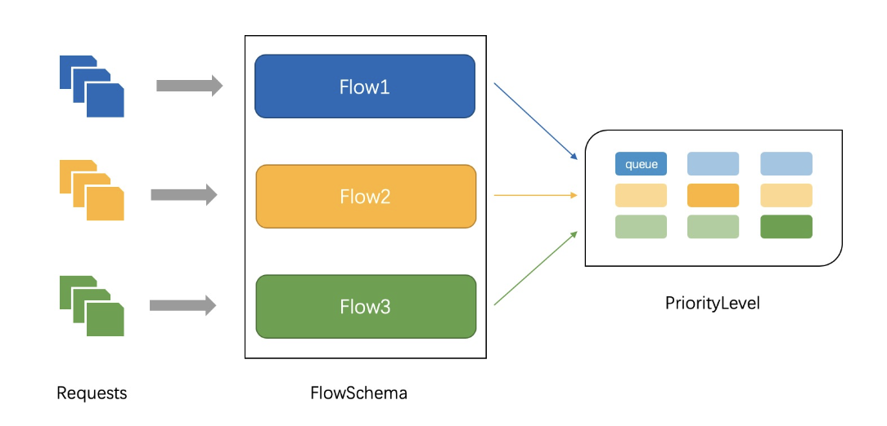

最近更新
kubernetes
apiserver
container
contraller
- kubernetes源码分析之schedule
- kubernetes源码分析之replicaset
- kubernetes源码分析之deploy
- kubernetes源码分析之endpoint
- services原理

traefik
channel详解
chan须知
在golang中,chan用于多个go中的数据交互,分有buff和无buff,定义如下,无buf会阻塞发送端以及接收端,知道buf里数据被取走发送端才会解除阻塞
有buf则在buf满之前只阻塞接收端,下面我们取看看底层数据结构,以及各种情况go如何调度
make(chan int,1) //无buff
make(chan int,10) //有buff
我们先来找下chan在底层的定义，通过dlv找到创建chan的具体实现是runtime.makechan
//chan.go
package main
func main(){
_ = make(chan int,1)
}
#通过dlv找到创建chan go具体的代码
root@node1:~/work/go/demo# dlv debug chan.go
Type 'help' for list of commands.
(dlv) b main.main
Breakpoint 1 set at 0x460dc6 for main.main() ./chan.go:3
(dlv) c
> main.main() ./chan.go:3 (hits goroutine(1):1 total:1) (PC: 0x460dc6)
1: package main
2:
=> 3: func main(){
4: _ = make(chan int,1)
5: }
(dlv) disass
TEXT main.main(SB) /root/work/go/demo/chan.go
chan.go:3 0x460dc0 493b6610 cmp rsp, qword ptr [r14+0x10]
chan.go:3 0x460dc4 7629 jbe 0x460def
=> chan.go:3 0x460dc6* 4883ec18 sub rsp, 0x18
chan.go:3 0x460dca 48896c2410 mov qword ptr [rsp+0x10], rbp
chan.go:3 0x460dcf 488d6c2410 lea rbp, ptr [rsp+0x10]
chan.go:4 0x460dd4 488d0585440000 lea rax, ptr [rip+0x4485]
chan.go:4 0x460ddb bb01000000 mov ebx, 0x1
chan.go:4 0x460de0 e87b38faff call $runtime.makechan
chan.go:5 0x460de5 488b6c2410 mov rbp, qword ptr [rsp+0x10]
chan.go:5 0x460dea 4883c418 add rsp, 0x18
chan.go:5 0x460dee c3 ret
chan.go:3 0x460def e84cccffff call $runtime.morestack_noctxt
chan.go:3 0x460df4 ebca jmp $main.main
#通过不断输入si跳转到runtime.makechan后 找到文件位置如下
##> runtime.makechan() /usr/local/go/src/runtime/chan.go:72 (PC: 0x404660)
下面我们一起来看看具体的数据结构
channel 数据结构
//可以简单理解成环形buf, 具体结构看下图
type hchan struct {
//整个chan <-放了多少数据
qcount uint // total data in the queue
//总共可以放多少数据
dataqsiz uint // size of the circular queue
//存放数据的数组
buf unsafe.Pointer // points to an array of dataqsiz elements
//能够收发元素的大小
elemsize uint16
closed uint32
//make 里chan的类型
elemtype *_type // element type
//发送处理到的index
sendx uint // send index
//接收buf的index
recvx uint // receive index
//被阻塞的接收g列表，双向链表
recvq waitq // list of recv waiters
//被阻塞的发送g列表
sendq waitq // list of send waiters
// lock protects all fields in hchan, as well as several
// fields in sudogs blocked on this channel.
//
// Do not change another G's status while holding this lock
// (in particular, do not ready a G), as this can deadlock
// with stack shrinking.
lock mutex
}
这段数据结构还挺简单的,主要就是一个环形数组,我们继续看make初始化方法
//篇幅有限,删除掉了一堆校验
func makechan(t *chantype, size int) *hchan {
elem := t.elem
mem, overflow := math.MulUintptr(elem.size, uintptr(size))
var c *hchan
switch {
//mem为0,对应我们make(chan type,0)这种情况,仅分配一段内存
case mem == 0:
// Queue or element size is zero.
c = (*hchan)(mallocgc(hchanSize, nil, true))
// Race detector uses this location for synchronization.
c.buf = c.raceaddr()
//存储的类型不是指针类型,分配一段内存空间
//补充 elem.ptrdata对应是该结构指针截止的长度位置
case elem.ptrdata == 0:
// Elements do not contain pointers.
// Allocate hchan and buf in one call.
c = (*hchan)(mallocgc(hchanSize+mem, nil, true))
c.buf = add(unsafe.Pointer(c), hchanSize)
//默认分配内存
default:
// Elements contain pointers.
c = new(hchan)
c.buf = mallocgc(mem, elem, true)
}
c.elemsize = uint16(elem.size)
c.elemtype = elem
c.dataqsiz = uint(size)
lockInit(&c.lock, lockRankHchan)
return c
}
初始分配就是分配好hchan的结构体,接下来我们看发送和接收数据。
channel 发送数据
在上文中的代码我们改成如下结果，根据dlv分析得到执行函数未runtime.chansend1,下面我们看看具体的代码,由于代码比较复杂,我们先看流程图,后根据每种情况
看具体代码
//chan.go
package main
func main(){
chan1 := make(chan int,10)
chan1 <- 1
chan1 <- 2
}
#寻找发送数据代码位置
> main.main() ./chan.go:5 (PC: 0x458591)
Warning: debugging optimized function
chan.go:4 0x458574 488d05654b0000 lea rax, ptr [rip+0x4b65]
chan.go:4 0x45857b bb0a000000 mov ebx, 0xa
chan.go:4 0x458580 e8fbb6faff call $runtime.makechan
chan.go:4 0x458585 4889442410 mov qword ptr [rsp+0x10], rax
chan.go:5 0x45858a 488d1d2f410200 lea rbx, ptr [rip+0x2412f]
=> chan.go:5 0x458591 e8cab8faff call $runtime.chansend1
chan.go:6 0x458596 488b442410 mov rax, qword ptr [rsp+0x10]
chan.go:6 0x45859b 488d1d26410200 lea rbx, ptr [rip+0x24126]
chan.go:6 0x4585a2 e8b9b8faff call $runtime.chansend1
chan.go:7 0x4585a7 488b6c2418 mov rbp, qword ptr [rsp+0x18]
chan.go:7 0x4585ac 4883c420 add rsp, 0x20
# runtime.chansend1() /usr/local/go/src/runtime/chan.go:144 (PC: 0x403e60)
# chan 发送数据流程图
+-----------+
| put data |
+-----------+
^
| buf没满
|
+--------------+ chan not nil +-------------------+ +------------+ not sudog +-----------+ buf满了 +-----------------------+ +---------------------+
| channel | --------------> | non blocking | --> | lock | -----------> | chan | -------> | pack sudog && enqueue | --> | go park && schedule |
+--------------+ +-------------------+ +------------+ +-----------+ +-----------------------+ +---------------------+
| | |
| chan is nil | is close && full | get sudog
v v v
+--------------+ +-------------------+ +------------+ +-----------+ +-----------------------+
| gopark | | return false | | send | -----------> | copy data | -------> | goready |
+--------------+ +-------------------+ +------------+ +-----------+ +-----------------------+
由上图得知,我们chan <- i会遇到几种情况
- 如果recvq上存在被阻塞的g,则会直接讲数据发给当前g,设置成下一个运行的g
- 如果chan buf没满,直接将数据存到buf中
- 如果都不满足,创建一个sudog,并将其加入chan的sendq队列,当前g陷入阻塞等待chan的数据被接收 下面我们再结合代码看下具体的实现
首先判断chan为空,永久阻塞，
func chansend(c *hchan, ep unsafe.Pointer, block bool, callerpc uintptr) bool {
//c为空且为阻塞,park住等待接收端接收
if c == nil {
if !block {
return false
}
gopark(nil, nil, waitReasonChanSendNilChan, traceEvGoStop, 2)
throw("unreachable")
}
然后判断非阻塞且未被关闭且buf满了,返回false,然后加锁
if !block && c.closed == 0 && full(c) {
return false
}
lock(&c.lock)
然后判断hchan.waitq上是否有等待的g,也就是代码里<-chan的g,如果拿到了g,则执行send
if sg := c.recvq.dequeue(); sg != nil {
// Found a waiting receiver. We pass the value we want to send
// directly to the receiver, bypassing the channel buffer (if any).
send(c, sg, ep, func() { unlock(&c.lock) }, 3)
return true
}
dequeue()是拿g的逻辑,waitq是一个sudog的双向链表,存了first,last的sudog,sudog我们在runtime系列里会有一节详解,
func (q *waitq) dequeue() *sudog {
for {
sgp := q.first
if sgp == nil {
return nil
}
y := sgp.next
if y == nil {
q.first = nil
q.last = nil
} else {
y.prev = nil
q.first = y
sgp.next = nil // mark as removed (see dequeueSudoG)
}
if sgp.isSelect && !sgp.g.selectDone.CompareAndSwap(0, 1) {
continue
}
return sgp
}
}
下面我们再来看看send的逻辑，sendDirect将chan里的数据拷贝给g,同时通过goready唤醒对应取数据的g
func send(c *hchan, sg *sudog, ep unsafe.Pointer, unlockf func(), skip int) {
if sg.elem != nil {
sendDirect(c.elemtype, sg, ep)
sg.elem = nil
}
gp := sg.g
unlockf()
gp.param = unsafe.Pointer(sg)
sg.success = true
if sg.releasetime != 0 {
sg.releasetime = cputicks()
}
goready(gp, skip+1)
}
当waitq上没有g在等待的时候，如果buf没满,将数据放到buf上继续
if c.qcount < c.dataqsiz {
// Space is available in the channel buffer. Enqueue the element to send.
qp := chanbuf(c, c.sendx)
if raceenabled {
racenotify(c, c.sendx, nil)
}
typedmemmove(c.elemtype, qp, ep)
c.sendx++
if c.sendx == c.dataqsiz {
c.sendx = 0
}
c.qcount++
unlock(&c.lock)
return true
}
当buf满了,阻塞当前这个发送的g,并通过acquireSudog获取一个sudog绑定上当前的g,放入sendq的g队列中,同时gopack,等待调度重新唤醒,直到接收了数据后,
将sudog通过releaseSudog释放回池
// Block on the channel. Some receiver will complete our operation for us.
gp := getg()
//获取sudog
mysg := acquireSudog()
mysg.releasetime = 0
if t0 != 0 {
mysg.releasetime = -1
}
// No stack splits between assigning elem and enqueuing mysg
// on gp.waiting where copystack can find it.
mysg.elem = ep
mysg.waitlink = nil
mysg.g = gp
mysg.isSelect = false
mysg.c = c
gp.waiting = mysg
gp.param = nil
c.sendq.enqueue(mysg)
// Signal to anyone trying to shrink our stack that we're about
// to park on a channel. The window between when this G's status
// changes and when we set gp.activeStackChans is not safe for
// stack shrinking.
gp.parkingOnChan.Store(true)
gopark(chanparkcommit, unsafe.Pointer(&c.lock), waitReasonChanSend, traceEvGoBlockSend, 2)
// Ensure the value being sent is kept alive until the
// receiver copies it out. The sudog has a pointer to the
// stack object, but sudogs aren't considered as roots of the
// stack tracer.
KeepAlive(ep)
// someone woke us up.
if mysg != gp.waiting {
throw("G waiting list is corrupted")
}
gp.waiting = nil
gp.activeStackChans = false
closed := !mysg.success
gp.param = nil
if mysg.releasetime > 0 {
blockevent(mysg.releasetime-t0, 2)
}
mysg.c = nil
releaseSudog(mysg)
if closed {
if c.closed == 0 {
throw("chansend: spurious wakeup")
}
panic(plainError("send on closed channel"))
}
return true
chan接收数据
我们还是通过dlv找到接收数据具体调用为 CALL runtime.chanrecv1(SB),下面我们来看看具体流程，流程图如下
+------------------+
| recv |
+------------------+
block ^
+-----------------------------------+ | sendq.dequeue()
| v |
+----------------+ chan not nil +--------+ not block && not recv +------+ +--------------------+ +------------------+ buf为空 +-----------------------+ +-------------------+
| channelrecv | --------------> | block? | -----------------------> | lock | --> | chan close? | --> | not close | -------> | pack sudog && enqueue | --> | go park && schedule |
+----------------+ +--------+ +------+ +--------------------+ +------------------+ +-----------------------+ +---------------------+
| | |
| chan is nil | close && qcount=0 | buf不为空
v v v
+----------------+ +--------------------+ +------------------+
| gopark forever | | return | | copy value |
+----------------+ +--------------------+ +------------------+
下面让我们来看看具体代码,与发送重复的代码就省略了
先加锁,如果chan已经被关闭了且没有多余的数据了,直接返回,未关闭则先从sendq上取一个sudog,上文我们提到满了的时候则会有g通过sudog被gopark在sendq上
所以优先查看是否有被gopark的发送sudog,在recv方法里去ready，recv主要是唤醒发送的发送sudog,跟上文的send方法类似
lock(&c.lock)
if c.closed != 0 {
if c.qcount == 0 {
if raceenabled {
raceacquire(c.raceaddr())
}
unlock(&c.lock)
if ep != nil {
typedmemclr(c.elemtype, ep)
}
return true, false
}
} else {
if sg := c.sendq.dequeue(); sg != nil {
recv(c, sg, ep, func() { unlock(&c.lock) }, 3)
return true, true
}
}
当没没有send的sudog时候,判断buf是不是为空,不为空则取出数据,buf为空的情况下如果不需要阻塞,直接解锁返回
if c.qcount > 0 {
// Receive directly from queue
qp := chanbuf(c, c.recvx)
if raceenabled {
racenotify(c, c.recvx, nil)
}
if ep != nil {
typedmemmove(c.elemtype, ep, qp)
}
typedmemclr(c.elemtype, qp)
c.recvx++
if c.recvx == c.dataqsiz {
c.recvx = 0
}
c.qcount--
unlock(&c.lock)
return true, true
}
if !block {
unlock(&c.lock)
return false, false
}
后面跟我们的send逻辑类似.获取一个sudog,添加进hchan.recvq里,等待chansend里逻辑唤醒,唤醒后通过releaseSudog放回sudog
// no sender available: block on this channel.
gp := getg()
mysg := acquireSudog()
mysg.releasetime = 0
if t0 != 0 {
mysg.releasetime = -1
}
// No stack splits between assigning elem and enqueuing mysg
// on gp.waiting where copystack can find it.
mysg.elem = ep
mysg.waitlink = nil
gp.waiting = mysg
mysg.g = gp
mysg.isSelect = false
mysg.c = c
gp.param = nil
c.recvq.enqueue(mysg)
// Signal to anyone trying to shrink our stack that we're about
// to park on a channel. The window between when this G's status
// changes and when we set gp.activeStackChans is not safe for
// stack shrinking.
gp.parkingOnChan.Store(true)
gopark(chanparkcommit, unsafe.Pointer(&c.lock), waitReasonChanReceive, traceEvGoBlockRecv, 2)
// someone woke us up
if mysg != gp.waiting {
throw("G waiting list is corrupted")
}
gp.waiting = nil
gp.activeStackChans = false
if mysg.releasetime > 0 {
blockevent(mysg.releasetime-t0, 2)
}
success := mysg.success
gp.param = nil
mysg.c = nil
releaseSudog(mysg)
return true, success
time
golang在1.14之前time改动了很多个版本,从全局到分片到网络轮询器,我们以最新的1.20.4讲解，有兴趣的同学可以看看对应的issues 我们还是先看图(//todo ASSIC不好画,后面有空在画,不影响阅读),再看具体代码
- 全局四叉堆:锁争用严重
- 分片四叉堆: 固定分割成64个hash减少锁力度,处理器和线程之间切换影响性能
- 网络轮询器版本: 所有的计时器以最小四叉堆存储在runtime.p 下面我们来看下网络轮询起中的版本
time 结构
time在1.14版本后，每个p上都挂了一个time的四叉小顶堆，结构如下,根据time上的when字段排序,具体调度触发time由schedule逻辑以及sysmon线程
结合netpoll去执行,可以看看runtime系列里schdule逻辑,以及netpoll文章

p里与time相关的字段如下
type p struct {
//堆顶最早一个执行时间
timer0When atomic.Int64
//timer修改最早时间
timerModifiedEarliest atomic.Int64
//操作timers数组的互斥锁
timersLock mutex
//四叉堆
timers []*timer
//四叉堆里timer的总数
numTimers atomic.Uint32
//标记删除的数量
deletedTimers atomic.Uint32
}
下面先简单了解下timer的具体结构,也就是四叉堆里的元素,方便后面具体调用过程
type timer struct {
//在堆上的time会保存对应p
pp puintptr
//计时器被实际唤醒时间
when int64
//周期性的定时任务两次被唤醒的间隔
period int64
//被唤醒的回调函数
f func(any, uintptr)
//回调函数传参
arg any
//回调函数的参数,在netpoll使用
seq uintptr
//处于特定状态,设置when字段
nextwhen int64
//状态
status atomic.Uint32
}
简单点来说,就是timer启动的时候,插入当前p上的四叉堆,同时p记录要执行的时间,//todo 我们在看看新建一个timer具体的流程与代码,使用dlv找到我们具体的代码为addtimer
添加定时器
// src/runtime/time.go
func addtimer(t *timer) {
t.status.Store(timerWaiting)
when := t.when
//获取当前g所在的m,会加锁处理,以及对应的p
mp := acquirem()
pp := getg().m.p.ptr()
//加锁
lock(&pp.timersLock)
//清理掉timer堆中删除的(也就是调用time.stop),以及过期的timer
cleantimers(pp)
//添加timer到堆上,主要调用堆排序算法插入,感兴趣可以自己去源码里看看
//同时将堆顶元素存到p的timer0When字段
doaddtimer(pp, t)
unlock(&pp.timersLock)
//when的值小于pollUntil时间，唤醒正在netpoll休眠的线程
wakeNetPoller(when)
releasem(mp)
}
我们根据上面代码了解了添加定时器,删除,修改调整定时器这里不在啰嗦了,就是操作四叉堆以及timer的状态机,我们重点描述下调度的触发逻辑
触发定时器
checkTimers是调度器触发timer运行的函数,主要在以下函数中触发,我们来看看具体触发逻辑
- schedule()
- findrunnable() 获取可执行的g
- stealWork()
- sysmon()
以上3个地方调用的都是checkTimers函数,该函数调整堆,删除一些比如过期的timer,调用time.stop的timer,以及返回下一个timer需要执行的时间,如果有
需要执行的则直接执行,下面看看具体代码
// src/runtime/time.go
func checkTimers(pp *p, now int64) (rnow, pollUntil int64, ran bool) {
//下一个timer的调度时间
next := pp.timer0When.Load()
//某个timer被修改,且修改的触发时间早于next
nextAdj := pp.timerModifiedEarliest.Load()
if next == 0 || (nextAdj != 0 && nextAdj < next) {
next = nextAdj
}
//没有需要调度的
if next == 0 {
return now, 0, false
}
if now == 0 {
now = nanotime()
}
//当前m不是该p绑定的,也就是说通过sysmon调度的，或者需要删除的timer小于1/4堆内元素
if now < next {
if pp != getg().m.p.ptr() || int(pp.deletedTimers.Load()) <= int(pp.numTimers.Load()/4) {
return now, next, false
}
}
lock(&pp.timersLock)
//四叉堆不为空
if len(pp.timers) > 0 {
//更新pp.timerModifiedEarliest数量
adjusttimers(pp, now)
for len(pp.timers) > 0 {
//运行计时器,主要是调整四叉堆,以及操作状态及,以及最早的timer需要运行的时间
if tw := runtimer(pp, now); tw != 0 {
if tw > 0 {
pollUntil = tw
}
break
}
ran = true
}
}
//四叉堆的维护以及删除过期定时器
if pp == getg().m.p.ptr() && int(pp.deletedTimers.Load()) > len(pp.timers)/4 {
clearDeletedTimers(pp)
}
unlock(&pp.timersLock)
//返回现在时间,以及下一个timer的运行时间,ran为是否有下一个需要运行
return now, pollUntil, ran
}
sysmon调度
调度的地方有很多,只是举例在sysmon里的调度,就是通过timeSleepUntil()函数下一个需要调度的时间
// src/runtime/proc.go
func sysmon() {
//获取pp.timer0When或者timerModifiedEarliest
next := timeSleepUntil()
if next := timeSleepUntil(); next < now {
startm(nil, false)
}
golang select详解
核心数据结构如下,除了default,其它的select{case:}都与chan有关,scase.c则存储的是一个channel,在1.channel详解我们详细了解过chan。下面我们来
看看select的几种情况
// go/src/runtime/select.go
type scase struct {
c *hchan // chan
elem unsafe.Pointer // data element
}
sync once
sync.Once只有一个方法,sync.Do(),通常我们用来调用在多个地方执行保证只执行一次的方法,如初始化,关闭fd等 具体代码如下,通过atomic获取done,为0则抢锁执行do传进来的方法,执行完后将done atomic变成1
type Once struct {
done uint32
m Mutex
}
func (o *Once) Do(f func()) {
if atomic.LoadUint32(&o.done) == 0 {
o.doSlow(f)
}
}
func (o *Once) doSlow(f func()) {
o.m.Lock()
defer o.m.Unlock()
if o.done == 0 {
defer atomic.StoreUint32(&o.done, 1)
f()
}
}
sync.pool
主要为了减少gc,减少gc在mark的时候需要标记的inuse_objects数量过多。通俗点来说就是一个内存池,我们自己实现g et,put。
需要注意的是,仅存在与pool中,在外没有被其它地方引用,可能会被pool删除,下面我们来看看调用sync.Pool具体流程

根据流程图我们先一起梳理下,所有的pool都被存储在allPools这个数组中,注意不要不停的生成新的sync.Pool,allPools是加锁去append
sync.pool init
pool的初始化调用的是pool.poolCleanup的方法,主要逻辑如下，将old里每个p清空,将allpools里p的local,localSize移动到victim,victimSize
然后将allpool移动给oldPools,方便后续清空
func poolCleanup() {
for _, p := range oldPools {
p.victim = nil
p.victimSize = 0
}
for _, p := range allPools {
p.victim = p.local
p.victimSize = p.localSize
p.local = nil
p.localSize = 0
}
oldPools, allPools = allPools, nil
}
pool.get
现在我们来看看get的逻辑
- 通过调用pool.Get->pool.pin->pool.pinSlow获取一个poolLocal,具体代码如下
func (p *Pool) Get() any {
l, pid := p.pin()
}
func (p *Pool) pin() (*poolLocal, int) {
//获取pid,使g绑定p并禁止抢占(本地队列)
pid := runtime_procPin()
s := runtime_LoadAcquintptr(&p.localSize) // load-acquire
l := p.local // load-consume
//如果pid比我本地Pool.localSize小则直接返回
if uintptr(pid) < s {
return indexLocal(l, pid), pid
}
//生成新的poolLocal
return p.pinSlow()
}
func (p *Pool) pinSlow() (*poolLocal, int) {
//解除独占
runtime_procUnpin()
//加锁
allPoolsMu.Lock()
defer allPoolsMu.Unlock()
pid := runtime_procPin()
// poolCleanup won't be called while we are pinned.
s := p.localSize
l := p.local
if uintptr(pid) < s {
return indexLocal(l, pid), pid
}
//将poolLocal追加到allPools数组里
if p.local == nil {
allPools = append(allPools, p)
}
// If GOMAXPROCS changes between GCs, we re-allocate the array and lose the old one.
size := runtime.GOMAXPROCS(0)
//local根据p的个数设置数组长度
local := make([]poolLocal, size)
atomic.StorePointer(&p.local, unsafe.Pointer(&local[0])) // store-release
runtime_StoreReluintptr(&p.localSize, uintptr(size)) // store-release
return &local[pid], pid
}
然后我们接着看后续逻辑
func (p *Pool) Get() any {
l, pid := p.pin()
//最优先元素,类似于p.runnext，或者cpu l1 缓存
x := l.private
l.private = nil
//如果没取到private
if x == nil {
// Try to pop the head of the local shard. We prefer
// the head over the tail for temporal locality of
// reuse.
//去shared取,pool.local[pid].poolLocal.shared
x, _ = l.shared.popHead()
//shared没拿到,去别的pid里对应的poolLocal.shared偷一个
if x == nil {
x = p.getSlow(pid)
}
}
}
我们来看看从别的poolLocal获取内存具体的操作
func (p *Pool) getSlow(pid int) any {
size := runtime_LoadAcquintptr(&p.localSize) // load-acquire
locals := p.local // load-consume
//从别的slow里偷
for i := 0; i < int(size); i++ {
l := indexLocal(locals, (pid+i+1)%int(size))
if x, _ := l.shared.popTail(); x != nil {
return x
}
}
//在victim里找
size = atomic.LoadUintptr(&p.victimSize)
if uintptr(pid) >= size {
return nil
}
locals = p.victim
l := indexLocal(locals, pid)
if x := l.private; x != nil {
l.private = nil
return x
}
//在victim里别的p上偷
for i := 0; i < int(size); i++ {
l := indexLocal(locals, (pid+i)%int(size))
if x, _ := l.shared.popTail(); x != nil {
return x
}
}
// Mark the victim cache as empty for future gets don't bother
// with it.
atomic.StoreUintptr(&p.victimSize, 0)
//都没有返回nil
return nil
}
若果没有从getSlow上获取,还会调用pool.New,也就是我们sync.Pool{New:func}的方法,都拿不到则返回为nil
if x == nil && p.New != nil {
x = p.New()
}
return x
总结下,get的具体逻辑为
- 是否有Pool，没有则生成Pool并添加到runtime.allPools上
- 从Pool.poolLocal[pid].poolLocalInternal.private上拿,拿不到去shared上拿,还拿不到去别的pid上的shared拿
- 再拿不到从别的即将要被清空的Pool.victim上拿,逻辑如上,还拿不到则执行sync.Pool{New:func}。还拿不到则返回nil
pool.put
下面我们再来看看Pool.put,先放到Pool.poolLocal[pid].private,如果有值了,调用Pool.poolLocal[pid].shared.pushHead
pushHead里如果没值,则生成poolChainElt,且val长度为8,如果满了,则扩容,每次创建新的poolChainElt并扩容val长度都会*2,最大10亿多,并将新生成的
poolChainElt通过双向链表挂到之前的poolChainElt后面
// Put adds x to the pool.
func (p *Pool) Put(x any) {
if x == nil {
return
}
//获取一个[pid]poolLocal
l, _ := p.pin()
//[pid]poolLocal.poolLocalInternal.Private为空则赋值
if l.private == nil {
l.private = x
} else {
//放[pid]poolLocal.poolLocalInternal.shared.head上
l.shared.pushHead(x)
}
runtime_procUnpin()
if race.Enabled {
race.Enable()
}
}
//l.shared.pushHead(x)
func (c *poolChain) pushHead(val any) {
d := c.head
//head为空则生成一个poolChainElt,且val为8长度的双向链表节点
if d == nil {
// Initialize the chain.
const initSize = 8 // Must be a power of 2
d = new(poolChainElt)
d.vals = make([]eface, initSize)
c.head = d
storePoolChainElt(&c.tail, d)
}
//放入节点的head
if d.pushHead(val) {
return
}
//没放入成功,满了 则生成下一个链表节点,并将节点容量并乘2
newSize := len(d.vals) * 2
if newSize >= dequeueLimit {
// Can't make it any bigger.
newSize = dequeueLimit
}
d2 := &poolChainElt{prev: d}
d2.vals = make([]eface, newSize)
c.head = d2
storePoolChainElt(&d.next, d2)
//扩容后重新放入
d2.pushHead(val)
}
sync gc部分
同上sync.pool.init 将Pool.local移动到Pool.victim ,将Pool.localSize移动到Pool.victimSize并将上一次的Pool.victim，Pool.victimSize清空
lock 锁实现基础
锁的定义如下,先看下state字段,sema后文会详细介绍
// src/sync/mutex.go
type Mutex struct {
//32位 前29位表示有多少人g等待互斥锁的释放，后三位分别为mutexLocked，mutexWoken，mutexStarving
state int32
//信号量 对应在src/runtime/sema.go上的semTabSize存储,挂着等待锁的g
sema uint32
}
- mutexLocked表示是否已经加锁 1为已加锁
- mutexWoken 表示从正常模式被从唤醒
- mutexStarving 进入饥饿模式
锁正常模式和饥饿模式
正常模式下,锁是先入先出,排队获取锁，新唤醒的g与新创建的g竞争时(这时候占有cpu)，大概率拿不到锁,go里面解决办法是出现超过1ms没拿到锁的g,锁进入饥饿模式
饥饿模式下,互斥锁会直接交给等待队列最前面的g,新的g直接丢在队尾,且不能自旋(没有cpu片)
取消条件为队尾的g获取到了锁,或者当前g获取锁1ms内
加锁逻辑
加锁逻辑,如果状态位是0,则改成1然后加锁成功,如果已经有锁的情况下，进入m.lockSlow()逻辑
// src/sync/mutex.go
func (m *Mutex) Lock() {
// Fast path: grab unlocked mutex.
if atomic.CompareAndSwapInt32(&m.state, 0, mutexLocked) {
return
}
// Slow path (outlined so that the fast path can be inlined)
m.lockSlow()
}
如果当前不能加锁,则进入自旋等模式等待锁释放,大体流程如下
- 通过runtime_canSpin判断是否能进入自旋
- 运行在多 CPU 的机器上
- 当前g获取锁进入自旋少于4次
- 至少有个p runq为空
- 通过自旋等待互斥锁的释放
- 计算互斥锁的最新状态
- 更新互斥锁的状态并获取锁
func (m *Mutex) lockSlow() {
//省略自旋获取锁代码
//通过信号量保证只会有一个g获取到锁,也就是我们开头的Mutex.sema
runtime_SemacquireMutex(&m.sema, queueLifo, 1)
}
下面我们看看信号量的逻辑,了解完信号量后接着分析runtime_SemacquireMutex
信号量详解
信号量的存储方式如下图,全局一个semtable,semtable是一个251长度的数据,每一个数组元素根据&m.sema hash后,用二叉树存储
比如lock A addr=1,lock b addr = 252,根据hash后,都在semtable[1]里,用树存储,而等待锁lock A的所有的g都通过sudog用
waitlink连接,具体结构图如下
 下面我们接着看
下面我们接着看runtime_SemacquireMutex函数
//runtime_SemacquireMutex()->semacquire1()
func semacquire1(addr *uint32, lifo bool, profile semaProfileFlags, skipframes int, reason waitReason) {
//获取当前的g
gp := getg()
//获取一个sudog
s := acquireSudog()
//通过地址hash得到二叉树跟目录
root := semtable.rootFor(addr)
for {
lockWithRank(&root.lock, lockRankRoot)
//root上等待锁的sudog的个数
root.nwait.Add(1)
if cansemacquire(addr) {
root.nwait.Add(-1)
unlock(&root.lock)
break
}
//找到该addr在树上对应的节点
root.queue(addr, s, lifo)
//阻塞gopark,解锁的时候goready恢复
goparkunlock(&root.lock, reason, traceEvGoBlockSync, 4+skipframes)
if s.ticket != 0 || cansemacquire(addr) {
break
}
}
releaseSudog(s)
}
信号量解锁详解
具体代码与加锁的信号量处理差不多,简略代码如下,有兴趣的可以看看原来代码
// src/runtime/sema.go
func semrelease1(addr *uint32, handoff bool, skipframes int) {
readyWithTime(s, 5+skipframes)
}
func readyWithTime(s *sudog, traceskip int) {
if s.releasetime != 0 {
s.releasetime = cputicks()
}
goready(s.g, traceskip)
}
读写锁RWMutex
我们依次分析获取写锁和读锁的实现原理
type RWMutex struct {
w Mutex // 复用读写锁
writerSem uint32 // 写等待读信号量
readerSem uint32 // 读等待写信号量
readerCount atomic.Int32 // 执行的读操作数量
readerWait atomic.Int32 // 写操作被阻塞时等待的读操作个数
}
写锁
复用mutex锁,分几种情况
- 已有写锁,rw.w.Lock()将会阻塞，上文mutex逻辑，同时将readerCount设置最小值
- readerCount有值,说明有读锁,调用runtime_SemacquireRWMutex休眠，等待读锁释放writerSem信号量
func (rw *RWMutex) Lock() {
rw.w.Lock()
r := rw.readerCount.Add(-rwmutexMaxReaders) + rwmutexMaxReaders
if r != 0 && rw.readerWait.Add(r) != 0 {
runtime_SemacquireRWMutex(&rw.writerSem, false, 0)
}
}
读锁
readerCount为负数(-1<<30),则说明有写锁
直接调用runtime_SemacquireRWMutexR,如果有写锁,会阻塞readerSem
如果该方法的结果为非负数，则通过信号量readerSem阻塞,后续等待Unlock解写锁唤醒

func (rw *RWMutex) RLock() {
if rw.readerCount.Add(1) < 0 {
// A writer is pending, wait for it.
runtime_SemacquireRWMutexR(&rw.readerSem, false, 0)
}
}
waitgroup
waitgroup比较简单,当add的总数跟done的总数一样,通过信号量唤醒WaitGroup.wait()方法
有兴趣的可以了解下semtable后阅读下源码,挺简单的
type WaitGroup struct {
noCopy noCopy
//类似锁,需要注意高32位低32有大小端问题 add总数-wait总数
state atomic.Uint64 // high 32 bits are counter, low 32 bits are waiter count.
//存储在semtable上,上文有详细讲解
sema uint32
}
SingleFlight
//todo 时间关系未更完有空补充完
SingleFlight主要用于多个并发操作,只执行其中一个,例如多个get操作,防止缓存击穿
主要就是一个map加锁,多个操作通过map只执行一次,通过WaitGroup等待请求的返回
type Group struct {
mu sync.Mutex // protects m
m map[string]*call // lazily initialized
}
type call struct {
wg sync.WaitGroup
val any
err error
//累计多少个请求
dups int
chans []chan<- Result
}
map详解
本文基于golang 1.22版本
哈希表的实现方式
- 开放寻址法(感兴趣可自行查找了解)
- 双哈希法 开放寻址的改良,多次哈希减少冲突
- 拉链法 将一个bucket实现成一个链表,hash后落在同一个bucket里的key会插入链表来解决哈希冲突,golang是采用的链表解决冲突
下文我们将从map的数据结构,初始化,增删改查来分析源码是怎么实现的
如何查找map创建源码
golang代码如下，我们使用go tool compile -N -l -S main.go查看汇编代码,如下,小于8的通过runtime.makemap_small,大于8的runtime.makemap
还需注意,make(map[xx]xx,int64)这种形式会被特殊处理,最终也调用runtime.makemap，我们以runtime.makemap来分析
package main
var m1 = make(map[int]int, 0)
var m2 = make(map[int]int, 10)
...
(main.go:3) CALL runtime.makemap_small(SB)
(main.go:4) CALL runtime.makemap(SB)
...
函数的定义如下
//cmd/compile/internal/typecheck/_builtin/runtime.go
func makemap64(mapType *byte, hint int64, mapbuf *any) (hmap map[any]any)
func makemap(mapType *byte, hint int, mapbuf *any) (hmap map[any]any)
func makemap_small() (hmap map[any]any)
具体我们来看makemap这个函数
//runtime/map.go
func makemap(t *maptype, hint int, h *hmap) *hmap {
//@step1 判断是否溢出
mem, overflow := math.MulUintptr(uintptr(hint), t.Bucket.Size_)
if overflow || mem > maxAlloc {
hint = 0
}
//@step2 初始化hmap结构
// initialize Hmap
if h == nil {
h = new(hmap)
}
//随机哈希种子,防止碰撞共计
h.hash0 = uint32(rand())
// Find the size parameter B which will hold the requested # of elements.
// For hint < 0 overLoadFactor returns false since hint < bucketCnt.
B := uint8(0)
//@step3 设置桶的数量(2^B方个筒)
for overLoadFactor(hint, B) {
B++
}
h.B = B
//@step4 桶数量大于0 初始化桶内存
// allocate initial hash table
// if B == 0, the buckets field is allocated lazily later (in mapassign)
// If hint is large zeroing this memory could take a while.
if h.B != 0 {
var nextOverflow *bmap
h.buckets, nextOverflow = makeBucketArray(t, h.B, nil)
if nextOverflow != nil {
h.extra = new(mapextra)
h.extra.nextOverflow = nextOverflow
}
}
return h
}
我们总结下,创建map的代码主要是返回了一个底层的hmap对象,具体的我们来看下hmap的结构体,主要的结构如下,bmap结构下文有图

//runtime/map.go
type hmap struct {
//总元素
count int // # live cells == size of map. Must be first (used by len() builtin)
//状态标位,如扩容中,正在被写入等
flags uint8
//桶的个数=2^B
B uint8 // log_2 of # of buckets (can hold up to loadFactor * 2^B items)
uint16 // approximate number of overflow buckets; see incrnoverflow for details
//哈希种子,防止哈希碰撞共计
hash0 uint32 // hash seed
//存储桶的数组
buckets unsafe.Pointer // array of 2^B Buckets. may be nil if count==0.
//发生扩容后 存的旧的bucket数组
oldbuckets unsafe.Pointer // previous bucket array of half the size, non-nil only when growing
nevacuate uintptr // progress counter for evacuation (buckets less than this have been evacuated)
//扩展字段
extra *mapextra // optional fields
}
我们来总结下map的初始化
- 判断长度调用makemap/makemap_small
- 创建hmap结构体,桶的个数为2^B
- 通过
makeBucketArray分配具体数据 - 分配扩展桶,具体个数我们来看
makeBucketArray的具体逻辑
makeBucketArray 的创建
- 当桶的个数小雨2^4时,由于数据较少,溢出桶没必要创建
- 多余2^4时,会创建2^(B-4)个溢出桶
- 溢出筒则添加到了buckets数组最后边,比如B=4,创建了16个桶+1个溢出筒,申请的数组长度为17
//runtime/map.go 省略了部分不相干代码
func makeBucketArray(t *maptype, b uint8, dirtyalloc unsafe.Pointer) (buckets unsafe.Pointer, nextOverflow *bmap) {
base := bucketShift(b)
nbuckets := base //桶的总个数
if b >= 4 {
nbuckets += bucketShift(b - 4) //添加了溢出筒
sz := t.Bucket.Size_ * nbuckets
up := roundupsize(sz, t.Bucket.PtrBytes == 0)
if up != sz {
nbuckets = up / t.Bucket.Size_
}
}
if dirtyalloc == nil {
buckets = newarray(t.Bucket, int(nbuckets))
}
//有溢出桶的情况下,由代码将buckers与overflow分割
if base != nbuckets {
nextOverflow = (*bmap)(add(buckets, base*uintptr(t.BucketSize)))
last := (*bmap)(add(buckets, (nbuckets-1)*uintptr(t.BucketSize)))
last.setoverflow(t, (*bmap)(buckets))
}
return buckets, nextOverflow
}
我们知道map的元素是放在bucket数组里,而具体存入的数据结构bmap如下图,我们放到map写入元素来讲解

map的读
map读写删除元素,逻辑整体差不多,都是找到对应的bucket桶然后去bmap里找,我们先看下读的相关逻辑,涉及到寻找key在map里对应的位置,
写仅在读的逻辑增加了map扩容,map对应的定义如下,根据key的不同,会调对应的mapaccess1(读),我们以map[any]any为例
//cmd/compile/internal/typecheck/_builtin/runtime.go
// *byte is really *runtime.Type
func makemap64(mapType *byte, hint int64, mapbuf *any) (hmap map[any]any)
func makemap(mapType *byte, hint int, mapbuf *any) (hmap map[any]any)
func makemap_small() (hmap map[any]any)
//读相关
func mapaccess1(mapType *byte, hmap map[any]any, key *any) (val *any)
func mapaccess1_fast32(mapType *byte, hmap map[any]any, key uint32) (val *any)
func mapaccess1_fast64(mapType *byte, hmap map[any]any, key uint64) (val *any)
func mapaccess1_faststr(mapType *byte, hmap map[any]any, key string) (val *any)
func mapaccess1_fat(mapType *byte, hmap map[any]any, key *any, zero *byte) (val *any)
func mapaccess2(mapType *byte, hmap map[any]any, key *any) (val *any, pres bool)
func mapaccess2_fast32(mapType *byte, hmap map[any]any, key uint32) (val *any, pres bool)
func mapaccess2_fast64(mapType *byte, hmap map[any]any, key uint64) (val *any, pres bool)
func mapaccess2_faststr(mapType *byte, hmap map[any]any, key string) (val *any, pres bool)
func mapaccess2_fat(mapType *byte, hmap map[any]any, key *any, zero *byte) (val *any, pres bool)
//写相关
func mapassign(mapType *byte, hmap map[any]any, key *any) (val *any)
func mapassign_fast32(mapType *byte, hmap map[any]any, key uint32) (val *any)
func mapassign_fast32ptr(mapType *byte, hmap map[any]any, key unsafe.Pointer) (val *any)
func mapassign_fast64(mapType *byte, hmap map[any]any, key uint64) (val *any)
func mapassign_fast64ptr(mapType *byte, hmap map[any]any, key unsafe.Pointer) (val *any)
func mapassign_faststr(mapType *byte, hmap map[any]any, key string) (val *any)
func mapiterinit(mapType *byte, hmap map[any]any, hiter *any)
func mapdelete(mapType *byte, hmap map[any]any, key *any)
func mapdelete_fast32(mapType *byte, hmap map[any]any, key uint32)
func mapdelete_fast64(mapType *byte, hmap map[any]any, key uint64)
func mapdelete_faststr(mapType *byte, hmap map[any]any, key string)
func mapiternext(hiter *any)
func mapclear(mapType *byte, hmap map[any]any)
//go 代码如下
var m1 = make(map[any]any, 10)
m1[10] = "20"
a := m1[10]
//对应的汇编如下
//CALL runtime.mapassign(SB) 写
//CALL runtime.mapaccess1(SB) 读
//runtime/map.go
//省略部分判断代码
func mapaccess1(t *maptype, h *hmap, key unsafe.Pointer) unsafe.Pointer {
//根据key,以及初始化map随机哈希种子hash0,生成哈希
hash := t.Hasher(key, uintptr(h.hash0))
//例如B=4,则m=1<<4-1
m := bucketMask(h.B)
//寻找hmap.buckes里对应的桶,hash&m,例如11&01=1,一半hash长度远超m的长度,而m取决于buckets的个数,无需关心hash具体的值
b := (*bmap)(add(h.buckets, (hash&m)*uintptr(t.BucketSize)))
//有旧的桶,扩容逻辑,下文详细讲解
if c := h.oldbuckets; c != nil {
if !h.sameSizeGrow() {
// There used to be half as many buckets; mask down one more power of two.
m >>= 1
}
oldb := (*bmap)(add(c, (hash&m)*uintptr(t.BucketSize)))
if !evacuated(oldb) {
b = oldb
}
}
//64位hash>>8*8-8,获取前8位 如(top)xxx....xxxxxx
top := tophash(hash)
bucketloop:
for ; b != nil; b = b.overflow(t) {
//bucketCnt 8个
for i := uintptr(0); i < bucketCnt; i++ {
//根据top选bmap里对应的key,value
if b.tophash[i] != top {
if b.tophash[i] == emptyRest {
break bucketloop
}
continue
}
//找到了key
k := add(unsafe.Pointer(b), dataOffset+i*uintptr(t.KeySize))
if t.IndirectKey() {
k = *((*unsafe.Pointer)(k))
}
//与我们要找的key相同,返回值
if t.Key.Equal(key, k) {
e := add(unsafe.Pointer(b), dataOffset+bucketCnt*uintptr(t.KeySize)+i*uintptr(t.ValueSize))
if t.IndirectElem() {
e = *((*unsafe.Pointer)(e))
}
return e
}
}
}
return unsafe.Pointer(&zeroVal[0])
}
map的写
上文我们详细分析了map的读,写仅在该基础里添加替换以及扩容,我们仅分析扩容
- 具体过程为达到最大负载系数或溢出桶太多执行扩容,再通过growWork迁移旧bucket里的元素
//runtime/map.go
func mapassign(t *maptype, h *hmap, key unsafe.Pointer) unsafe.Pointer {
again:
if h.growing() {
growWork(t, h, bucket)
}
//h.count+1>8 && h.count > bucket*6.5 || bucket count < noverflow < 2^15
if !h.growing() && (overLoadFactor(h.count+1, h.B) || tooManyOverflowBuckets(h.noverflow, h.B)) {
hashGrow(t, h)
goto again // Growing the table invalidates everything, so try again
}
}
执行hashGrow扩容,逻辑跟map初始化的逻辑蕾丝,将旧的buckets放入h.oldbuckets,重新初始化一个新的buckets数组
map元素的迁移在 growWork(t, h, bucket)中
//runtime/map.go
func hashGrow(t *maptype, h *hmap) {
// If we've hit the load factor, get bigger.
// Otherwise, there are too many overflow buckets,
// so keep the same number of buckets and "grow" laterally.
bigger := uint8(1)
if !overLoadFactor(h.count+1, h.B) {
bigger = 0
h.flags |= sameSizeGrow
}
oldbuckets := h.buckets
newbuckets, nextOverflow := makeBucketArray(t, h.B+bigger, nil)
flags := h.flags &^ (iterator | oldIterator)
if h.flags&iterator != 0 {
flags |= oldIterator
}
// commit the grow (atomic wrt gc)
h.B += bigger
h.flags = flags
h.oldbuckets = oldbuckets
h.buckets = newbuckets
h.nevacuate = 0
h.noverflow = 0
if h.extra != nil && h.extra.overflow != nil {
// Promote current overflow buckets to the old generation.
if h.extra.oldoverflow != nil {
throw("oldoverflow is not nil")
}
h.extra.oldoverflow = h.extra.overflow
h.extra.overflow = nil
}
if nextOverflow != nil {
if h.extra == nil {
h.extra = new(mapextra)
}
h.extra.nextOverflow = nextOverflow
}
// the actual copying of the hash table data is done incrementally
// by growWork() and evacuate().
}
growWork为扩容最后一步,执行扩容后map里元素的整理,大体逻辑如下图
- 需注意每次赋值/删除 触发growWork仅拌匀当前命中的bucket,顺带多搬运一个bucket
- 将一个bucket里的数据分流到两个bucket里
- advanceEvacuationMark 哈希的计数器,扩容完成后清理oldbuckets

func growWork(t *maptype, h *hmap, bucket uintptr) {
evacuate(t, h, bucket&h.oldbucketmask())
if h.growing() {
evacuate(t, h, h.nevacuate)
}
}
func evacuate(t *maptype, h *hmap, oldbucket uintptr) {
//旧的buckets
b := (*bmap)(add(h.oldbuckets, oldbucket*uintptr(t.BucketSize)))
newbit := h.noldbuckets()
//x,y如上图将oldbuckets迁移到buckets过程,省略了部分代码
if !evacuated(b) {
var xy [2]evacDst
x := &xy[0]
x.b = (*bmap)(add(h.buckets, oldbucket*uintptr(t.BucketSize)))
x.k = add(unsafe.Pointer(x.b), dataOffset)
x.e = add(x.k, bucketCnt*uintptr(t.KeySize))
if !h.sameSizeGrow() {
// Only calculate y pointers if we're growing bigger.
// Otherwise GC can see bad pointers.
y := &xy[1]
y.b = (*bmap)(add(h.buckets, (oldbucket+newbit)*uintptr(t.BucketSize)))
y.k = add(unsafe.Pointer(y.b), dataOffset)
y.e = add(y.k, bucketCnt*uintptr(t.KeySize))
}
}
if oldbucket == h.nevacuate {
advanceEvacuationMark(h, t, newbit)
}
}
切片详解
本文基于go1.22.0版本 创建切片,以及扩容调用的是如下runtime里函数,定义如下,我们先过下初始化的过程,然后重点分析下扩容过程
//cmd/compile/internal/typecheck/_builtin/runtime.go
func makeslice(typ *byte, len int, cap int) unsafe.Pointer
func makeslice64(typ *byte, len int64, cap int64) unsafe.Pointer
func makeslicecopy(typ *byte, tolen int, fromlen int, from unsafe.Pointer) unsafe.Pointer
func growslice(oldPtr *any, newLen, oldCap, num int, et *byte) (ary []any)
func unsafeslicecheckptr(typ *byte, ptr unsafe.Pointer, len int64)
func panicunsafeslicelen()
func panicunsafeslicenilptr()
func unsafestringcheckptr(ptr unsafe.Pointer, len int64)
func panicunsafestringlen()
func panicunsafestringnilptr()
切片创建
本文举例为堆上内存分配 切片的创建比较简单,根据len计算出需要的cap,使用mallocgc分配内存,整体都比较简单就只贴代码简单分析了
//runtime/slice.go
type slice struct {
array unsafe.Pointer //数组地址
len int //实际长度
cap int //根据len向上取2^n
}
// A notInHeapSlice is a slice backed by runtime/internal/sys.NotInHeap memory.
type notInHeapSlice struct {
array *notInHeap
len int
cap int
}
//runtime/slice.go
func makeslice(et *_type, len, cap int) unsafe.Pointer {
//根据cap(大于等于len)计算是否溢出
mem, overflow := math.MulUintptr(et.Size_, uintptr(cap))
if overflow || mem > maxAlloc || len < 0 || len > cap {
mem, overflow := math.MulUintptr(et.Size_, uintptr(len))
if overflow || mem > maxAlloc || len < 0 {
panicmakeslicelen()
}
panicmakeslicecap()
}
//实际分配内存
return mallocgc(mem, et, true)
}
切片的扩容
//go:linkname reflect_growslice reflect.growslice
func reflect_growslice(et *_type, old slice, num int) slice {
num -= old.cap - old.len // preserve memory of old[old.len:old.cap]
new := growslice(old.array, old.cap+num, old.cap, num, et)
if et.PtrBytes == 0 {
oldcapmem := uintptr(old.cap) * et.Size_
newlenmem := uintptr(new.len) * et.Size_
memclrNoHeapPointers(add(new.array, oldcapmem), newlenmem-oldcapmem)
}
new.len = old.len // preserve the old length
return new
}
growslice为slice扩容的具体逻辑,下面我们一块来看下对应代码
- oldPtr原始的数组
- newLen = old.cap+num
//runtime/slice.go
func growslice(oldPtr unsafe.Pointer, newLen, oldCap, num int, et *_type) slice {
oldLen := newLen - num
if et.Size_ == 0 {
return slice{unsafe.Pointer(&zerobase), newLen, newLen}
}
//计算扩容切片的长度,小于256,双倍扩容,否则1.25倍
newcap := nextslicecap(newLen, oldCap)
var overflow bool
var lenmem, newlenmem, capmem uintptr
noscan := et.PtrBytes == 0
//分配具体内存大小,省略部分代码
switch {
case et.Size_ == 1:
case et.Size_ == goarch.PtrSize:
case isPowerOfTwo(et.Size_):
default:
lenmem = uintptr(oldLen) * et.Size_
newlenmem = uintptr(newLen) * et.Size_
capmem, overflow = math.MulUintptr(et.Size_, uintptr(newcap))
capmem = roundupsize(capmem, noscan)
newcap = int(capmem / et.Size_)
capmem = uintptr(newcap) * et.Size_
}
//分配内存
var p unsafe.Pointer
if et.PtrBytes == 0 {
p = mallocgc(capmem, nil, false)
memclrNoHeapPointers(add(p, newlenmem), capmem-newlenmem)
} else {
p = mallocgc(capmem, et, true)
if lenmem > 0 && writeBarrier.enabled {
bulkBarrierPreWriteSrcOnly(uintptr(p), uintptr(oldPtr), lenmem-et.Size_+et.PtrBytes, et)
}
}
//将旧的内存移动到新内存地址上
memmove(p, oldPtr, lenmem)
return slice{p, newLen, newcap}
}
前言
本系列基于golang 1.20.4版本
我们先查找下启动入口,编写一个最简单的demo查找下启动入口，执行
go build demo.go后,得到执行文件,然后我们使用readelf查找到启动的内存地址(0x456c40),使用dlv寻找到启动代码在rt0_linux_amd64.s里。
//demo.go
package main
func main(){
println("hello")
}
root@node1:~/work/go/demo# readelf -h demo
ELF 头：
Magic： 7f 45 4c 46 02 01 01 00 00 00 00 00 00 00 00 00
类别: ELF64
数据: 2 补码，小端序 (little endian)
Version: 1 (current)
OS/ABI: UNIX - System V
ABI 版本: 0
类型: EXEC (可执行文件)
系统架构: Advanced Micro Devices X86-64
版本: 0x1
入口点地址： 0x456c40
程序头起点： 64 (bytes into file)
Start of section headers: 456 (bytes into file)
标志： 0x0
Size of this header: 64 (bytes)
Size of program headers: 56 (bytes)
Number of program headers: 7
Size of section headers: 64 (bytes)
Number of section headers: 23
Section header string table index: 3
root@node1:~/work/go/demo# dlv exec demo
Type 'help' for list of commands.
(dlv) b *0x456c40
Breakpoint 1 set at 0x456c40 for _rt0_amd64_linux() /usr/local/go/src/runtime/rt0_linux_amd64.s:8
以linux amd为例,启动文件如下如下
// ~go/src/runtime/rt0_linux_amd64.s
#include "textflag.h"
TEXT _rt0_amd64_linux(SB),NOSPLIT,$-8
JMP _rt0_amd64(SB)
TEXT _rt0_amd64_linux_lib(SB),NOSPLIT,$0
JMP _rt0_amd64_lib(SB)
调用了我们的_rt0_amd64,我们继续看_rt0_amd64做了哪些事
// ~go/src/runtime/asan_amd64.s
//为了方便读者,多余的都删除,感兴趣可以找源文件阅读
TEXT _rt0_amd64(SB),NOSPLIT,$-8
MOVQ 0(SP), DI // argc
LEAQ 8(SP), SI // argv
JMP runtime·rt0_go(SB)
TEXT runtime·rt0_go(SB),NOSPLIT|NOFRAME|TOPFRAME,$0
{......}
//argc，argv 作为操作系统的参数传递给args函数
MOVQ DI, AX // argc
MOVQ SI, BX // argv
// create istack out of the given (operating system) stack.
// _cgo_init may update stackguard.
MOVQ $runtime·g0(SB), DI //// 初始化 g0 执行栈
{......}
//注意着下面四个调用,我们后文基于这4个
//类型检查 在src/runtime/runtime1.go->check()方法,感兴趣可以自己查看
CALL runtime·check(SB)
CALL runtime·args(SB)
CALL runtime·osinit(SB)
CALL runtime·schedinit(SB)
// create a new goroutine to start program
MOVQ $runtime·mainPC(SB), AX // entry
// start this M
CALL runtime·newproc(SB)
CALL runtime·mstart(SB)
CALL runtime·abort(SB) // mstart should never return
上面_rt0_amd64就是我们启动的主流程汇编调用,下面我们来分析下每个调用具体干了啥
1.1 runtime.args(SB)
设置argv，auxv
// src/runtime/runtime1.go
func args(c int32, v **byte) {
argc = c
argv = v
sysargs(c, v)
}
func sysargs(argc int32, argv **byte) {
// skip over argv, envp to get to auxv
for argv_index(argv, n) != nil {
n++
}
if pairs := sysauxv(auxvp[:]); pairs != 0 {
auxv = auxvp[: pairs*2 : pairs*2]
return
}
{......}
pairs := sysauxv(auxvreadbuf[:])
}
//我们主要看sysauxv 方法
func sysauxv(auxv []uintptr) (pairs int) {
var i int
for ; auxv[i] != _AT_NULL; i += 2 {
tag, val := auxv[i], auxv[i+1]
switch tag {
case _AT_RANDOM:
// The kernel provides a pointer to 16-bytes
// worth of random data.
startupRandomData = (*[16]byte)(unsafe.Pointer(val))[:]
case _AT_PAGESZ:
//读取内存也大小,在第三讲go内存管理我们会再讲该变量
physPageSize = val
case _AT_SECURE:
secureMode = val == 1
}
archauxv(tag, val)
vdsoauxv(tag, val)
}
return i / 2
}
1.2 runtime·osinit(SB)
完成对 CPU 核心数的获取，以及设置内存页大小,特别注意！！！
在Container里获取到的runtime.NumCPU()=ncpu是主机的, 可通过https://github.com/uber-go/automaxprocs获取容器cpu,
有兴趣的了解的读者可以可以看看容器cgroup相关docker技术详解
func osinit() {
//核心的逻辑sched_getaffinit获取一个数据一堆计算后最终得到n cpu个数
//在sys_linux_amd64.s用汇编产生系统调用SYS_sched_getaffinity
//有兴趣可以搜索下SYS_sched_getaffinity
ncpu = getproccount()
//getHugePageSize() 提高内存管理的性能透明大页
//root@node1:~# cat /sys/kernel/mm/transparent_hugepage/hpage_pmd_size
//2097152
physHugePageSize = getHugePageSize()
{......}
osArchInit()
}
1.3 runtime·schedinit(SB)
主要负责各种运行时组件初始化工作
// src/runtime/proc.go
// The bootstrap sequence is:
//
// call osinit
// call schedinit
// make & queue new G
// call runtime·mstart
//
// The new G calls runtime·main.
func schedinit() {
// raceinit must be the first call to race detector.
// In particular, it must be done before mallocinit below calls racemapshadow.
gp := getg()
if raceenabled {
//race检测初始化
gp.racectx, raceprocctx0 = raceinit()
}
//最大m数量,包含状态未die的m
sched.maxmcount = 10000
//gc里的stw
// The world starts stopped.
worldStopped()
//栈初始化
stackinit()
//内存初始化
mallocinit()
fastrandinit() // must run before mcommoninit
//初始化当前m
mcommoninit(gp.m, -1)
//gc初始化,及三色标记法
gcinit()
//上次网络轮训的时间,网络部分讲
sched.lastpoll.Store(nanotime())
// 通过CPU核心数和 GOMAXPROCS 环境变量确定 P 的数量
procs := ncpu
if n, ok := atoi32(gogetenv("GOMAXPROCS")); ok && n > 0 {
procs = n
}
//关闭stw
// World is effectively started now, as P's can run.
worldStarted()
}
1.4 runtime·mstart(SB)
主goroutine的启动,及g0
main() {
mp := getg().m
// Max stack size is 1 GB on 64-bit, 250 MB on 32-bit.
// Using decimal instead of binary GB and MB because
// they look nicer in the stack overflow failure message.
// 执行栈最大限制：1GB（64位系统）或者 250MB（32位系统）
if goarch.PtrSize == 8 {
maxstacksize = 1000000000
} else {
maxstacksize = 250000000
}
// An upper limit for max stack size. Used to avoid random crashes
// after calling SetMaxStack and trying to allocate a stack that is too big,
// since stackalloc works with 32-bit sizes.
maxstackceiling = 2 * maxstacksize
if GOARCH != "wasm" { // no threads on wasm yet, so no sysmon
//启动监控用于垃圾回收,抢占调度
systemstack(func() {
newm(sysmon, nil, -1)
})
}
//锁死主线程,例如我们在调用c代码时候,goroutine需要独占线程,可用该方法独占m
// Lock the main goroutine onto this, the main OS thread,
// during initialization. Most programs won't care, but a few
// do require certain calls to be made by the main thread.
// Those can arrange for main.main to run in the main thread
// by calling runtime.LockOSThread during initialization
// to preserve the lock.
lockOSThread()
//执行init函数,编译器把包中所有的init函数存在runtime_inittasks里
doInit(runtime_inittasks) // Must be before defer.
// 启动垃圾回收器后台操作
gcenable()
needUnlock = false
unlockOSThread()
if isarchive || islibrary {
// A program compiled with -buildmode=c-archive or c-shared
// has a main, but it is not executed.
return
}
// 执行用户main包中的 main函数
fn := main_main // make an indirect call, as the linker doesn't know the address of the main package when laying down the runtime
fn()
if raceenabled {
//开启data -race的退出
runExitHooks(0) // run hooks now, since racefini does not return
racefini()
}
//退出并运行退出hook
runExitHooks(0)
exit(0)
}
1.5 总结
通过上文分析我们得知了go程序从runtime.rt0_amd64*(各个平台汇编文件不一样)启动,然后转到runtime.rt0_go调用,主要检查参数,以及设置cpu核心和内存
页大小,随后在schedinit中,对整个程序进行初始化,最后通过newproc和mstart由点读起转换g0执行
在g0中,systemstack负责后台监控,runtime_init运行初始化函数,main_main运行用户态main函数。
下面我们再来看看init的执行顺序
2 init执行顺序
由上文我们doInit(runtime_inittasks)得知,函数init会被linker存储到runtime_inittasks里，具体逻辑为
计算出执行它们的良好顺序，并发出该顺序供运行时使用,其次根据调用链,A倒入B包则会先初始化B包,
最后此函数计算所有 inittask 记录的排序，以便该顺序尊重所有依赖项，并在给定该限制的情况下，按字典顺序对 inittask 进行排序。
对比之前版本,现在按字典序排序,完整代码在如下两个文件中
// src/cmd/link/internal/ld/inittask.go
// cmd/compile/internal/pkginit/init.go
// Inittasks finds inittask records, figures out a good
// order to execute them in, and emits that order for the
// runtime to use.
//
// An inittask represents the initialization code that needs
// to be run for a package. For package p, the p..inittask
// symbol contains a list of init functions to run, both
// explicit user init functions and implicit compiler-generated
// init functions for initializing global variables like maps.
//
// In addition, inittask records have dependencies between each
// other, mirroring the import dependencies. So if package p
// imports package q, then there will be a dependency p -> q.
// We can't initialize package p until after package q has
// already been initialized.
//
// Package dependencies are encoded with relocations. If package
// p imports package q, then package p's inittask record will
// have a R_INITORDER relocation pointing to package q's inittask
// record. See cmd/compile/internal/pkginit/init.go.
//
// This function computes an ordering of all of the inittask
// records so that the order respects all the dependencies,
// and given that restriction, orders the inittasks in
// lexicographic order.
func (ctxt *Link) inittasks() {
switch ctxt.BuildMode {
case BuildModeExe, BuildModePIE, BuildModeCArchive, BuildModeCShared:
// Normally the inittask list will be run on program startup.
ctxt.mainInittasks = ctxt.inittaskSym("main..inittask", "go:main.inittasks")
case BuildModePlugin:
// For plugins, the list will be run on plugin load.
ctxt.mainInittasks = ctxt.inittaskSym(fmt.Sprintf("%s..inittask", objabi.PathToPrefix(*flagPluginPath)), "go:plugin.inittasks")
// Make symbol local so multiple plugins don't clobber each other's inittask list.
ctxt.loader.SetAttrLocal(ctxt.mainInittasks, true)
case BuildModeShared:
// Nothing to do. The inittask list will be built by
// the final build (with the -linkshared option).
default:
Exitf("unhandled build mode %d", ctxt.BuildMode)
}
// If the runtime is one of the packages we are building,
// initialize the runtime_inittasks variable.
ldr := ctxt.loader
if ldr.Lookup("runtime.runtime_inittasks", 0) != 0 {
t := ctxt.inittaskSym("runtime..inittask", "go:runtime.inittasks")
// This slice header is already defined in runtime/proc.go, so we update it here with new contents.
sh := ldr.Lookup("runtime.runtime_inittasks", 0)
sb := ldr.MakeSymbolUpdater(sh)
sb.SetSize(0)
sb.SetType(sym.SNOPTRDATA) // Could be SRODATA, but see issue 58857.
sb.AddAddr(ctxt.Arch, t)
sb.AddUint(ctxt.Arch, uint64(ldr.SymSize(t)/int64(ctxt.Arch.PtrSize)))
sb.AddUint(ctxt.Arch, uint64(ldr.SymSize(t)/int64(ctxt.Arch.PtrSize)))
}
}
1 linux cfs调度
在讲go调度前,我们大概linux进程调度是怎么做的,不感兴趣可跳到章节2,不影响整体阅读 感兴趣的建议阅读
Linux CFS 调度器：原理、设计与内核实现
内核CFS文档
1.1 csf概述
CFS Completely Fair Scheduler简称，即完全公平调度器
假如我们有一个cpu，有100%的使用权,有两个task在运行,cgroup设定各使用50%,cfs则负责讲cpu时间片分给这两个task(调度线程)
所以cfs就是维护进程时间方面的平衡，给进程分配相当数量的处理器
1.2 cfs大概实现原理
所有需要调度的进程(也可以是线程)都被存放在vruntime红黑树上,值为进程的虚拟运行时间,调度后会根据公式 vruntime = 实际运行时间*1024 / 进程权重来更新值,即插入红黑树最右侧,每次调度都会从最左侧取值
2 go schedule
官方gmp设计文档 下面让我们来看下go schdule中相关的概念,即gmp
- g 用户态线程,代表一个goroutine,go中调度单位,主要包含当前执行的栈信息,以及当前goroutine的状态
- m 内核线程,就是被上文cfs调度的任务
- p 简单理解成队列,存放g需要被调度的资源信息,每个调度g的m都由一个p,阻塞或系统调用时间过长的m除外,会解绑p且创建新的m与该p绑定
- sched
我们先思考几个问题
- 我们有10个待执行的g，4个m如何调度，即g>m
- 我们有两个g,4个m,即g<m，则会存在m空闲
所以我们的调度器得知道所有m的状态,分配好每个m对应的g,
在go 1.0版本的时候,是多线程调度器,g存在一个全局队列,所有的m都是去全局队列拿g,这种情况可以很好的让每个m拿到对应的g，最大问题是拿g的时候锁竞争严重
在go1.11版本引入了word-stealing调度算法,上文文档有介绍该机制,引入了gmp模型,这时候每一个m对应每一个p,又引入了新问题,假如一个g长时间占用m,该m上的其它g得不到调用
在go1.12版本中引入了协作抢占试调用,1.14版本修改成了信号量抢占调用,下文我们专门讲解基于信号量的抢占式调用
 大概的调度模型我们了解了,下面我们来看下m的细节,简单理解就是p有任务就拿,没有就去别的p偷，再没有就去全局偷,实在没事干就自旋,如果系统调用达到一定时间后
大概的调度模型我们了解了,下面我们来看下m的细节,简单理解就是p有任务就拿,没有就去别的p偷，再没有就去全局偷,实在没事干就自旋,如果系统调用达到一定时间后
自身的p就会被拿走找有没有自旋的m,有就给过去,没有就创建新的,下面我们来看看m的代码
2.1 gmp中的主要结构
 m就是操作系统的线程,我们先看下几个重要的字段
m就是操作系统的线程,我们先看下几个重要的字段
// src/runtime/runtime2.go
type m struct {
// 用于执行调度指令的g
g0 *g // goroutine with scheduling stack
//处理signal的g
gsignal *g // signal-handling g
//线程本地存储
tls [tlsSlots]uintptr // thread-local storage (for x86 extern register)
//当前运行的g
curg *g // current running goroutine
// 用于执行 go 代码的处理器p
p puintptr // attached p for executing go code (nil if not executing go code)
//暂存的处理的
nextp puintptr
//执行系统调用之前使用线程的处理器p
oldp puintptr // the p that was attached before executing a syscall
//m没有运行work,正在寻找work即表示自身的自旋和非自旋状态
spinning bool // m is out of work and is actively looking for work
//cgo相关
ncgocall uint64 // number of cgo calls in total
ncgo int32 // number of cgo calls currently in progress
cgoCallersUse atomic.Uint32 // if non-zero, cgoCallers in use temporarily
cgoCallers *cgoCallers // cgo traceback if crashing in cgo call
//将自己与其他的 M 进行串联,即链表
alllink *m // 在 allm 上
}
我们再来看看p的结构m，简单来说,p存在的意义是实现工作窃取（work stealing）算法，就是存放g的给m使用的本地队列, p主要存放了可被调度的goroutine,以及用于m执行的内存分配(不需要加锁)。 上有侵
// src/runtime/runtime2.go
// 其余很多字段都删减了,仅保留关键字段
type p struct {
id int32
//p的状态
status uint32 // one of pidle/prunning/...
//p链表
link puintptr
//链接到m
m muintptr // back-link to associated m (nil if idle)
//go的内存分配相关,后文我们将会详细讲解
mcache *mcache
pcache pageCache
//不同大小的可用的 defer 结构池
deferpool []*_defer // pool of available defer structs (see panic.go)
deferpoolbuf [32]*_defer
//可运行的goroutine队列,无锁访问
// Queue of runnable goroutines. Accessed without lock.
runqhead uint32
runqtail uint32
runq [256]guintptr
//简单来说就是插队的g
// runnext, if non-nil, is a runnable G that was ready'd by
// the current G and should be run next instead of what's in
// runq if there's time remaining in the running G's time
// slice. It will inherit the time left in the current time
// slice. If a set of goroutines is locked in a
// communicate-and-wait pattern, this schedules that set as a
// unit and eliminates the (potentially large) scheduling
// latency that otherwise arises from adding the ready'd
// goroutines to the end of the run queue.
//
// Note that while other P's may atomically CAS this to zero,
// only the owner P can CAS it to a valid G.
runnext guintptr
//可用的g状态链表
// Available G's (status == Gdead)
gFree struct {
gList
n int32
}
//todo 结合后面的发送数据详解
sudogcache []*sudog
sudogbuf [128]*sudog
//go内存分配的span,在内存分配文章详细讲解
// Cache of mspan objects from the heap.
mspancache struct {
// We need an explicit length here because this field is used
// in allocation codepaths where write barriers are not allowed,
// and eliminating the write barrier/keeping it eliminated from
// slice updates is tricky, more so than just managing the length
// ourselves.
len int
buf [128]*mspan
}
//优先被调度
// preempt is set to indicate that this P should be enter the
// scheduler ASAP (regardless of what G is running on it).
preempt bool
}
下面我们再简单看看g的结构
// src/runtime/runtime2.go
type g struct {
//存放栈内存 边界为[lo, hi)
//type stack struct {
// lo uintptr
// hi uintptr
//}
stack stack // offset known to runtime/cgo
stackguard0 uintptr // offset known to liblink
stackguard1 uintptr // offset known to liblink
_panic *_panic // innermost panic - offset known to liblink
_defer *_defer // innermost defer
//当前的m
m *m // current m; offset known to arm liblink
sched gobuf
//被唤醒时传递的参数
param unsafe.Pointer
atomicstatus atomic.Uint32
stackLock uint32 // sigprof/scang lock; TODO: fold in to atomicstatus
goid uint64
schedlink guintptr
//抢占信号
preempt bool // preemption signal, duplicates stackguard0 = stackpreempt
}
g主要就是定义了执行栈,以及调试等,执行的时候讲参数拷贝, 保存执行函数的入口地址
下面我们在来看看sched的结构
sched主要管理p,全局的g队列,defer池,以及m
// src/runtime/runtime2.go
type schedt struct {
lock mutex
//m相关
//自旋的m
midle muintptr // idle m's waiting for work
//自旋的m数
nmidle int32 // number of idle m's waiting for work
nmidlelocked int32 // number of locked m's waiting for work
//已创建的m和下一个mid,及序号表示mid
mnext int64 // number of m's that have been created and next M ID
maxmcount int32 // maximum number of m's allowed (or die)
nmsys int32 // number of system m's not counted for deadlock
nmfreed int64 // cumulative number of freed m's
ngsys atomic.Int32 // number of system goroutines
//空闲p链表
pidle puintptr // idle p's
//空闲p数量
npidle atomic.Int32
//自旋m的数量
nmspinning atomic.Int32 // See "Worker thread parking/unparking" comment in proc.go.
//全局队列
// Global runnable queue.
runq gQueue
runqsize int32
// Global cache of dead G's.
gFree struct {
lock mutex
stack gList // Gs with stacks //有栈的g链表
noStack gList // Gs without stacks //没栈的g链表
n int32
}
//一集缓存,上文中p结构体上有二级缓存
// Central cache of sudog structs.
sudoglock mutex
sudogcache *sudog
// Central pool of available defer structs.
deferlock mutex
deferpool *_defer
// freem is the list of m's waiting to be freed when their
// m.exited is set. Linked through m.freelink.
freem *m
}
在go启动流程中,我们了解到了schedinit,根据上文的gmp结构,我们看下关于调度器的初始化
// src/runtime/proc.go
// The bootstrap sequence is:
//
// call osinit
// call schedinit
// make & queue new G
// call runtime·mstart
//
// The new G calls runtime·main.
func schedinit() {
//m初始化
mcommoninit(gp.m, -1)
//p的初始化
if procresize(procs) != nil {
throw("unknown runnable goroutine during bootstrap")
}
}
m的初始化
// src/runtime/proc.go
func mcommoninit(mp *m, id int64) {
gp := getg()
//不是g0堆栈信息不展示给用户
// g0 stack won't make sense for user (and is not necessary unwindable).
if gp != gp.m.g0 {
callers(1, mp.createstack[:])
}
lock(&sched.lock)
if id >= 0 {
mp.id = id
} else {
//更新m的数量以及id
mp.id = mReserveID()
}
//栈相关
lo := uint32(int64Hash(uint64(mp.id), fastrandseed))
hi := uint32(int64Hash(uint64(cputicks()), ^fastrandseed))
if lo|hi == 0 {
hi = 1
}
// Same behavior as for 1.17.
// TODO: Simplify this.
if goarch.BigEndian {
mp.fastrand = uint64(lo)<<32 | uint64(hi)
} else {
mp.fastrand = uint64(hi)<<32 | uint64(lo)
}
//初始化一个新的m,子线程
mpreinit(mp)
//信号处理相关
if mp.gsignal != nil {
mp.gsignal.stackguard1 = mp.gsignal.stack.lo + stackGuard
}
// 添加到 allm 中，从而当它刚保存到寄存器或本地线程存储时候 GC 不会释放 g.m
// Add to allm so garbage collector doesn't free g->m
// when it is just in a register or thread-local storage.
mp.alllink = allm
// NumCgoCall() iterates over allm w/o schedlock,
// so we need to publish it safely.
atomicstorep(unsafe.Pointer(&allm), unsafe.Pointer(mp))
unlock(&sched.lock)
//cgo相关
// Allocate memory to hold a cgo traceback if the cgo call crashes.
if iscgo || GOOS == "solaris" || GOOS == "illumos" || GOOS == "windows" {
mp.cgoCallers = new(cgoCallers)
}
}
p的初始化
简单的描述下干了哪些事
- 按找nprocs的数量调整allp的大小(runtime.GOMAXPROCS())，并且初始化部分p
- 如果当前p里还有g,没有被移除,讲p状态设置未_Prunning,否则将第一个p给当前的m绑定
- 从allp移除不需要的p,将释放的p队列的任务扔进全局队列
- 最后挨个检查p,将没有任务的p放入idle队列,并将初当前p且没有任务的p连成链表 p的状态分别为_Pidle，_Prunning，_Psyscall，_Pgcstop，_Pdead
- _Pidle 未运行g的p
- _Prunning 已经被m绑定
- _Psyscall 没有运行用户代码,与系统调用的m解绑后的状态
- _Pgcstop P因gc STW 而停止
- _Pdead GOMAXPROCS收缩不需要这个p了,逻辑我们下文有讲
func procresize(nprocs int32) *p {
//获取p的个数
old := gomaxprocs
if old < 0 || nprocs <= 0 {
throw("procresize: invalid arg")
}
if traceEnabled() {
traceGomaxprocs(nprocs)
}
//更新统计信息,记录此次修改gomaxprocs的时间
// update statistics
now := nanotime()
if sched.procresizetime != 0 {
sched.totaltime += int64(old) * (now - sched.procresizetime)
}
sched.procresizetime = now
maskWords := (nprocs + 31) / 32
// 必要时增加 allp
// 这个时候本质上是在检查用户代码是否有调用过 runtime.MAXGOPROCS 调整 p 的数量
// 此处多一步检查是为了避免内部的锁，如果 nprocs 明显小于 allp 的可见数量（因为 len）
// 则不需要进行加锁
// Grow allp if necessary.
if nprocs > int32(len(allp)) {
//与 retake 同步，它可以同时运行，因为它不在 P 上运行
// Synchronize with retake, which could be running
// concurrently since it doesn't run on a P.
lock(&allpLock)
if nprocs <= int32(cap(allp)) {
//nprocs变小,则只保留allp数组里0-nprocs个p
allp = allp[:nprocs]
} else {
//调大创建新的p
nallp := make([]*p, nprocs)
//保证旧p不被丢弃
// Copy everything up to allp's cap so we
// never lose old allocated Ps.
copy(nallp, allp[:cap(allp)])
allp = nallp
}
if maskWords <= int32(cap(idlepMask)) {
idlepMask = idlepMask[:maskWords]
timerpMask = timerpMask[:maskWords]
} else {
nidlepMask := make([]uint32, maskWords)
// No need to copy beyond len, old Ps are irrelevant.
copy(nidlepMask, idlepMask)
idlepMask = nidlepMask
ntimerpMask := make([]uint32, maskWords)
copy(ntimerpMask, timerpMask)
timerpMask = ntimerpMask
}
unlock(&allpLock)
}
//初始化新的p
// initialize new P's
for i := old; i < nprocs; i++ {
pp := allp[i]
if pp == nil {
pp = new(p)
}
//具体初始化流程 我们会在下文讲解
pp.init(i)
atomicstorep(unsafe.Pointer(&allp[i]), unsafe.Pointer(pp))
}
gp := getg()
//如果当前的p的id(第一个p id = 1)大于调整后的p的数量,一般指处理器数量
if gp.m.p != 0 && gp.m.p.ptr().id < nprocs {
// continue to use the current P
gp.m.p.ptr().status = _Prunning
gp.m.p.ptr().mcache.prepareForSweep()
} else {
// release the current P and acquire allp[0].
//
// We must do this before destroying our current P
// because p.destroy itself has write barriers, so we
// need to do that from a valid P.
if gp.m.p != 0 {
if traceEnabled() {
// Pretend that we were descheduled
// and then scheduled again to keep
// the trace sane.
traceGoSched()
traceProcStop(gp.m.p.ptr())
}
gp.m.p.ptr().m = 0
}
//切换到p0执行
gp.m.p = 0
pp := allp[0]
pp.m = 0
pp.status = _Pidle
//将p0绑定到当前m
acquirep(pp)
if traceEnabled() {
traceGoStart()
}
}
//gmp已经被设置,不需要mcache0引导
// g.m.p is now set, so we no longer need mcache0 for bootstrapping.
mcache0 = nil
//释放未使用的p资源
// release resources from unused P's
for i := nprocs; i < old; i++ {
pp := allp[i]
pp.destroy()
// can't free P itself because it can be referenced by an M in syscall
}
// Trim allp.
if int32(len(allp)) != nprocs {
lock(&allpLock)
allp = allp[:nprocs]
idlepMask = idlepMask[:maskWords]
timerpMask = timerpMask[:maskWords]
unlock(&allpLock)
}
var runnablePs *p
for i := nprocs - 1; i >= 0; i-- {
pp := allp[i]
if gp.m.p.ptr() == pp {
continue
}
pp.status = _Pidle
//在本地队列里没有g
if runqempty(pp) {
//放入_Pidle队列里
pidleput(pp, now)
} else {
//p队列里有g,代表有任务,绑定一个m
pp.m.set(mget())
//构建可运行的p链表
pp.link.set(runnablePs)
runnablePs = pp
}
}
stealOrder.reset(uint32(nprocs))
var int32p *int32 = &gomaxprocs // make compiler check that gomaxprocs is an int32
atomic.Store((*uint32)(unsafe.Pointer(int32p)), uint32(nprocs))
if old != nprocs {
//通知限制器p数量改了
// Notify the limiter that the amount of procs has changed.
gcCPULimiter.resetCapacity(now, nprocs)
}
//返回所有包含本地任务的链表
return runnablePs
}
//初始化p,新创建或者之前被销毁的p
// init initializes pp, which may be a freshly allocated p or a
// previously destroyed p, and transitions it to status _Pgcstop.
func (pp *p) init(id int32) {
// p 的 id 就是它在 allp 中的索引
pp.id = id
// 新创建的 p 处于 _Pgcstop 状态
pp.status = _Pgcstop
pp.sudogcache = pp.sudogbuf[:0]
pp.deferpool = pp.deferpoolbuf[:0]
pp.wbBuf.reset()
// 为 P 分配 cache 对象
if pp.mcache == nil {
//id == 0 说明这是引导阶段初始化第一个 p
if id == 0 {
if mcache0 == nil {
throw("missing mcache?")
}
// Use the bootstrap mcache0. Only one P will get
// mcache0: the one with ID 0.
pp.mcache = mcache0
} else {
pp.mcache = allocmcache()
}
}
if raceenabled && pp.raceprocctx == 0 {
if id == 0 {
pp.raceprocctx = raceprocctx0
raceprocctx0 = 0 // bootstrap
} else {
pp.raceprocctx = raceproccreate()
}
}
lockInit(&pp.timersLock, lockRankTimers)
// This P may get timers when it starts running. Set the mask here
// since the P may not go through pidleget (notably P 0 on startup).
timerpMask.set(id)
// Similarly, we may not go through pidleget before this P starts
// running if it is P 0 on startup.
idlepMask.clear(id)
}
g 的初始化
g的状态如下,不需要记住,大概有印象就行了,不清楚的时候可以查到
- _Gidle 表示这个 goroutine 刚刚分配，还没有初始化
- _Grunnable 表示这个 goroutine 在运行队列中。它当前不在执行用户代码。堆栈不被拥有。
- _Grunning 意味着这个 goroutine 可以执行用户代码。堆栈由这个 goroutine 拥有。它不在运行队列中。它被分配了一个 M 和一个 P（g.m 和 g.m.p 是有效的）
- _Gsyscall 表示这个 goroutine 正在执行一个系统调用。它不执行用户代码。堆栈由这个 goroutine 拥有。它不在运行队列中。它被分配了一个 m
- _Gwaiting 表示这个 goroutine 在运行时被阻塞
- _Gmoribund_unused 暂未使用
- _Gdead 这个 goroutine当前未被使用。它可能刚刚退出，处于空闲列表中，或者刚刚被初始化。它不执行用户代码。它可能有也可能没有分配堆栈。 G 及其堆栈（如果有）由退出G或从空闲列表中获得G的M所有。
- _Genqueue_unused 暂未使用
- _Gcopystack 意味着这个 goroutine 的堆栈正在被移动
- _Gpreempted 意味着这个 goroutine 停止了自己以进行 suspendG 抢占
//gc相关的g状态,放到后面章节讲解
_Gscan = 0x1000
_Gscanrunnable = _Gscan + _Grunnable // 0x1001
_Gscanrunning = _Gscan + _Grunning // 0x1002
_Gscansyscall = _Gscan + _Gsyscall // 0x1003
_Gscanwaiting = _Gscan + _Gwaiting // 0x1004
_Gscanpreempted = _Gscan + _Gpreempted // 0x1009
启动go的方法为runtime.newproc,整体流程如下
- 调用runtime.newproc1
- 通过gfget从p.gFree上获取一个g,如果p.gFree为空,则通过sched.gFree.stack.pop()从全局队列捞一批,当p.gFree=32||sched.gFree=nil中止
- 如果没有获取到,通过malg与allgadd分配一个新的g简称newg,然后把newg放入p的runnext上
- 若runnext为空,则直接分配,若runnext不为空,则把runnext上存在的旧的g简称oldg放入p.runq即p的本地队列末尾,若runq满了
- 调用runqputslow将p.runq上的g分配一半到全局队列,同时将oldg添加到末尾
+---------------------+
| go func |
+---------------------+
|
|
v
+---------------------+
| runtime.newproc1 |
+---------------------+
|
|
v
+---------------------+
| malg && allgadd |
+---------------------+
|
|
v
+--------------+ +-------------------------------+
| wakep | <---------- | runqput |
+--------------+ +-------------------------------+
| ^ ^
| | |
v | |
+--------------+ runnext空 +---------------------+ | |
| pp.runq=newg | <---------- | runnext | | |
+--------------+ +---------------------+ | |
| | | |
| | runnext非空 | |
| v | |
| +---------------------+ | |
| | pp.runnext=newg | | |
| +---------------------+ | |
| | | |
| | | |
| v | |
| +---------------------+ | |
| | put oldg to pp.runq | | |
| +---------------------+ | |
| | | |
| | pp.runq full | |
| v | |
| +---------------------+ | |
| | runqputslow | -+ |
| +---------------------+ |
| |
+--------------------------------------------------------+
// src/runtime/proc.go
// Create a new g running fn.
// Put it on the queue of g's waiting to run.
// The compiler turns a go statement into a call to this.
func newproc(fn *funcval) {
//很熟悉的方法了,获取一个g
gp := getg()
//获取pc/ip寄存器的值
pc := getcallerpc()
systemstack(func() {
//创建一个新的 g,状态为_Grunnable
newg := newproc1(fn, gp, pc)
//pp即我们上文中的p,该m上绑定的p
pp := getg().m.p.ptr()
//runqput 尝试将 g 放入本地可运行队列。如果 next 为假，runqput 将
//g 添加到可运行队列的尾部。如果 next 为真，则 runqput 将 g 放入 pp.runnext 槽中
//如果运行队列已满，则 runnext 将 g 放入全局队列。仅由所有者 P 执行。
//我们回忆下,pp.runnext是插队的g,将在下一个调用
runqput(pp, newg, true)
//todo 暂时理解不够深刻,后续二刷
//如果主m已经启动,尝试再添加一个 P 来执行 G
if mainStarted {
wakep()
}
})
}
下面我们再来看下newproc1()，即创建一个新的g
// Create a new g in state _Grunnable, starting at fn. callerpc is the
// address of the go statement that created this. The caller is responsible
// for adding the new g to the scheduler.
func newproc1(fn *funcval, callergp *g, callerpc uintptr) *g {
if fn == nil {
fatal("go of nil func value")
}
mp := acquirem() // disable preemption because we hold M and P in local vars.
//获取当前m上绑定的p
pp := mp.p.ptr()
//根据p获取一个g,从g上的gFree取,如果没有,从全局捞一批回来(从sched.gFree里取,直到sched.gFree没有或者pp.gFree里>=32为止)
newg := gfget(pp)
//如果没取到g(初始化是没有g的)
if newg == nil {
// stackMin = 2048
//创建2k的栈
newg = malg(stackMin)
//将新创建的g从_Gidle更新为_Gdead
casgstatus(newg, _Gidle, _Gdead)
//将_Gdead的栈添加到allg,gc不会扫描未初始化的栈
allgadd(newg) // publishes with a g->status of Gdead so GC scanner doesn't look at uninitialized stack.
}
//省略了部分各种赋值堆栈指针给调度sched,以及g
//由_Gidle变成了_Gdead变成了_Grunnable
//分配好寄存器啥的,将g从_Gdead变成_Grunnable
casgstatus(newg, _Gdead, _Grunnable)
//分配go id
newg.goid = pp.goidcache
//用于下一次go分配
pp.goidcache++
if raceenabled {
//分配data race的ctx
newg.racectx = racegostart(callerpc)
if newg.labels != nil {
// See note in proflabel.go on labelSync's role in synchronizing
// with the reads in the signal handler.
racereleasemergeg(newg, unsafe.Pointer(&labelSync))
}
}
if traceEnabled() {
traceGoCreate(newg, newg.startpc)
}
//恢复抢占请求
releasem(mp)
return newg
}
func runqput(pp *p, gp *g, next bool) {
//true
if next {
//将newg分配到runnext,直到成功为止
retryNext:
oldnext := pp.runnext
if !pp.runnext.cas(oldnext, guintptr(unsafe.Pointer(gp))) {
goto retryNext
}
if oldnext == 0 {
return
}
// Kick the old runnext out to the regular run queue.
gp = oldnext.ptr()
}
retry:
h := atomic.LoadAcq(&pp.runqhead) // load-acquire, synchronize with consumers
t := pp.runqtail
//如果本地队列没满的情况,将oldg分配到p的本地队列
if t-h < uint32(len(pp.runq)) {
pp.runq[t%uint32(len(pp.runq))].set(gp)
atomic.StoreRel(&pp.runqtail, t+1) // store-release, makes the item available for consumption
return
}
//本地p上的glist满了,将oldg放入全局glist
if runqputslow(pp, gp, h, t) {
return
}
// the queue is not full, now the put above must succeed
goto retry
}
// Put g and a batch of work from local runnable queue on global queue.
// Executed only by the owner P.
//将p上的glist一次取1/2放入全局glist,同时将gp插入末尾
func runqputslow(pp *p, gp *g, h, t uint32) bool {
var batch [len(pp.runq)/2 + 1]*g
// First, grab a batch from local queue.
n := t - h
n = n / 2
if n != uint32(len(pp.runq)/2) {
throw("runqputslow: queue is not full")
}
for i := uint32(0); i < n; i++ {
batch[i] = pp.runq[(h+i)%uint32(len(pp.runq))].ptr()
}
if !atomic.CasRel(&pp.runqhead, h, h+n) { // cas-release, commits consume
return false
}
batch[n] = gp
if randomizeScheduler {
for i := uint32(1); i <= n; i++ {
j := fastrandn(i + 1)
batch[i], batch[j] = batch[j], batch[i]
}
}
// Link the goroutines.
for i := uint32(0); i < n; i++ {
batch[i].schedlink.set(batch[i+1])
}
var q gQueue
q.head.set(batch[0])
q.tail.set(batch[n])
// Now put the batch on global queue.
lock(&sched.lock)
globrunqputbatch(&q, int32(n+1))
unlock(&sched.lock)
return true
}
我们来总结下创建g的过程
- 尝试从本地p获取已经执行过的g,本地p为0则一次从全局队列捞32个,再返回p
- 如果拿不到g(初始化没有),则创建一个g,并分配线程执行栈,g处于_Gidle状态
- 创建完成后,g变成了 _Gdead，然后执行函数的入口地址跟参数, 初始化sp,等等存储一份，调用后并存储sched并将状态变为_Grunnable
- 给新创建的goroutine分配id,并将g塞入本地队列或者插入p.runnext(插队)，满了则放入p.runq末尾,p.runq也满了则同时将p的runq通过runqputslow函数
- 分一半放入全局队列
schedule消费端
上一节我们大概了解下生产端的逻辑,我们再来一起看下消费端逻辑,大概逻辑如下图所示,下面我们一步一步看下每个流程的具体代码
+ - - - - - - - - - - -+ +- - - - - - - - - - - - - - - - - - - - - - - - - - - - - - - - - - - - - - - - - - - - - - - -+
' schedule: ' ' top: '
' ' ' '
' +------------------+ ' +-----------------+ ' +--------------+ +----------------+ +-------------+ +---------+ +-----------+ ' +----+
' | findrunnable | ' --> | top | --> ' | wakefing | --> | runqget1 | --> | globrunqget | --> | netpoll | --> | runqsteal | ' --> | gc |
' +------------------+ ' +-----------------+ ' +--------------+ +----------------+ +-------------+ +---------+ +-----------+ ' +----+
' ' ' '
' ' +- - - - - - - - - - - - - - - - - - - - - - - - - - - - - - - - - - - - - - - - - - - - - - - -+
' +------------------+ ' +-----------------+ +--------------+ +----------------+
' | schedule | ' --> | runtime.execute | --> | runtime.gogo | --> | runtime.goexit |
' +------------------+ ' +-----------------+ +--------------+ +----------------+
' +------------------+ '
' | globrunqget/61 | '
' +------------------+ '
' +------------------+ '
' | runnableGcWorker | '
' +------------------+ '
' +------------------+ '
' | runqget | '
' +------------------+ '
' '
+ - - - - - - - - - - -+
schedule()主函数
1 通过findrunnable()来获取一个g,下文详细根据代码讲解
2 通过execute(gp, inheritTime)将g运行在当前m上
3 gogo(&gp.sched) //通过汇编实现的,具体
4 goexit()执行完毕后,重新回到schedule()
//已删除多余部分代码
func schedule() {
//获取m
mp := getg().m
top:
//省略判断该go是否可被调度的代码
pp := mp.p.ptr()
//获取一个可被调度的g
gp, inheritTime, tryWakeP := findRunnable() // blocks until work is available
execute(gp, inheritTime)
}
func execute(gp *g, inheritTime bool) {
mp := getg().m
// Assign gp.m before entering _Grunning so running Gs have an
// M.
mp.curg = gp
gp.m = mp
//修改g的状态
casgstatus(gp, _Grunnable, _Grunning)
gp.waitsince = 0
gp.preempt = false
gp.stackguard0 = gp.stack.lo + _StackGuard
if !inheritTime {
mp.p.ptr().schedtick++
}
//交由汇编去执行,主要逻辑为把g执行需要的东西恢复,从pc寄存器开始执行,执行完后调用runtime.Goexit
gogo(&gp.sched)
}
通过runtime.Goexit后,最终执行goexit0(gp *g),主要改变g状态由_Grunning到_Gdead,以及清理g上的资源,
// goexit continuation on g0.
func goexit0(gp *g) {
mp := getg().m
pp := mp.p.ptr()
//删除了清理工作代码
casgstatus(gp, _Grunning, _Gdead)
dropg()
//将g放入本地glist,如果本地glist大于64,则保持本地gFree32个元素,其余的移至全局gFree
gfput(pp, gp)
//重新执行调度
schedule()
}
大体流程已经看完了,我们在来看下schedule内部的细节部分
schedule.findRunnable
寻找g的过程,可以说是调度消费端的核心都在下面函数里,我们先回顾下上文流程图里也就是findrunnable->top的过程
主要过程为
- 检测是否需要gc stw,直到gc结束
- checkTimers保存now与pollUntil方便后面窃取g
- findRunnableGCWorker如果由gc需要执行,则返回gc的g
- 如果全局队列有g,61/1概率去全局队列拿g,在globrunqget里触发将全局队列g偷一部分到本地队列,偷g的逻辑为
pp.runq.len/2>(sched.runq.len/gomaxprocs)+1?pp.runq.len/2:(sched.runq.len/gomaxprocs)+1,同时返回sched.runq.head做为g1,return - wakefing 看是否有需要唤醒的g,有则唤醒
- 通过runqget从本地队列里取g,优先获取pp.runnext,如果为空,则从本地队列tail里取
- 本地队列没取到,通过globrunqget从全局队列里拿,拿的逻辑跟上文61/1一样
- netpoll里取一批go通过injectglist放入队列,如果没有p,全部添加到全局队列,并试图通过startIdle从_Pidle来获取p并返回,获取到p了后,将npidle个g
放入sched.runq(全局队列),剩余的g添加到本地队列pp.runq中,pp.runq满了则全部放入sched.runq - netpoll我们在后续章节想起讲解
- stealWork:窃取其它p上的g,如果空闲m数量小于工作的p一半时,执行stealWork窃取其它p上的g,循环4次,随机从一个p中拿g
- 后面在重复类似上面的逻辑,再找不到就退出
//删掉了其它部分代码,仅保留最基础的调度代码
func findRunnable() (gp *g, inheritTime, tryWakeP bool) {
mp := getg().m
top:
pp := mp.p.ptr()
// 1/61从全局取拿g
if pp.schedtick%61 == 0 && sched.runqsize > 0 {
lock(&sched.lock)
gp := globrunqget(pp, 1)
unlock(&sched.lock)
if gp != nil {
return gp, false, false
}
}
// 从本地p.runnext拿g
if gp, inheritTime := runqget(pp); gp != nil {
return gp, inheritTime, false
}
// 从全局取g
if sched.runqsize != 0 {
lock(&sched.lock)
gp := globrunqget(pp, 0)
unlock(&sched.lock)
if gp != nil {
return gp, false, false
}
}
// netpoll 从epoll中获取一批g
if netpollinited() && netpollWaiters.Load() > 0 && sched.lastpoll.Load() != 0 {
if list := netpoll(0); !list.empty() { // non-blocking
gp := list.pop()
injectglist(&list)
casgstatus(gp, _Gwaiting, _Grunnable)
if trace.enabled {
traceGoUnpark(gp, 0)
}
return gp, false, false
}
}
//偷其它p上p.runq的g
if mp.spinning || 2*sched.nmspinning.Load() < gomaxprocs-sched.npidle.Load() {
if !mp.spinning {
mp.becomeSpinning()
}
gp, inheritTime, tnow, w, newWork := stealWork(now)
if gp != nil {
// Successfully stole.
return gp, inheritTime, false
}
if newWork {
// There may be new timer or GC work; restart to
// discover.
goto top
}
now = tnow
if w != 0 && (pollUntil == 0 || w < pollUntil) {
// Earlier timer to wait for.
pollUntil = w
}
}
//todo 剩余一部分逻辑后面二刷写
}
前言
本系列基于golang 1.20.4版本,本文还未写完,仅参考使用！！！
1.sysmon设计原理
流程如下所示 //todo,具体逻辑后面有时间看
+--------------+ +-------+ +-----------+ +--------+ +-----------+ +---------+ +--------+ +----+
| runtime.main | --> | newm1 | --> | newosproc | --> | sysmon | --> | checkdead | --> | netpoll | --> | retake | --> | gc |
+--------------+ +-------+ +-----------+ +--------+ +-----------+ +---------+ +--------+ +----+
sysmon 检查死锁
//todo,具体逻辑后面有时间看
sysmon 计时器
//todo,具体逻辑后面有时间看
sysmon netpoll
上章schdule的时候讲了,逻辑一样
sysmon 抢占式调度
重点看下
- 当p处于_Prunning || _Psyscall状态时, 如果上一次调度时间过去了10ms,通过preemptone(pp)抢占p
- 当p处于_Psyscall时,1 p不为空或者不存在空闲p时或系统调用时间超过10ms,通过runtime.handoffp抢占p
type sysmontick struct {
//调度次数
schedtick uint32
//上次调度时间
schedwhen int64
//系统调用次数
syscalltick uint32
//系统调用时间
syscallwhen int64
}
func retake(now int64) uint32 {
n := 0
lock(&allpLock)
//遍历所有的p
for i := 0; i < len(allp); i++ {
pp := allp[i]
if pp == nil {
continue
}
pd := &pp.sysmontick
s := pp.status
sysretake := false
//p的状态为_Prunning/_Psyscall,如果上一次调度时间过去了10ms,
if s == _Prunning || s == _Psyscall {
// Preempt G if it's running for too long.
t := int64(pp.schedtick)
if int64(pd.schedtick) != t {
pd.schedtick = uint32(t)
pd.schedwhen = now
} else if pd.schedwhen+forcePreemptNS <= now {
//抢占该p
preemptone(pp)
sysretake = true
}
}
//p状态为_Psyscall,也就是执行syscall的时间,超过了10ms时
if s == _Psyscall {
// Retake P from syscall if it's there for more than 1 sysmon tick (at least 20us).
t := int64(pp.syscalltick)
if !sysretake && int64(pd.syscalltick) != t {
pd.syscalltick = uint32(t)
pd.syscallwhen = now
continue
}
//如果p的运行队列为空,且超过10ms
if runqempty(pp) && sched.nmspinning.Load()+sched.npidle.Load() > 0 && pd.syscallwhen+10*1000*1000 > now {
continue
}
// Drop allpLock so we can take sched.lock.
unlock(&allpLock)
incidlelocked(-1)
if atomic.Cas(&pp.status, s, _Pidle) {
if trace.enabled {
traceGoSysBlock(pp)
traceProcStop(pp)
}
n++
pp.syscalltick++
//通过startm将p与新的m绑定
handoffp(pp)
}
incidlelocked(1)
lock(&allpLock)
}
}
unlock(&allpLock)
return uint32(n)
}
sysmon 垃圾回收
//todo 后面有空再看
sysmon代码
func sysmon() {
lock(&sched.lock)
//不计入死锁的m数量
sched.nmsys++
//检测死锁
checkdead()
unlock(&sched.lock)
lasttrace := int64(0)
//for循环次数
idle := 0 // how many cycles in succession we had not wokeup somebody
delay := uint32(0)
for {
if idle == 0 { // start with 20us sleep...
delay = 20
} else if idle > 50 { // start doubling the sleep after 1ms...
delay *= 2
}
if delay > 10*1000 { // up to 10ms
delay = 10 * 1000
}
//挂起当前线程
usleep(delay)
// sysmon should not enter deep sleep if schedtrace is enabled so that
// it can print that information at the right time.
//
// It should also not enter deep sleep if there are any active P's so
// that it can retake P's from syscalls, preempt long running G's, and
// poll the network if all P's are busy for long stretches.
//
// It should wakeup from deep sleep if any P's become active either due
// to exiting a syscall or waking up due to a timer expiring so that it
// can resume performing those duties. If it wakes from a syscall it
// resets idle and delay as a bet that since it had retaken a P from a
// syscall before, it may need to do it again shortly after the
// application starts work again. It does not reset idle when waking
// from a timer to avoid adding system load to applications that spend
// most of their time sleeping.
now := nanotime()
if debug.schedtrace <= 0 && (sched.gcwaiting.Load() || sched.npidle.Load() == gomaxprocs) {
lock(&sched.lock)
if sched.gcwaiting.Load() || sched.npidle.Load() == gomaxprocs {
syscallWake := false
next := timeSleepUntil()
if next > now {
sched.sysmonwait.Store(true)
unlock(&sched.lock)
// Make wake-up period small enough
// for the sampling to be correct.
sleep := forcegcperiod / 2
if next-now < sleep {
sleep = next - now
}
shouldRelax := sleep >= osRelaxMinNS
if shouldRelax {
osRelax(true)
}
syscallWake = notetsleep(&sched.sysmonnote, sleep)
if shouldRelax {
osRelax(false)
}
lock(&sched.lock)
sched.sysmonwait.Store(false)
noteclear(&sched.sysmonnote)
}
if syscallWake {
idle = 0
delay = 20
}
}
unlock(&sched.lock)
}
lock(&sched.sysmonlock)
// Update now in case we blocked on sysmonnote or spent a long time
// blocked on schedlock or sysmonlock above.
now = nanotime()
// trigger libc interceptors if needed
if *cgo_yield != nil {
asmcgocall(*cgo_yield, nil)
}
//网络轮询,上章讲schdule的时候讲过,流程类似
// poll network if not polled for more than 10ms
lastpoll := sched.lastpoll.Load()
if netpollinited() && lastpoll != 0 && lastpoll+10*1000*1000 < now {
sched.lastpoll.CompareAndSwap(lastpoll, now)
list := netpoll(0) // non-blocking - returns list of goroutines
if !list.empty() {
// Need to decrement number of idle locked M's
// (pretending that one more is running) before injectglist.
// Otherwise it can lead to the following situation:
// injectglist grabs all P's but before it starts M's to run the P's,
// another M returns from syscall, finishes running its G,
// observes that there is no work to do and no other running M's
// and reports deadlock.
incidlelocked(-1)
injectglist(&list)
incidlelocked(1)
}
}
if scavenger.sysmonWake.Load() != 0 {
// Kick the scavenger awake if someone requested it.
scavenger.wake()
}
// retake P's blocked in syscalls
// and preempt long running G's
if retake(now) != 0 {
idle = 0
} else {
idle++
}
//垃圾回收
// check if we need to force a GC
if t := (gcTrigger{kind: gcTriggerTime, now: now}); t.test() && forcegc.idle.Load() {
lock(&forcegc.lock)
forcegc.idle.Store(false)
var list gList
list.push(forcegc.g)
injectglist(&list)
unlock(&forcegc.lock)
}
if debug.schedtrace > 0 && lasttrace+int64(debug.schedtrace)*1000000 <= now {
lasttrace = now
schedtrace(debug.scheddetail > 0)
}
unlock(&sched.sysmonlock)
}
}
前言 //todo 后续有空在写
本系列基于golang 1.20.4版本
go的内存分配采用tcmalloc的分配机制,为我们go运行时分配堆内存。
在linux中,分配内存有两种方式,brk与mmap
- brk:将数据段最高指针地址往高处推,分配连续内存(默认小于128K)
- mmap:分配一块空闲的虚拟内存,多次不连续
- madvise：回收内存
//runtime/mem.go 仅展示方法
//从os分配块内存
func sysAlloc(n uintptr, sysStat *sysMemStat) unsafe.Pointer {}
//释放内存
func sysUnused(v unsafe.Pointer, n uintptr) {}
//通知操作系统需要使用该区域内存,保证安全访问
func sysUsed(v unsafe.Pointer, n, prepared uintptr) {}
//使用大页内存
func sysHugePage(v unsafe.Pointer, n uintptr) {}
//oom时无条件返回内存
func sysFree(v unsafe.Pointer, n uintptr, sysStat *sysMemStat) {}
//转换为保留状态
func sysFault(v unsafe.Pointer, n uintptr) {}
//保留该内存,访问触发异常
func sysReserve(v unsafe.Pointer, n uintptr) unsafe.Pointer {}
//转换至就绪状态
func sysMap(v unsafe.Pointer, n uintptr, sysStat *sysMemStat) {}
go通过syscall与系统进行交互,并根据不同平台基于平台实现了runtime/mem.go中的方法,且将大块内存分成了以下不同类型的结构存储
- mcache：与p绑定,本地内存分配操作，不需要上锁
- mcentral：中心分配缓存，分配时需要上锁，不同spanClass使用不同的锁
- mheap：全局唯一，从os申请内存，并修改内存定义结构时，加全局锁
+----+ +-------+ +----------+ +--------+
| os | --> | mheap | --> | mcentral | --> | mcache |
+----+ +-------+ +----------+ +--------+
mcache
// Initialize the heap.
func (h *mheap) init() {
lockInit(&h.lock, lockRankMheap)
lockInit(&h.speciallock, lockRankMheapSpecial)
h.spanalloc.init(unsafe.Sizeof(mspan{}), recordspan, unsafe.Pointer(h), &memstats.mspan_sys)
h.cachealloc.init(unsafe.Sizeof(mcache{}), nil, nil, &memstats.mcache_sys)
h.specialfinalizeralloc.init(unsafe.Sizeof(specialfinalizer{}), nil, nil, &memstats.other_sys)
h.specialprofilealloc.init(unsafe.Sizeof(specialprofile{}), nil, nil, &memstats.other_sys)
h.specialReachableAlloc.init(unsafe.Sizeof(specialReachable{}), nil, nil, &memstats.other_sys)
h.arenaHintAlloc.init(unsafe.Sizeof(arenaHint{}), nil, nil, &memstats.other_sys)
// Don't zero mspan allocations. Background sweeping can
// inspect a span concurrently with allocating it, so it's
// important that the span's sweepgen survive across freeing
// and re-allocating a span to prevent background sweeping
// from improperly cas'ing it from 0.
//
// This is safe because mspan contains no heap pointers.
h.spanalloc.zero = false
// h->mapcache needs no init
for i := range h.central {
h.central[i].mcentral.init(spanClass(i))
}
h.pages.init(&h.lock, &memstats.gcMiscSys)
}
主要分为三种
- Tiny: size<16 byte && noscan
- Small scan || 16 bytes <= size <= 32 kb
- Large: size > 32kb
中内存
大内存
栈内存
// class bytes/obj bytes/span objects tail waste max waste min align
// 1 8 8192 1024 0 87.50% 8
// 2 16 8192 512 0 43.75% 16
// 3 24 8192 341 8 29.24% 8
// 4 32 8192 256 0 21.88% 32
// 5 48 8192 170 32 31.52% 16
// 6 64 8192 128 0 23.44% 64
// 7 80 8192 102 32 19.07% 16
// 8 96 8192 85 32 15.95% 32
// 9 112 8192 73 16 13.56% 16
// 10 128 8192 64 0 11.72% 128
// 11 144 8192 56 128 11.82% 16
// 12 160 8192 51 32 9.73% 32
// 13 176 8192 46 96 9.59% 16
// 14 192 8192 42 128 9.25% 64
// 15 208 8192 39 80 8.12% 16
// 16 224 8192 36 128 8.15% 32
// 17 240 8192 34 32 6.62% 16
// 18 256 8192 32 0 5.86% 256
// 19 288 8192 28 128 12.16% 32
// 20 320 8192 25 192 11.80% 64
// 21 352 8192 23 96 9.88% 32
// 22 384 8192 21 128 9.51% 128
// 23 416 8192 19 288 10.71% 32
// 24 448 8192 18 128 8.37% 64
// 25 480 8192 17 32 6.82% 32
// 26 512 8192 16 0 6.05% 512
// 27 576 8192 14 128 12.33% 64
// 28 640 8192 12 512 15.48% 128
// 29 704 8192 11 448 13.93% 64
// 30 768 8192 10 512 13.94% 256
// 31 896 8192 9 128 15.52% 128
// 32 1024 8192 8 0 12.40% 1024
// 33 1152 8192 7 128 12.41% 128
// 34 1280 8192 6 512 15.55% 256
// 35 1408 16384 11 896 14.00% 128
// 36 1536 8192 5 512 14.00% 512
// 37 1792 16384 9 256 15.57% 256
// 38 2048 8192 4 0 12.45% 2048
// 39 2304 16384 7 256 12.46% 256
// 40 2688 8192 3 128 15.59% 128
// 41 3072 24576 8 0 12.47% 1024
// 42 3200 16384 5 384 6.22% 128
// 43 3456 24576 7 384 8.83% 128
// 44 4096 8192 2 0 15.60% 4096
// 45 4864 24576 5 256 16.65% 256
// 46 5376 16384 3 256 10.92% 256
// 47 6144 24576 4 0 12.48% 2048
// 48 6528 32768 5 128 6.23% 128
// 49 6784 40960 6 256 4.36% 128
// 50 6912 49152 7 768 3.37% 256
// 51 8192 8192 1 0 15.61% 8192
// 52 9472 57344 6 512 14.28% 256
// 53 9728 49152 5 512 3.64% 512
// 54 10240 40960 4 0 4.99% 2048
// 55 10880 32768 3 128 6.24% 128
// 56 12288 24576 2 0 11.45% 4096
// 57 13568 40960 3 256 9.99% 256
// 58 14336 57344 4 0 5.35% 2048
// 59 16384 16384 1 0 12.49% 8192
// 60 18432 73728 4 0 11.11% 2048
// 61 19072 57344 3 128 3.57% 128
// 62 20480 40960 2 0 6.87% 4096
// 63 21760 65536 3 256 6.25% 256
// 64 24576 24576 1 0 11.45% 8192
// 65 27264 81920 3 128 10.00% 128
// 66 28672 57344 2 0 4.91% 4096
// 67 32768 32768 1 0 12.50% 8192
1.1 goroutine
1.2 gmp调度模型
1.3 调度算法
1.4 goroutine生命周期
1 设计原理
由于我们服务器基本上都是基于linux,所以本文我们只讲golang在linux的实现
1.1 I/O模型
操作系统中包含阻塞I/O,非阻塞I/O,信号驱动I/O,异步I/O,多路复用I/O,我们本文仅介绍多路复用I/O 也就是golang网络轮训器实现的原理。
1.2 多路复用io
- select select有了epoll后就很少用了,本文大概过一下,select仅支持1024个文件描述符(数组大小为1024),即fd,内存开销大,时间复杂度为便利数组O(n)
- epoll 2.8内核版本之前会惊群,有兴趣的读者可以看看//todo 写一篇关于epoll的文章,对照源码以及画图更好讲述 epoll的数据结构为rbtree对<fd,event>的存储,ready队列存储就绪io,所以时间复杂度为O(logn) epoll的回调,分为et(边缘触发,有消息变化触发一次),lt(水平触发,消息回调触发多次)
2 golang tcp netpoll
golang netpoll在linux上是基于epoll封装的,我们先看下初始化的流程
net.ListenTcp
// src/net/tcpsock.go
func ListenTCP(network string, laddr *TCPAddr){}
#src/net/tcpsock_posix.go
->fd, err := internetSocket(ctx, sl.network, laddr, nil, syscall.SOCK_STREAM, 0, "listen", ctrlCtxFn)
// src/net/ipsock_posix.go
-->socket(ctx, net, family, sotype, proto, ipv6only, laddr, raddr, ctrlCtxFn)
//src/net/sock_posix.go
--->socket(ctx context.Context, net string, family, sotype, proto int, ipv6only bool, laddr, raddr sockaddr, ctrlCtxFn func(context.Context, string, string, syscall.RawConn) error) (fd *netFD, err error)
---->err := fd.listenStream(ctx, laddr, listenerBacklog(), ctrlCtxFn);
----->syscall.Bind(fd.pfd.Sysfd, lsa);
------->fd.init();
// src/net/fd_unix.go
-------->fd.pfd.Init(fd.net, true)
--------->serverInit.Do(runtime_pollServerInit)
//return pollDesc
---------->ctx, errno := runtime_pollOpen(uintptr(fd.Sysfd))
上述是go调用net.listenTcp的流程,对应系统调用为
- 调用syscall.Bind,
- 调用syscall.Listen
- 生成fd,查看epoll是否初始化,未初始化则初始化
- 将fd绑定到对应的epoll事件中
- 设置成非阻塞模式
- 返回pollDesc，每一个listen都对应着一个pollDesc,后文我们在详细了解runtime.epoll里相关的结构体与函数 接下来我们看下runtime里poll初始化的具体代码,linux epoll为例,对应上文runtime_pollServerInit函数
// src/runtime/netpoll_epoll.go
func netpollinit() {
var errno uintptr
//创建epoll描述符
epfd, errno = syscall.EpollCreate1(syscall.EPOLL_CLOEXEC)
if errno != 0 {
println("runtime: epollcreate failed with", errno)
throw("runtime: netpollinit failed")
}
r, w, errpipe := nonblockingPipe()
if errpipe != 0 {
println("runtime: pipe failed with", -errpipe)
throw("runtime: pipe failed")
}
ev := syscall.EpollEvent{
Events: syscall.EPOLLIN,
}
*(**uintptr)(unsafe.Pointer(&ev.Data)) = &netpollBreakRd
//添加到epoll事件上
errno = syscall.EpollCtl(epfd, syscall.EPOLL_CTL_ADD, r, &ev)
if errno != 0 {
println("runtime: epollctl failed with", errno)
throw("runtime: epollctl failed")
}
netpollBreakRd = uintptr(r)
netpollBreakWr = uintptr(w)
}
然后我们再来看下runtime_pollOpen函数,主要是将fd添加到epoll中,下面我们看下,怎么处理对fd的读写事件
// src/runtime/netpoll.go
//go:linkname poll_runtime_pollOpen internal/poll.runtime_pollOpen
func poll_runtime_pollOpen(fd uintptr) (*pollDesc, int) {
errno := netpollopen(fd, pd)
}
func netpollopen(fd uintptr, pd *pollDesc) uintptr {
var ev syscall.EpollEvent
//设置成epoll ET模式(边缘触发,仅监控fd发生更改时通知,比如仅有新数据来时通知)
ev.Events = syscall.EPOLLIN | syscall.EPOLLOUT | syscall.EPOLLRDHUP | syscall.EPOLLET
*(**pollDesc)(unsafe.Pointer(&ev.Data)) = pd
//将listen对应的fd添加到epoll事件中
return syscall.EpollCtl(epfd, syscall.EPOLL_CTL_ADD, int32(fd), &ev)
}
2.1 golang netpoll accept
通过listen.accept()可以获取一个conn结构体,后续的读写操作都基于conn对象,下面我们看下conn里封装了哪些对象,以及流程
func (fd *netFD) accept() (netfd *netFD, err error) {
//for循环读,处理掉了syscall.EAGAIN等,返回则为
d, rsa, errcall, err := fd.pfd.Accept()
//新建fd
netfd, err = newFD(d, fd.family, fd.sotype, fd.net);
//初始化并加入epoll中
err = netfd.init()
lsa, _ := syscall.Getsockname(netfd.pfd.Sysfd)
netfd.setAddr(netfd.addrFunc()(lsa), netfd.addrFunc()(rsa))
return netfd, nil
}
2.2 golang netpoll read/write
read/write本质上都是调用的golang runtime里封装好的runtime_pollWait，下面我们重点看下该函数
// src/internal/poll/fd_unix.go
func (fd *FD) Read(p []byte) (int, error) {
for {
fd.pd.waitRead(fd.isFile)
}
}
// src/internal/poll/fd_poll_runtime.go
func (pd *pollDesc) wait(mode int, isFile bool) error {
if pd.runtimeCtx == 0 {
return errors.New("waiting for unsupported file type")
}
res := runtime_pollWait(pd.runtimeCtx, mode)
return convertErr(res, isFile)
}
2.2 golang netpoll runtime_pollWait
将调用者陷入gopark状态,等待调度的时候通过netpoll唤醒
func poll_runtime_pollWait(pd *pollDesc, mode int) int {
for !netpollblock(pd, int32(mode), false) {
errcode = netpollcheckerr(pd, int32(mode))
if errcode != pollNoError {
return errcode
}
}
return pollNoError
}
func netpollblock(pd *pollDesc, mode int32, waitio bool) bool {
//将该g进入gopark
if waitio || netpollcheckerr(pd, mode) == pollNoError {
gopark(netpollblockcommit, unsafe.Pointer(gpp), waitReasonIOWait, traceEvGoBlockNet, 5)
}
// be careful to not lose concurrent pdReady notification
old := gpp.Swap(pdNil)
if old > pdWait {
throw("runtime: corrupted polldesc")
}
return old == pdReady
}
下面我们回顾下做了哪些事,将读/写初始化fd,然后将fd绑定到epoll里同时调用
- 调用net.listen,会检查epoll是否初始化,未初始化则调用 runtime/netpoll.go里的netpollGenericInit()初始化
- 然后调用runtime_pollOpen()里通过 pollcache.alloc()从pollDesc链表上拿到获取一个pollDesc
- 然后accept/read/write会将对应的fd添加到pollDesc里,同时将对应的g通过gopark阻塞,等待调度的netpoll函数阻塞
下面我们再来看下runtime里具体的实现
3 golang runtime netpoll
由于不同操作系统实现了自己的io多路复用,go实现了多版本的网络轮训，我们仅讲解linux下的epoll我们先来看下方法
3.1 netpoll调度部分
netpoll通过EpollWait获取对应的事件,并通过netpollready添加到glist里,返回glist链表
func netpoll(delay int64) gList {
//省略根据delay计算延时多久调用
//事件数组
var events [128]syscall.EpollEvent
retry:
//通过EpollWait获取事件的数量
n, errno := syscall.EpollWait(epfd, events[:], int32(len(events)), waitms)
if errno != 0 {
if waitms > 0 {
return gList{}
}
goto retry
}
//根据事件数量遍历出对应个g
var toRun gList
for i := int32(0); i < n; i++ {
ev := events[i]
if ev.Events == 0 {
continue
}
if *(**uintptr)(unsafe.Pointer(&ev.Data)) == &netpollBreakRd {
if ev.Events != syscall.EPOLLIN {
println("runtime: netpoll: break fd ready for", ev.Events)
throw("runtime: netpoll: break fd ready for something unexpected")
}
if delay != 0 {
// netpollBreak could be picked up by a
// nonblocking poll. Only read the byte
// if blocking.
var tmp [16]byte
read(int32(netpollBreakRd), noescape(unsafe.Pointer(&tmp[0])), int32(len(tmp)))
netpollWakeSig.Store(0)
}
continue
}
var mode int32
if ev.Events&(syscall.EPOLLIN|syscall.EPOLLRDHUP|syscall.EPOLLHUP|syscall.EPOLLERR) != 0 {
mode += 'r'
}
if ev.Events&(syscall.EPOLLOUT|syscall.EPOLLHUP|syscall.EPOLLERR) != 0 {
mode += 'w'
}
if mode != 0 {
pd := *(**pollDesc)(unsafe.Pointer(&ev.Data))
pd.setEventErr(ev.Events == syscall.EPOLLERR)
netpollready(&toRun, pd, mode)
}
}
return toRun
}
3.2 netpoll调度位置
主要是在监控线程 以及每一个m上的findRunnable里
- sysmon()
- findRunnable()
k8s 核心对象
TypeMeta
k8s对象最基本定义,通过GKV(Group,Kind,Version)模型定义一个对象的类型
- Group：Kubernetes 定义了非常多的对象，如何将这些对象进行归类是一门学问，将对象依据其功能范围归入不同的分组， 比如把支撑最基本功能的对象归入 core 组，把与应用部署有关的对象归入 apps 组，会使这些对象的可维护性和可 理解性更高。
- Kind：定义一个对象的基本类型，比如 Node、Pod、Deployment 等。
- Version：社区每个季度会推出一个 Kubernetes 版本，随着 Kubernetes 版本的演进，对象从创建之初到能够完全生产化就 绪的版本是不断变化的。与软件版本类似，
通常社区提出一个模型定义以后，随着该对象不断成熟，其版本可能会 从 v1alpha1 到 v1alpha2，或者到 v1beta1，最终变成生产就绪版本 v1。
MetaData
- Namespace
- Name 对象名称,与namespace一起定义某个对象
- Label 顾名思义就是给对象打标签，一个对象可以有任意对标签，其存在形式是键值对。Label定义了对象的可识别属性，Kubernetes API支持以 Label作为过滤条件，查询对象。
- Annotation：与Label一样用键值对来定义，但 Annotation 是作为属性扩展， 更多面向于系统管理员和开发人员，因此需要像其他属性一样做合理归类。
- Finalizer：资源锁,如果该字段不为空,如删除pod的时候只做软删除，更新metadata.deletionTimestamp字段
- ResourceVersion：乐观锁,取值为对应在etcd里的ResourceVersion
Spec与Status
spec是用户期望状态,也就是我们yaml中定义的期望对象 status是对象实际的状态,由控制器使用并更新
todo 后续用到其它的再补充
docker详解
前言
docker基础操作建议查看docker文档,这里不做叙述
理解docker的底层实现
docker基于 Linux 内核的 Cgroup，Namespace，以及 Union FS 等技术，对进程进行封装隔离，属于操作系统 层面的虚拟化技术，由于隔离的进程独立于宿主和其它的隔离的进程，因此也称其为容器。 最初实现是基于 LXC，从 0.7 以后开始去除 LXC，转而使用自行开发的 Libcontainer，从 1.11 开始，则 进一步演进为使用 runC 和 Containerd。 Docker 在容器的基础上，进行了进一步的封装，从文件系统、网络互联到进程隔离等等，极大的简化了容 器的创建和维护，使得 Docker 技术比虚拟机技术更为轻便、快捷。
1 NameSpace
linux namespace是一种linux kernel提供的资源隔离方案
系统可以为进程分配不同的 Namespace
并保证不同的 Namespace 资源独立分配、进程彼此隔离，即不同的 Namespace 下的进程互不干扰
对NameSpace主要的操作方法如下
#flages参数类型 CLONE_NEWCGROUP / CLONE_NEWIPC / CLONE_NEWNET / CLONE_NEWNS / CLONE_NEWUSER / CLONE_NEWUTS
1 clone 在创建进程的系统调用 可通过如下flags参数指定NameSpace类型
2 setns #该系统调用使调用进程进入存在的NameSpace
3 unshare #该系统调用将进程移动到新的NameSpace下
通过man unshare可以看到 linux有7种namespace,我们着重介绍两种云原生常用的(pid/net namespace)
root@master:~# man unshare
# PID namespace
#不同用户的进程就是通过 Pid namespace 隔离开的，且不同 namespace 中可以有相同 Pid。
#有了 Pid namespace, 每个 namespace 中的 Pid 能够相互隔离。
# network namespace
#网络隔离是通过 net namespace 实现的， 每个 net namespace 有独立的 network devices, IP addresses, IP routing tables, /proc/net 目录。
#Docker 默认采用 veth 的方式将 container 中的虚拟网卡同 host 上的一个 docker bridge: docker0 连接 在一起
# mount namespace
# UTS namespace
# IPC namespace
# cgroup namespace
# time namespace
下面我们来看下docker里是怎么使用namespace的
#docker运用任意一个容器均可
root@node1:~# docker ps
CONTAINER ID IMAGE COMMAND CREATED STATUS PORTS NAMES
bf486d477ffd sanjusss/aliyun-ddns "dotnet aliyun-ddns.…" 9 days ago Up About a minute compassionate_edison
root@node1:~# docker inspect bf486d477ffd | grep Pid #注意首字母大写
"Pid": 930,
"PidMode": "",
"PidsLimit": null,
root@node1:~# ls -la /proc/930/ns #查看该容器的namespace
总用量 0
dr-x--x--x 2 root root 0 5月 20 13:58 .
dr-xr-xr-x 9 root root 0 5月 20 13:53 ..
lrwxrwxrwx 1 root root 0 5月 20 13:58 cgroup -> 'cgroup:[4026532359]'
lrwxrwxrwx 1 root root 0 5月 20 13:58 ipc -> 'ipc:[4026532357]'
lrwxrwxrwx 1 root root 0 5月 20 13:58 mnt -> 'mnt:[4026532355]'
lrwxrwxrwx 1 root root 0 5月 20 13:58 net -> 'net:[4026531992]'
lrwxrwxrwx 1 root root 0 5月 20 13:58 pid -> 'pid:[4026532358]'
lrwxrwxrwx 1 root root 0 5月 20 13:58 pid_for_children -> 'pid:[4026532358]'
lrwxrwxrwx 1 root root 0 5月 20 13:58 time -> 'time:[4026531834]'
lrwxrwxrwx 1 root root 0 5月 20 13:58 time_for_children -> 'time:[4026531834]'
lrwxrwxrwx 1 root root 0 5月 20 13:58 user -> 'user:[4026531837]'
lrwxrwxrwx 1 root root 0 5月 20 13:58 uts -> 'uts:[4026532356]'
#nsenter -t <pid> -n ip addr 进入该pid net namespace执行ip addr，更多操作可以man nsenter查看具体用法
#补充,我们很多时候需要对容器进行网络抓包,由该命令查看容器veth口,找对宿主机对应的veth口进行抓包。建立练习如下
unshare -fn sleep 60
ps -ef|grep sleep #获取pid填入下文$pid处
lsns -t net
nsenter -t '$pid' -n ip a #可看到网络namespace
2 Cgroup(我们重点看cpu相关的)
Cgroups (Control Groups)是 Linux 下用于对一个或一组进程进行资源控制和监控的机制，可以对诸如 CPU 使用时间、内存、磁盘 I/O 等进程所需的资源进行限制;
- blkio: 这个子系统设置限制每个块设备的输入输出控制。例如:磁盘，光盘以及USB等等。
- CPU: 这个子系统使用调度程序为cgroup任务提供CPU的访问。
- cpuacct: 产生 cgroup 任务的 CPU 资源报告。
- cpuset: 如果是多核心的 CPU，这个子系统会为 cgroup 任务分配单独的 CPU 和内存。
- devices: 允许或拒绝 cgroup 任务对设备的访问。
- freezer：暂停和恢复cgroup任务。
- memory： 设置每个 cgroup 的内存限制以及产生内存资源报告。
- net_cls 标记每个网络包以供cgroup方便使用。 名称空间子系统。
- ns 名称空间子系统
- pid 进程标识子系统。
2.1 cpu子系统
- cpu.shares :可出让获得cpu使用时间的相对值
- cpu.cfs_period_us :cfs_period_us 用来配置时间周期长度，单位为 us(微秒)。
- cpu.cfs_quota_us: cfs_quota_us 用来配置当前 Cgroup 在 cfs_period_us 时间内最多能使用的 CPU 时间数(us)
- cpu.stat：Cgroup 内的进程使用的 CPU 时间统计。
- nr_periods：经过 cpu.cfs_period_us 的时间周期数量。
- nr_throttled：在经过的周期内，有多少次因为进程在指定的时间周期内用光了配额时间而受到限制。
- throttled_time ：Cgroup 中的进程被限制使用 CPU 的总用时(ns)
2.2 linux cfs调度器,cfs_sched_class(红黑树实现，节点值为vruntime)
完全公平调度器(通过虚拟运行时间实现平衡),vruntime=实际运行时间*1024/进程权重,及优先级权重越高,获得的运行实际越多,具体的可看redhat文档 需要注意,cgroup分v1与v2 容器memory,cpu限制远离都在链接里
3 文件系统
3.1 OverlayFs
OverlayFS 也是一种与 AUFS 类似的联合文件系统，同样属于文件级的存储驱动，包含了最初的 Overlay 和 更新更稳定的 overlay2。 Overlay 只有两层:upper 层和 lower 层，Lower 层代表镜像层，upper 层代表容器可写层。
#可自行练习Overlay
mkdir upper lower merged work
echo "from lower" > lower/in_lower.txt
echo "from upper" > upper/in_upper.txt
echo "from lower" > lower/in_both.txt
echo "from upper" > upper/in_both.txt
sudo mount -t overlay overlay -o lowerdir=`pwd`/lower,upperdir=`pwd`/upper,workdir=`pwd`/work `pwd`/merged
cat merged/in_both.txt
delete merged/in_both.txt
delete merged/in_lower.txt
delete merged/in_upper.txt
3.2 docker文件系统
典型的 Linux 文件系统组成:
- Bootfs(boot file system)
- Bootloader - 引导加载 kernel，
- Kernel - 当 kernel 被加载到内存中后 umount bootfs。
rootfs (root file system)
- /dev，/proc，/bin，/etc 等标准目录和文件。
linux在启动后，首先将 rootfs 设置为 readonly, 进行一系列检查, 然后将其切换为 “readwrite”供用户使用。 Docker 启动时
- 初始化时也是将 rootfs 以 readonly 方式加载并检查，然而接下来利用 union mount 的方式将一个 readwrite 文件系统挂载在 readonly 的 rootfs 之上;
- 并且允许再次将下层的 FS(file system) 设定为 readonly 并且向上叠加。
- 这样一组 readonly 和一个 writeable 的结构构成一个 container 的运行时态, 每一个 FS 被称作一个 FS 层。
docker写操作:由于镜像具有共享特性，所以对容器可写层的操作需要依赖存储驱动提供的写时复制和用时分配机制，以此来 支持对容器可写层的修改，进而提高对存储和内存资源的利用率。
- 写时复制，即 Copy-on-Write。
- 一个镜像可以被多个容器使用，但是不需要在内存和磁盘上做多个拷贝。
- 在需要对镜像提供的文件进行修改时，该文件会从镜像的文件系统被复制到容器的可写层的文件系统 进行修改，而镜像里面的文件不会改变。
- 不同容器对文件的修改都相互独立、互不影响。
- 用时分配 按需分配空间，而非提前分配，即当一个文件被创建出来后，才会分配空间。
我们生产环境使用的就是利用该原理,将相同的镜像层放在一层,去构建不同的应用层
4 docker网络
4.1 docker网络类型
- null 把容器放入独立的网络空间但不做任何网络配置; 用户需要通过运行 docker network 命令来完成网络配置。
- host 使用主机网络名空间，复用主机网络。
- container 重用其它容器网络,及加入别的容器namespace
- bridge(--net=bridge) 使用 Linux 网桥和 iptables 提供容器互联，Docker 在每台主机上创建一个名叫 docker0 的网桥，通过 veth pair 来连接该主机的每一个 EndPoint。
- overlay 通过网络封包实现。(请参考后续手写cni部分)
- remote Underlay:使用现有底层网络，为每一个容器配置可路由的网络 IP。 Overlay:通过网络封包实现
4.2 手动给docker配置网络
具体流程参考下图,增加网卡veth0,将一端设置给container1的eth0,另一端设置给docker0网桥,增加网卡veth1,另一端设置给 docker0网桥。并分配ip,veth创建默认是down的,将两个网卡手动up。并配置iptable规则,我们k8s里的cni就是负责这些。命令 如下,代码实现请参考后续文章,手写cni插件。
+------------------+ +--------------------+
| container1 | | container2 |
| +----------+ | | +----------+ |
| | eth0 | | | | eth0 | |
| |172.1.0.2 | | | | 172.1.0.3| |
+---+-----+----+---+ +-----+----------+---+
| |
| |
| |
+-----+-----+ ++--------+ +-----------+
| veth0 +-----++docker0 +----+ veth1 |
+-----------+ |172.1.0.1/16 +-----------+
+-----+----
|
|
+-----+----+
| eth0 | i
|192.168.0.11
+-----+-----
mkdir -p /var/run/netns
find -L /var/run/netns -type l -delete
ln -s /proc/$pid/ns/net /var/run/netns/$pid ip link add A type veth peer name B
brctl addif br0 A
ip link set A up
ip link set B netns $pid
ip netns exec $pid ip link set dev B name eth0 ip netns exec $pid ip link set eth0 up
ip netns exec $pid ip addr add $SETIP/$SETMASK dev eth0
ip netns exec $pid ip route add default via $GATEWAY
pod详解
- pod是容器集合,基于cgroup共享pid,ipc,network,和uts namesapce,是k8s调度的基本单位
- pod设计理念支持多个容器在一个pod中共享网络和文件系统,可以通过进程间通信和文件共享完成服务
下面我们来看下以下pod是怎么在k8s中被创建的，下面是粗略的流程图
➜ k8s git:(main) ✗ cat k8s-pod| graph-easy
+---------+
| csi |
+---------+
^
|
|
+---------+ +-----------+ +----------+ +---------+ +-----+
| kubectl | --> | apiserver | --> | schedule | --> | kubelet | --> | cni |
+---------+ +-----------+ +----------+ +---------+ +-----+
|
|
v
+---------+
| cri |
+---------+
#kubectl apply -f xx.yaml
apiVersion: v1
kind: Pod
metadata:
name: hello
spec:
containers:
- image: nginx:1.15
name: nginx
kubectl 执行yaml后,会通过apiserver鉴权等一系列操作,然后经过调度,此时会有controller过滤打分驱逐等等确定节点
节点上运行的kubelet会通过cri接口与containerd/docker生成拉起镜像,然后通过cni配置网络相关,通过csi配置好存储相关
下面我们一起来看看kublet具体的代码
kubelet启动流程
kubelet在k8s中主要负责跟node交互,如创建pod,上报node的cpu,内存,磁盘信息等等,以及pod的网络,磁盘分配,下面我们来看看kubelet的启动流程
本机启动命令如下,分别配置了kubeconfig,config以及与cri交互通过containerd.sock,下面我们看下启动的流程,然后结合代码讲解
/usr/bin/kubelet
--bootstrap-kubeconfig=/etc/kubernetes/bootstrap-kubelet.conf
--kubeconfig=/etc/kubernetes/kubelet.conf
--config=/var/lib/kubelet/config.yaml
--container-runtime-endpoint=unix:///var/run/containerd/containerd.sock
--pod-infra-container-image=registry.aliyuncs.com/google_containers/pause:3.9
kubelet启动粗略流程,锁进代表进入新的函数 如func a(){b()},则描述为
a()
b()
server.go:
NewKubeletCommand()
//kubelet 启动需要的依赖项目
kubeletDeps, err := UnsecuredDependencies(kubeletServer, utilfeature.DefaultFeatureGate)
//依赖项
plugins, err := ProbeVolumePlugins(featureGate)
run(ctx, s, kubeDeps, featureGate)
//初始化 KubeClient，EventClient，HeartbeatClient 以及一些配置的校验
...
//初始化cri
kubeDeps.ContainerManager, err = cm.NewContainerManager(.....)
//pre 服务初始化
kubelet.PreInitRuntimeService()
//启动RunKubelet
RunKubelet(s, kubeDeps, s.RunOnce);
//创建并初始化kublet
k, err := createAndInitKubelet(kubeServer,kubeDeps,hostname,hostnameOverridden,nodeName,nodeIPs)
//启动Kubelet
startKubelet(k, podCfg, &kubeServer.KubeletConfiguration, kubeDeps, kubeServer.EnableServer)
go k.Run(podCfg.Updates())
//start volume manager
go kl.volumeManager.Run(kl.sourcesReady, wait.NeverStop)
//监听file，apiserver，http
kl.syncLoop(ctx, updates, kl)
//handle pod event
kl.syncLoopIteration(ctx, updates, handler, syncTicker.C, housekeepingTicker.C, plegCh)
//下面是处理pod相关,在下文详细讲解
pod
从以下管道中接收事件
- configCh: a channel to read config events from //static po 一般通过申明文件放在kubernetes/manifest目录下,用来创建管理组建的pod
- handler: the SyncHandler to dispatch pods to
- syncCh: a channel to read periodic sync events from
- housekeepingCh: a channel to read housekeeping events from
- plegCh: a channel to read PLEG updates from 分别对应如下方法去对pod进行操作
// SyncHandler is an interface implemented by Kubelet, for testability
type SyncHandler interface {
HandlePodAdditions(pods []*v1.Pod)
HandlePodUpdates(pods []*v1.Pod)
HandlePodRemoves(pods []*v1.Pod)
HandlePodReconcile(pods []*v1.Pod)
HandlePodSyncs(pods []*v1.Pod)
HandlePodCleanups(ctx context.Context) error
}
下面我们先看HandlePodAdditions()方法的大概实现
pod Add
//多余代码已经删除,仅保留主流程代码
//pkg/kubelet/kubelet.go
func (kl *Kubelet) HandlePodAdditions(pods []*v1.Pod) {
//获取这次事件的所有的pod
for _, pod := range pods {
//将pod添加到podManager,如果podManager中不存在pod,则说明被apiserver删除,即被controller删除或者调用kubectl删除
kl.podManager.AddPod(pod)
//检查该pod是否可以被调度到该node
if ok, reason, message := kl.canAdmitPod(activePods, pod); !ok {
kl.rejectPod(pod, reason, message)
continue
}
//在异步中执行pod同步
kl.dispatchWork(pod, kubetypes.SyncPodCreate, mirrorPod, start)
}
}
func (kl *Kubelet) dispatchWork(pod *v1.Pod, syncType kubetypes.SyncPodType, mirrorPod *v1.Pod, start time.Time) {
kl.podWorkers.UpdatePod(UpdatePodOptions{
Pod: pod,
MirrorPod: mirrorPod,
UpdateType: syncType,
StartTime: start,
})
if syncType == kubetypes.SyncPodCreate {
metrics.ContainersPerPodCount.Observe(float64(len(pod.Spec.Containers)))
}
}
//pkg/kubelet/pod_workers.go
func (p *podWorkers) UpdatePod(options UpdatePodOptions) {
//省略了一些对状态的判断,如被删除了,提前中止
go func() {
p.podWorkerLoop(uid, outCh)
}()
}
}
func (p *podWorkers) podWorkerLoop(podUID types.UID, podUpdates <-chan struct{}) {
isTerminal, err = p.podSyncer.SyncPod(ctx, update.Options.UpdateType, update.Options.Pod, update.Options.MirrorPod, status)
}
func (kl *Kubelet) SyncPod(_ context.Context, updateType kubetypes.SyncPodType, pod, mirrorPod *v1.Pod, podStatus *kubecontainer.PodStatus) (isTerminal bool, err error) {
// check soft admin, pod will be pending if check fails
runnable := kl.canRunPod(pod)
//检查网络插件
if err := kl.runtimeState.networkErrors(); err != nil && !kubecontainer.IsHostNetworkPod(pod) {}
// Call the container runtime's SyncPod callback
result := kl.containerRuntime.SyncPod(ctx, pod, podStatus, pullSecrets, kl.backOff)
}
//pkg/kubelet/kuberuntime/kuberuntime_manager.go
func (m *kubeGenericRuntimeManager) SyncPod(ctx context.Context, pod *v1.Pod, podStatus *kubecontainer.PodStatus, pullSecrets []v1.Secret, backOff *flowcontrol.Backoff) (result kubecontainer.PodSyncResult) {
//检查创建sandbox规范
podContainerChanges := m.computePodActions(ctx, pod, podStatus)
//创建pod,函数见下文
podSandboxID, msg, err = m.createPodSandbox(ctx, pod, podContainerChanges.Attempt)
//启动初始化容器
start(ctx, "init container", metrics.InitContainer, containerStartSpec(container));
//启动容器
for _, idx := range podContainerChanges.ContainersToStart {
start(ctx, "container", metrics.Container, containerStartSpec(&pod.Spec.Containers[idx]))
}
}
//
//pkg/kubelet/kuberuntime/kuberuntime_sandbox.go
func (m *kubeGenericRuntimeManager) createPodSandbox(ctx context.Context, pod *v1.Pod, attempt uint32) (string, string, error) {
// 创建pd日志目录
err = m.osInterface.MkdirAll(podSandboxConfig.LogDirectory, 0755)
//与cri交互
podSandBoxID, err := m.runtimeService.RunPodSandbox(ctx, podSandboxConfig, runtimeHandler)
//最终调用 c.cc.Invoke(ctx, "/runtime.v1.RuntimeService/RunPodSandbox", in, out, opts...)
//k8s.io/cri-api/pkg/apis/runtime/v1/api.pb.go
}
func (m *kubeGenericRuntimeManager) startContainer(ctx context.Context, podSandboxID string, podSandboxConfig *runtimeapi.PodSandboxConfig, spec *startSpec, pod *v1.Pod, podStatus *kubecontainer.PodStatus, pullSecrets []v1.Secret, podIP string, podIPs []string) (string, error) {
//拉取镜像
m.imagePuller.EnsureImageExists(ctx, pod, container, pullSecrets, podSandboxConfig)
//创建容器
//c.cc.Invoke(ctx, "/runtime.v1.RuntimeService/CreateContainer", in, out, opts...)
m.runtimeService.CreateContainer(ctx, podSandboxID, containerConfig, podSandboxConfig)
//设置cpu set
m.internalLifecycle.PreStartContainer(pod, container, containerID)
//cri启动容器
//k8s.io/cri-api/pkg/apis/runtime/v1/api.pb.go
//c.cc.Invoke(ctx, "/runtime.v1.RuntimeService/StartContainer", in, out, opts...)
m.runtimeService.StartContainer(ctx, containerID)
}
k8s-schedule
kube-schedule负责调度pod到集群内节点上,通过监听apiserver,查询未分配node的pod(NodeName字段),然后根据调度策略为这些pod分配节点
主要考虑的为
- 公平调度
- 资源高效利用
- Qos
- affinity 和 anti-affinity
- 数据本地化等等
分为两个阶段 - predicate：过滤不符合条件的节点
- priority：优先级排序，选择优先级高的节点
下面我们看看具体这些功能在源码里怎么实现的
k8s-schedule 源码分析
本文仅分析默认调度器,调度逻辑为来一个pod调度一次。批次调度,有社区实现,后面有时间在讲
k8s-schedule 启动流程
启动流程,通过Setup()方法家在配置,初始化sched,绑定过滤插件以及打分插件
// cmd/kube-scheduler/app/server.go
func runCommand(cmd *cobra.Command, opts *options.Options, registryOptions ...Option) error {
cc, sched, err := Setup(ctx, opts, registryOptions...)
Run(ctx, cc, sched)
}
func Run(ctx context.Context, cc *schedulerserverconfig.CompletedConfig, sched *scheduler.Scheduler) error {
//文末会单独讲Informer
cc.InformerFactory.Start(ctx.Done())
// Wait for all caches to sync before scheduling.
cc.InformerFactory.WaitForCacheSync(ctx.Done())
// DynInformerFactory can be nil in tests.
if cc.DynInformerFactory != nil {
cc.DynInformerFactory.WaitForCacheSync(ctx.Done())
... 省略代码是否为leader,通过Lease对象实现 ...
sched.Run(ctx)
}
//pkg/scheduler/scheduler.go
func (sched *Scheduler) Run(ctx context.Context) {
sched.SchedulingQueue.Run()
go wait.UntilWithContext(ctx, sched.scheduleOne, 0)
}
//pkg/scheduler/schedule_one.go
func (sched *Scheduler) scheduleOne(ctx context.Context) {
scheduleResult, assumedPodInfo, status := sched.schedulingCycle(schedulingCycleCtx, state, fwk, podInfo, start, podsToActivate)
}
//pkg/scheduler/schedule_one.go
func (sched *Scheduler) schedulingCycle(ctx context.Context, state *framework.CycleState, fwk framework.Framework,
podInfo *framework.QueuedPodInfo, start time.Time, podsToActivate *framework.PodsToActivate,)
(ScheduleResult, *framework.QueuedPodInfo, *framework.Status) {
scheduleResult, err := sched.SchedulePod(ctx, fwk, state, pod)
}
func (sched *Scheduler) schedulePod(ctx context.Context, fwk framework.Framework, state *framework.CycleState, pod *v1.Pod) (result ScheduleResult, err error) {
//根据framework过滤节点,获取pod能被调度的一批节点,如果没有或仅有一个则返回,有多个接着执行下列逻辑
feasibleNodes, diagnosis, err := sched.findNodesThatFitPod(ctx, fwk, state, pod)
//优先级排序，选择优先级高的节点
priorityList, err := prioritizeNodes(ctx, sched.Extenders, fwk, state, pod, feasibleNodes)
//选择节点
host, err := selectHost(priorityList)
return ScheduleResult{
SuggestedHost: host,
EvaluatedNodes: len(feasibleNodes) + len(diagnosis.NodeToStatusMap),
FeasibleNodes: len(feasibleNodes),
}, err
}
k8s Framework详解
接上文我们了解到最后执行predicate过滤节点,以及priority给合适的节点打分,依赖的是Framework加载的各种插件,我们先看下Framework的定义
type Framework interface {
Handle
//preEnqueue插件
PreEnqueuePlugins() []PreEnqueuePlugin
//负责pod进行排序
QueueSortFunc() LessFunc
//运行preFilter插件
RunPreFilterPlugins(ctx context.Context, state *CycleState, pod *v1.Pod) (*PreFilterResult, *Status)
//运行PostFilter插件
RunPostFilterPlugins(ctx context.Context, state *CycleState, pod *v1.Pod, filteredNodeStatusMap NodeToStatusMap) (*PostFilterResult, *Status)
//运行配置的PreBind插件
RunPreBindPlugins(ctx context.Context, state *CycleState, pod *v1.Pod, nodeName string) *Status
//运行配置的PostBind插件
RunPostBindPlugins(ctx context.Context, state *CycleState, pod *v1.Pod, nodeName string)
//运行配置的Reserve 插件
RunReservePluginsReserve(ctx context.Context, state *CycleState, pod *v1.Pod, nodeName string) *Status.
//运行Reserve插件的Unreserve方法
RunReservePluginsUnreserve(ctx context.Context, state *CycleState, pod *v1.Pod, nodeName string)
//运行一组配置的 Permit 插件,
RunPermitPlugins(ctx context.Context, state *CycleState, pod *v1.Pod, nodeName string) *Status
//等待Permit插件status需要等待的
WaitOnPermit(ctx context.Context, pod *v1.Pod) *Status
//运行配置绑定的插件
RunBindPlugins(ctx context.Context, state *CycleState, pod *v1.Pod, nodeName string) *Status
//是否定义Filter插件
HasFilterPlugins() bool
//是否定义PostFilter插件
HasPostFilterPlugins() bool
//是否定义Score插件
HasScorePlugins() bool
//返回插件列表
ListPlugins() *config.Plugins
ProfileName() string
PercentageOfNodesToScore() *int32
SetPodNominator(nominator PodNominator)
}
sched findNodesThatFitPod
findNodesThatFitPod 主要是根据配置启用的插件,以及扩展插件,过滤掉一些不符合要求的节点,如内存不能压缩,内存不够则会oom
//根据要调度的pod寻找合适的node
func (sched *Scheduler) findNodesThatFitPod(ctx context.Context, fwk framework.Framework, state *framework.CycleState, pod *v1.Pod) ([]*v1.Node, framework.Diagnosis, error) {
//filter预处理,遍历pod里的init container和主container,计算pod总资源需求(如cpu,内存)
preRes, s := fwk.RunPreFilterPlugins(ctx, state, pod)
//filter阶段,遍历所有节点过滤掉不符合节点
feasibleNodes, err := sched.findNodesThatPassFilters(ctx, fwk, state, pod, diagnosis, nodes)
//处理扩展plugin
feasibleNodes, err = findNodesThatPassExtenders(sched.Extenders, pod, feasibleNodes, diagnosis.NodeToStatusMap)
return feasibleNodes, diagnosis, nil
}
sched prioritizeNodes
prioritizeNodes主要负责给节点打分
func prioritizeNodes(ctx context.Context, extenders []framework.Extender, fwk framework.Framework,
state *framework.CycleState, pod *v1.Pod, nodes []*v1.Node, ) ([]framework.NodePluginScores, error) {
// score,比如处理亲和性
preScoreStatus := fwk.RunPreScorePlugins(ctx, state, pod, nodes)
//给节点打分
nodesScores, scoreStatus := fwk.RunScorePlugins(ctx, state, pod, nodes)
//处理扩展plugin
if len(extenders) != 0 && nodes != nil {
allNodeExtendersScores := make(map[string]*framework.NodePluginScores, len(nodes))
var mu sync.Mutex
var wg sync.WaitGroup
for i := range extenders {
if !extenders[i].IsInterested(pod) {
continue
}
wg.Add(1)
go func(extIndex int) {
prioritizedList, weight, err := extenders[extIndex].Prioritize(pod, nodes)
}(i)
}
}
return nodesScores, nil
}
打分完了返回这一批调度结果后,又回到了schedulingCycle中,我们在看下schedulingCycle后面的逻辑
//pkg/scheduler/schedule_one.go
func (sched *Scheduler) schedulingCycle(.....){
//假定选中pod
sched.assume(assumedPod, scheduleResult.SuggestedHost)
//运行Reserve插件,如bindVolume
fwk.RunReservePluginsReserve(ctx, state, assumedPod, scheduleResult.SuggestedHost)
//运行Permit插件
runPermitStatus := fwk.RunPermitPlugins(ctx, state, assumedPod, scheduleResult.SuggestedHost)
//触发Unreserve做一些善后操作,
fwk.RunReservePluginsUnreserve(ctx, state, assumedPod, scheduleResult.SuggestedHost)
}
执行完后,执行bind具体操作
//pkg/scheduler/schedule_one.go
func (sched *Scheduler) scheduleOne(ctx context.Context) {
sched.bindingCycle(bindingCycleCtx, state, fwk, scheduleResult, assumedPodInfo, start, podsToActivate)
}
func (sched *Scheduler) bindingCycle(ctx context.Context, state *framework.CycleState,fwk framework.Framework,
scheduleResult ScheduleResult, assumedPodInfo *framework.QueuedPodInfo, start time.Time, podsToActivate *framework.PodsToActivate) *framework.Status {
assumedPod := assumedPodInfo.Pod
//运行WaitOnPermit插件
if status := fwk.WaitOnPermit(ctx, assumedPod); !status.IsSuccess() {
return status
}
//绑定相关
fwk.RunPreBindPlugins(ctx, state, assumedPod, scheduleResult.SuggestedHost)
// 绑定操作,具体实现在
//staging/src/k8s.io/client-go/kubernetes/typed/core/v1/pod_expansion.go
//b.handle.ClientSet().CoreV1().Pods(binding.Namespace).Bind(ctx, binding, metav1.CreateOptions{})
sched.bind(ctx, fwk, assumedPod, scheduleResult.SuggestedHost, state)
// Run "postbind" plugins.
fwk.RunPostBindPlugins(ctx, state, assumedPod, scheduleResult.SuggestedHost)
//调度完成从SchedulingQueue取出
if len(podsToActivate.Map) != 0 {
sched.SchedulingQueue.Activate(podsToActivate.Map)
}
return nil
}
详解apiserver
apiserver一个请求的生命周期为从一个请求到认证,鉴权,准入,限流，持久化(etcd存储),流程完整如下图
 我们先分析下上图左边的handler chain,对应的调用链handler chain核心代码如下
我们先分析下上图左边的handler chain,对应的调用链handler chain核心代码如下
//kubernetes/kubernetes/staging/src/k8s.io/apiserver/pkg/server/config.go
func DefaultBuildHandlerChain(apiHandler http.Handler, c *Config) http.Handler {
handler := apiHandler
handler = filterlatency.TrackCompleted(handler)
handler = genericapifilters.WithAuthorization(handler, c.Authorization.Authorizer, c.Serializer)
handler = filterlatency.TrackStarted(handler, c.TracerProvider, "authorization")
if c.FlowControl != nil {
workEstimatorCfg := flowcontrolrequest.DefaultWorkEstimatorConfig()
requestWorkEstimator := flowcontrolrequest.NewWorkEstimator(
c.StorageObjectCountTracker.Get, c.FlowControl.GetInterestedWatchCount, workEstimatorCfg, c.FlowControl.GetMaxSeats)
handler = filterlatency.TrackCompleted(handler)
handler = genericfilters.WithPriorityAndFairness(handler, c.LongRunningFunc, c.FlowControl, requestWorkEstimator)
handler = filterlatency.TrackStarted(handler, c.TracerProvider, "priorityandfairness")
} else {
handler = genericfilters.WithMaxInFlightLimit(handler, c.MaxRequestsInFlight, c.MaxMutatingRequestsInFlight, c.LongRunningFunc)
}
handler = filterlatency.TrackCompleted(handler)
handler = genericapifilters.WithImpersonation(handler, c.Authorization.Authorizer, c.Serializer)
handler = filterlatency.TrackStarted(handler, c.TracerProvider, "impersonation")
handler = filterlatency.TrackCompleted(handler)
handler = genericapifilters.WithAudit(handler, c.AuditBackend, c.AuditPolicyRuleEvaluator, c.LongRunningFunc)
handler = filterlatency.TrackStarted(handler, c.TracerProvider, "audit")
failedHandler := genericapifilters.Unauthorized(c.Serializer)
failedHandler = genericapifilters.WithFailedAuthenticationAudit(failedHandler, c.AuditBackend, c.AuditPolicyRuleEvaluator)
failedHandler = filterlatency.TrackCompleted(failedHandler)
handler = filterlatency.TrackCompleted(handler)
handler = genericapifilters.WithAuthentication(handler, c.Authentication.Authenticator, failedHandler, c.Authentication.APIAudiences, c.Authentication.RequestHeaderConfig)
handler = filterlatency.TrackStarted(handler, c.TracerProvider, "authentication")
handler = genericfilters.WithCORS(handler, c.CorsAllowedOriginList, nil, nil, nil, "true")
// WithTimeoutForNonLongRunningRequests will call the rest of the request handling in a go-routine with the
// context with deadline. The go-routine can keep running, while the timeout logic will return a timeout to the client.
handler = genericfilters.WithTimeoutForNonLongRunningRequests(handler, c.LongRunningFunc)
handler = genericapifilters.WithRequestDeadline(handler, c.AuditBackend, c.AuditPolicyRuleEvaluator,
c.LongRunningFunc, c.Serializer, c.RequestTimeout)
handler = genericfilters.WithWaitGroup(handler, c.LongRunningFunc, c.NonLongRunningRequestWaitGroup)
if c.ShutdownWatchTerminationGracePeriod > 0 {
handler = genericfilters.WithWatchTerminationDuringShutdown(handler, c.lifecycleSignals, c.WatchRequestWaitGroup)
}
if c.SecureServing != nil && !c.SecureServing.DisableHTTP2 && c.GoawayChance > 0 {
handler = genericfilters.WithProbabilisticGoaway(handler, c.GoawayChance)
}
handler = genericapifilters.WithWarningRecorder(handler)
handler = genericapifilters.WithCacheControl(handler)
handler = genericfilters.WithHSTS(handler, c.HSTSDirectives)
if c.ShutdownSendRetryAfter {
handler = genericfilters.WithRetryAfter(handler, c.lifecycleSignals.NotAcceptingNewRequest.Signaled())
}
handler = genericfilters.WithHTTPLogging(handler)
if utilfeature.DefaultFeatureGate.Enabled(genericfeatures.APIServerTracing) {
handler = genericapifilters.WithTracing(handler, c.TracerProvider)
}
handler = genericapifilters.WithLatencyTrackers(handler)
handler = genericapifilters.WithRequestInfo(handler, c.RequestInfoResolver)
handler = genericapifilters.WithRequestReceivedTimestamp(handler)
handler = genericapifilters.WithMuxAndDiscoveryComplete(handler, c.lifecycleSignals.MuxAndDiscoveryComplete.Signaled())
handler = genericfilters.WithPanicRecovery(handler, c.RequestInfoResolver)
handler = genericapifilters.WithAuditInit(handler)
return handler
}
Authentication
请求到达后,首先即进行认证,方式以下几种
- X509证书
- 静态Token文件
- 引导Token: 如通过kubeadm初始化集群时创建,以Secret的形式保存在kube-system ns中
- 静态密码文件
- ServiceAccount：有kubernetes自动生成,会被自动挂在到pod /run/secrets/kubernetes.io/serviceaccount目录中
- OpenID
- Webhook 令牌身份认证
- 匿名请求
Authentication对应的chain为genericapifilters.WithAuthentication,下面我们看下具体的实现 - 通过
auth.AuthenticateRequest进行认证,每种类型都实现了该接口,认证成功后删除header头里Authorization
//staging/src/k8s.io/apiserver/pkg/endpoints/filters/authentication.go
func WithAuthentication(handler http.Handler, auth authenticator.Request, failed http.Handler, apiAuds authenticator.Audiences, requestHeaderConfig *authenticatorfactory.RequestHeaderConfig) http.Handler {
return withAuthentication(handler, auth, failed, apiAuds, requestHeaderConfig, recordAuthenticationMetrics)
}
func withAuthentication(handler http.Handler, auth authenticator.Request, failed http.Handler, apiAuds authenticator.Audiences, requestHeaderConfig *authenticatorfactory.RequestHeaderConfig, metrics authenticationRecordMetricsFunc) http.Handler {
return http.HandlerFunc(func(w http.ResponseWriter, req *http.Request) {
authenticationStart := time.Now()
//具体的认证逻辑,便利所有的认证方式,成功一个即可
resp, ok, err := auth.AuthenticateRequest(req)
// authorization header is not required anymore in case of a successful authentication.
req.Header.Del("Authorization")
req = req.WithContext(genericapirequest.WithUser(req.Context(), resp.User))
handler.ServeHTTP(w, req)
})
}
Audit
审计日志相关,有用到在分析,具体代码在genericapifilters.WithAudit,感兴趣可自行查看
MaxInFlight apiserver限流
传统的常见的限流方案如下,一般情况是够用的,最大的问题是单队列,当出现一个客户端,发送超大请求/大量请求,导致其它请求全无法响应。同时无法按照不同用户/不同
系统进行优先级限流,所有请求一刀切
- 固定窗口算法
- 漏斗算法
- 令牌筒算法
- bbr自适应保护基于cpu预测请求限流
- 分布式极大极小限流 优先级公平队列解决了上述单队列问题,同时提供优先级方案,在k8s 1.18后引入,具体如下图
- apiserver公平优先级队列限流(提案地址)  如图所示,我们介绍下限流里的概念
- flowschemas 例如有SABC四种级别的请求,flowschemas代表不同的级别请求,将不同的请求定义分类
# 删掉了部分属性
apiVersion: flowcontrol.apiserver.k8s.io/v1beta3
spec:
matchingPrecedence: 1 #匹配优先级,从上到下按优先级匹配
priorityLevelConfiguration: #关联的priorityLevel,也就是优先级队列具体的配置
name: exempt # 优先级队列名称
rules:
- nonResourceRules:
- nonResourceURLs: #简单来说就是apiserver在etcd存储数据的路径,例如/api/v1/namespaces,可正则过滤掉这些请求
#省略部分。。。
resourceRules:
#省略部分。。。
subjects:
- group:
name: system:masters
kind: Group
- PriorityLevel 代表flowschemas的配置
#k get PriorityLevelConfiguration workload-low -o yaml
kind: PriorityLevelConfiguration
spec:
limited:
lendablePercent: 90 #当前级别的优先级
limitResponse:
queuing:
handSize: 6 #shuffle sharding 的配置，每个flowschema+distinguisher的请求会被enqueue到多少个对列
queueLengthLimit: 50 #每个队列中的对象数量
queues: 128 #当前PriorityLevel的队列总数
type: Queue
nominalConcurrencyShares: 100 # 最大并发
type: Limited
限流代码分析
下面我们来看下具体的代码,本文仅分析apf(优先级公平队列) 具体的逻辑在 cfgCtlr.Handle里,其它代码暂时先跳过
//staging/src/k8s.io/apiserver/pkg/server /config.go
handler = genericfilters.WithPriorityAndFairness(handler, c.LongRunningFunc, c.FlowControl, requestWorkEstimator)
//staging/src/k8s.io/apiserver/pkg/server/filters/priority-and-fairness.go
return http.HandlerFunc(priorityAndFairnessHandler.Handle)
func (h *priorityAndFairnessHandler) Handle(w http.ResponseWriter, r *http.Request) {}
h.fcIfc.Handle(ctx, digest, noteFn, estimateWork, queueNote, execute)
//staging/src/k8s.io/apiserver/pkg/util/flowcontrol/apf_filter.go
func (cfgCtlr *configController) Handle(ctx context.Context, requestDigest RequestDigest,...)
cfgCtlr.startRequest(ctx, requestDigest, noteFn, workEstimator, queueNoteFn)
handle主要分为两部分
- 获取请求的fs和pl,以及是否是豁免请求,对应
cfgCtlr.startRequest，以及请求入队 - 等待出队,以及根据apf对应的类型,通过/apf拒绝/上下文超时
req.Finish
//staging/src/k8s.io/apiserver/pkg/util/flowcontrol/apf_filter.go
func (cfgCtlr *configController) Handle(ctx context.Context, requestDigest RequestDigest,
noteFn func(fs *flowcontrol.FlowSchema, pl *flowcontrol.PriorityLevelConfiguration, flowDistinguisher string),
workEstimator func() fcrequest.WorkEstimate,
queueNoteFn fq.QueueNoteFn,
execFn func()) {
//req存在,则代表请求可入队/豁免请求,fs为匹配的flowSchemas,pl为匹配的priorityLevel
fs, pl, isExempt, req, startWaitingTime := cfgCtlr.startRequest(ctx, requestDigest, noteFn, workEstimator, queueNoteFn)
queued := startWaitingTime != time.Time{}
var executed bool
//请求被唤醒标记
idle = req.Finish(func() {
metrics.AddDispatch(ctx, pl.Name, fs.Name)
executed = true
startExecutionTime := cfgCtlr.clock.Now()
defer func() {
//添加上队列里的等待时间
executionTime := cfgCtlr.clock.Since(startExecutionTime)
httplog.AddKeyValue(ctx, "apf_execution_time", executionTime)
}()
//请求执行
execFn()
})
}
//staging/src/k8s.io/apiserver/pkg/util/flowcontrol/fairqueuing/queueset/queueset.go
func (req *request) Finish(execFn func()) bool {
//等待限流执行完毕,放行/队列满拒绝/上下文超时
exec, idle := req.wait()
if !exec {
return idle
}
func() {
defer func() {
//很多地方有该方法,调度一次优先级队列的调度,涉及如清空一些超时的请求
idle = req.qs.finishRequestAndDispatchAsMuchAsPossible(req)
}()
execFn()
}()
return idle
}
请求入队代码,先查看匹配到哪个flowschema,都未匹配则catchAll兜底,然后根据配置获取PriorityLevel 回顾下配置,PriorityLevel是有多条队列,例如100个优先级队列,本fs可使用其中的6条
func (cfgCtlr *configController) startRequest(ctx context.Context, rd RequestDigest,
noteFn func(fs *flowcontrol.FlowSchema, pl *flowcontrol.PriorityLevelConfiguration, flowDistinguisher string),
workEstimator func() fcrequest.WorkEstimate,
queueNoteFn fq.QueueNoteFn) (fs *flowcontrol.FlowSchema, pl *flowcontrol.PriorityLevelConfiguration, isExempt bool, req fq.Request, startWaitingTime time.Time) {
cfgCtlr.lock.RLock()
defer cfgCtlr.lock.RUnlock()
var selectedFlowSchema, catchAllFlowSchema *flowcontrol.FlowSchema
//cfgCtlr.flowSchemas = kubectl get flowschemas,根据优先级匹配
for _, fs := range cfgCtlr.flowSchemas {
if matchesFlowSchema(rd, fs) {
selectedFlowSchema = fs
break
}
//flowschemas catch-all 兜底,都匹配不上则走catch-all
if fs.Name == flowcontrol.FlowSchemaNameCatchAll {
catchAllFlowSchema = fs
}
}
//priorityLevelConfiguration
plName := selectedFlowSchema.Spec.PriorityLevelConfiguration.Name
plState := cfgCtlr.priorityLevelStates[plName]
var numQueues int32
var hashValue uint64
var flowDistinguisher string
//匹配上了且不是豁免请求,需要限流,获取该flowSchema的队列数,根据flowschema.spec.distinguisherMethod.type: ByUser/namespace获取hashid
if plState.pl.Spec.Type != flowcontrol.PriorityLevelEnablementExempt {
if plState.pl.Spec.Limited.LimitResponse.Type == flowcontrol.LimitResponseTypeQueue {
numQueues = plState.pl.Spec.Limited.LimitResponse.Queuing.Queues
}
if numQueues > 1 {
flowDistinguisher = computeFlowDistinguisher(rd, selectedFlowSchema.Spec.DistinguisherMethod)
hashValue = hashFlowID(selectedFlowSchema.Name, flowDistinguisher)
}
}
//return nil表示拒绝该请求,idle 队列是否空闲
req, idle := plState.queues.StartRequest(ctx, &workEstimate, hashValue, flowDistinguisher, selectedFlowSchema.Name, rd.RequestInfo, rd.User, queueNoteFn)
return selectedFlowSchema, plState.pl, plState.pl.Spec.Type == flowcontrol.PriorityLevelEnablementExempt, req, startWaitingTime
}
plState.queues.StartRequest入队的具体逻辑,总体分为以下几部分
- 使用哪个队列,先根据FlowSchema.name以及by user/by namespace得到hashid,然后调用洗牌算法分配队列,得到队列index
-
- 洗牌算法分配队列见提案介绍
- 移除超时请求,同时设置req.decision,对应上文中req.Finish里的wait()方法,wait监测到之后,拒绝/放行,该handler结束
queueset
func (qs *queueSet) StartRequest(ctx context.Context, workEstimate *fqrequest.WorkEstimate, hashValue uint64, flowDistinguisher, fsName string, descr1, descr2 interface{}, queueNoteFn fq.QueueNoteFn) (fq.Request, bool) {
qs.lockAndSyncTime(ctx)
defer qs.lock.Unlock()
var req *request
//省略豁免请求代码
//req表示要创建放入队列里的请求,为nil则表示拒绝
req = qs.timeoutOldRequestsAndRejectOrEnqueueLocked(ctx, workEstimate, hashValue, flowDistinguisher, fsName, descr1, descr2, queueNoteFn)
//简单来说就是执行调度,将过期的请求清空掉
qs.dispatchAsMuchAsPossibleLocked()
return req, false
}
//staging/src/k8s.io/apiserver/pkg/util/flowcontrol/fairqueuing/queueset/queueset.go
func (qs *queueSet) timeoutOldRequestsAndRejectOrEnqueueLocked(ctx context.Context, workEstimate *fqrequest.WorkEstimate, hashValue uint64, flowDistinguisher, fsName string, descr1, descr2 interface{}, queueNoteFn fq.QueueNoteFn) *request {
//根据洗牌算法确认分配的队列
queueIdx := qs.shuffleShardLocked(hashValue, descr1, descr2)
queue := qs.queues[queueIdx]
//将超时请求移除
qs.removeTimedOutRequestsFromQueueToBoundLocked(queue, fsName)
defer qs.boundNextDispatchLocked(queue)
// Create a request and enqueue
req := &request{
qs: qs,
fsName: fsName,
flowDistinguisher: flowDistinguisher,
ctx: ctx,
decision: qs.promiseFactory(nil, ctx, decisionCancel),
arrivalTime: qs.clock.Now(),
arrivalR: qs.currentR,
queue: queue,
descr1: descr1,
descr2: descr2,
queueNoteFn: queueNoteFn,
workEstimate: qs.completeWorkEstimate(workEstimate),
}
//调用出队方法,很多地方都有调用，上文handler里也有看到,同时会设置req.decision
if ok := qs.rejectOrEnqueueToBoundLocked(req); !ok {
return nil
}
return req
}
Authorization
鉴权相关,具体代码在genericapifilters.WithAuthorization,授权方式有很多,最常见的RBAC,还有如通过webhook接入内部的系统
同上Authentication方法,便利authorize有一个实现即可
//staging/src/k8s.io/apiserver/pkg/endpoints/filters/authorization.go
// WithAuthorization passes all authorized requests on to handler, and returns a forbidden error otherwise.
func WithAuthorization(hhandler http.Handler, auth authorizer.Authorizer, s runtime.NegotiatedSerializer) http.Handler {
return withAuthorization(hhandler, auth, s, recordAuthorizationMetrics)
}
func withAuthorization(handler http.Handler, a authorizer.Authorizer, s runtime.NegotiatedSerializer, metrics recordAuthorizationMetricsFunc) http.Handler {
return http.HandlerFunc(func(w http.ResponseWriter, req *http.Request) {
ctx := req.Context()
authorizationStart := time.Now()
//从请求中获取如user,veb等等信息
attributes, err := GetAuthorizerAttributes(ctx)
if err != nil {
responsewriters.InternalError(w, req, err)
return
}
//具体的授权方法
authorized, reason, err := a.Authorize(ctx, attributes)
authorizationFinish := time.Now()
//通过授权
if authorized == authorizer.DecisionAllow {
audit.AddAuditAnnotations(ctx,
decisionAnnotationKey, decisionAllow,
reasonAnnotationKey, reason)
handler.ServeHTTP(w, req)
return
}
})
}
AdmissionWebhook
准入控制器,针对增删改资源的时候暴露的两个hook点,Mutate修改提交的资源,Validate验证提交的资源,很多crd用来防止资源误删等,后文详细介绍
REST logic
apiserver请求最终到etcd的逻辑,在启动apiserver的时候通过registerResourceHandlers对资源的增删改查各种请求进行注册,后文结合AdmissionWebhook详细介绍
//staging/src/k8s.io/apiserver/pkg/endpoints/installer.go
持久化存储etcd
我们结合create请求来看如何存储在etcd中
//staging/src/k8s.io/apiserver/pkg/storage/etcd3/store.go
func (s *store) Create(ctx context.Context, key string, obj, out runtime.Object, ttl uint64) error {
//key example /api/v1/namespaces/default/pods
//value example k get po nginx -o yaml
//encode 数据
data, err := runtime.Encode(s.codec, obj)
if err != nil {
span.AddEvent("Encode failed", attribute.Int("len", len(data)), attribute.String("err", err.Error()))
return err
}
//ttl时间
opts, err := s.ttlOpts(ctx, int64(ttl))
if err != nil {
return err
}
//data
newData, err := s.transformer.TransformToStorage(ctx, data, authenticatedDataString(preparedKey))
//如果不存在则创建
startTime := time.Now()
txnResp, err := s.client.KV.Txn(ctx).If(
notFound(preparedKey),
).Then(
clientv3.OpPut(preparedKey, string(newData), opts...),
).Commit()
return nil
}
traefik基本部分
k8s接入层有很多,从最开始的nginx,以及官方基于nginx的ingress,openresty基于lua扩展到kong,apisix,每个云厂商自己都有对应的elb控制器
而kong,apisix,(nginx+lua)对于golang技术栈来说没那么友好,这系列我们来学习下traefik,做为golang开发的反向代理软件,同时对于现在上云比较友好,
相对于istio+envoy services-mess也比较轻
 常见的做法,在k8s中,有着自己的服务注册,发现,缺点也比较明显,k8s的services通过endpoint实现pod ip的注册,而负载均衡则通过iptable实现
常见的做法,在k8s中,有着自己的服务注册,发现,缺点也比较明显,k8s的services通过endpoint实现pod ip的注册,而负载均衡则通过iptable实现
- 对于长连接如grpc的http2协议,无法实现真正的负载均衡(client->server已经建立的连接数据还是会流量同一个pod)
- 对于高级流量管理也无法实现,如染色发布,金丝雀发布,流量复制等 现在常见的解决方案有
- 通过注册中心如consul等,通过内部网关做负载均衡
- istio/linked2等services mess
- traefik等网关实现 我们在后面会详细分析traefik基于k8s services怎么实现高级流量管理
traefik概念
本文先简单明确下基本的概念,过下大概的配置
- EntryPoints：EntryPoints是Traefik 的网络入口点,定义接收数据包的端口,就是监听的端口
- Routers：路由,端口有数据包到来根据规则匹配services。
- Middlewares：连接到路由器，中间件可以在请求或响应发送到您的服务之前修改它们
- Services：服务负责配置如何到达最终处理传入请求的实际服务。
traefik安装
通过helm安装,yaml如下
service:
type: NodePort
ingressRoute:
dashboard:
enabled: false
ports:
traefik:
port: 9000
expose: true
web:
port: 80
hostPort: 80
expose: true
websecure:
port: 443
hostPort: 443
expose: true
persistence:
enabled: true
name: data
accessMode: ReadWriteOnce
storageClass: "rook-ceph-block"
size: 30Gi
path: /data
additionalArguments:
- "--serversTransport.insecureSkipVerify=true"
- "--api.insecure=true"
- "--api.dashboard=true"
traefik启动流程
traefik的源码抽象的比较好,还是挺容易看懂的,本文我简单过下启动的整体流程,后面在根据每个模块去具体分析
//cmd/traefik/traefik.go
main()
//初始化配置
tConfig := cmd.NewTraefikConfiguration()
//设置日志,用的zerolog(仅维护,停止发版了),社区有商量换zap
setupLogger(staticConfiguration)
//设置静态参数,如启动监听EntryPoint端口，Providers动态获取配置有哪些
staticConfiguration.SetEffectiveConfiguration()
//开启服务
svr, err := setupServer(staticConfiguration)
svr.Start(ctx)
//优雅中止
defer svr.Close()
//健康检查
具体的逻辑都在setupServer/svr.start里
//cmd/traefik/traefik.go
setupServer(staticConfiguration *static.Configuration) (*server.Server, error)
//根据Providers的类型实例化provider,后续会单独一节讲ingress provider
providerAggregator := aggregator.NewProviderAggregator(*staticConfiguration.Providers)
// 指标上报
metricRegistries := registerMetricClients(staticConfiguration.Metrics)
metricsRegistry := metrics.NewMultiRegistry(metricRegistries)
// tcp/udp的entrypoints初始化
serverEntryPointsTCP, err := server.NewTCPEntryPoints(staticConfiguration.EntryPoints, staticConfiguration.HostResolver, metricsRegistry)
serverEntryPointsUDP, err := server.NewUDPEntryPoints(staticConfiguration.EntryPoints)
//加载插件以及pluginBuilder插件
pluginBuilder, err := createPluginBuilder(staticConfiguration)
for name, conf := range staticConfiguration.Providers.Plugin{}
// services管理相关
roundTripperManager := service.NewRoundTripperManager(spiffeX509Source)
dialerManager := tcp.NewDialerManager(spiffeX509Source)
acmeHTTPHandler := getHTTPChallengeHandler(acmeProviders, httpChallengeProvider)
managerFactory := service.NewManagerFactory(*staticConfiguration, routinesPool, metricsRegistry, roundTripperManager, acmeHTTPHandler)
// router路由相关
accessLog := setupAccessLog(staticConfiguration.AccessLog)
tracer, tracerCloser := setupTracing(staticConfiguration.Tracing)
chainBuilder := middleware.NewChainBuilder(metricsRegistry, accessLog, tracer)
routerFactory := server.NewRouterFactory(*staticConfiguration, managerFactory, tlsManager, chainBuilder, pluginBuilder, metricsRegistry, dialerManager)
//创建监听和更新配置,tls,Metrics,Server Transports,router,
watcher := server.NewConfigurationWatcher(
routinesPool,
providerAggregator,
getDefaultsEntrypoints(staticConfiguration),
"internal",
)
return server.NewServer(routinesPool, serverEntryPointsTCP, serverEntryPointsUDP, watcher, chainBuilder, accessLog, tracerCloser), nil
//pkg/server/server.go
func (s *Server) Start(ctx context.Context)
//启动EntryPoints,watcher,以及实现优雅退出
go func() {
<-ctx.Done()
logger := log.Ctx(ctx)
s.Stop()
}
s.tcpEntryPoints.Start()
s.udpEntryPoints.Start()
s.watcher.Start()
//优雅中止,监听到kill信号
s.routinesPool.GoCtx(s.listenSignals)
traefik-entrypoint源码
router详解
 路由就是负责将entrypoints上的请求转发到对应的服务,同时还会根据配置使用中间价更新请求,下面我们看看一个最基础的router,配置如下
路由就是负责将entrypoints上的请求转发到对应的服务,同时还会根据配置使用中间价更新请求,下面我们看看一个最基础的router,配置如下
为了方便调试,采用的file方式,一般线上我们为配置中心/k8s ingress使用
#通过providers.file.directory加载进去
http:
routers:
test1:
entryPoints:
- "ep1"
rule: "Path(`/foo`)"
service: "svc1"
services:
svc1:
loadBalancer:
servers:
- url: "http://127.0.0.1:9998/"
- url: "http://127.0.0.1:9999/"
routerFactory管理着tcp(包括http),udp路由,插件等等,watcher为配置的动态更新,后边有专门章节讲解,本文主要分析entrypoint对应的路由设置
routerFactory主要包含以下几个模块
- staticConfiguration:配置相关
- managerFactory
- routinesPool： goroutine池，
- observabilityMgr： 指标上报，监控相关
- roundTripperManager：负载均衡管理(有专门章节讲解)
- tlsManager：tls相关
- acmeHTTPHandler：acme证书相关,(后续专文分析)
- routerFactory参数基本类似 watcher.AddListener当配置更新时,重新执行switchRouter的逻辑,在后面配置更新里分析
//cmd/traefik/traefik.go
//根据EntryPoints构建RouterFactory.entryPointsTCP = []{entryPoints.name1,entryPoints.name2}
routerFactory := server.NewRouterFactory(*staticConfiguration, managerFactory, tlsManager, observabilityMgr, pluginBuilder, dialerManager)
// watcher.AddListener监听更新配置,后续providers分析,
//switchRouter 根据配置设置tcp/udp路由,本文只分析tcp路由
watcher.AddListener(switchRouter(routerFactory, serverEntryPointsTCP, serverEntryPointsUDP))
//cmd/traefik/traefik.go
routers, udpRouters := routerFactory.CreateRouters(rtConf)
//设置路由,配置一般指向service,service可对接注册中心实现动态负载均衡
serverEntryPointsTCP.Switch(routers)
switchRouter
switchRouter函数主要功能为更新router,配合watcher动态更新,runtime.NewConfig将配置转换为内部运行时配置
通过createRouter创建具体路由,并绑定到entrypoints上,具体的逻辑在routerManager.BuildHandlers里
//cmd/traefik/traefik.go
func switchRouter(routerFactory *server.RouterFactory, serverEntryPointsTCP server.TCPEntryPoints, serverEntryPointsUDP server.UDPEntryPoints) func(conf dynamic.Configuration) {
return func(conf dynamic.Configuration) {
//获取http,tcp,udp router services配置转换成traefik对应的runtime.conf
rtConf := runtime.NewConfig(conf)
//根据配置创建路由
routers, udpRouters := routerFactory.CreateRouters(rtConf)
serverEntryPointsTCP.Switch(routers)
serverEntryPointsUDP.Switch(udpRouters)
}
}
// CreateRouters creates new TCPRouters and UDPRouters.
func (f *RouterFactory) CreateRouters(rtConf *runtime.Configuration) (map[string]*tcprouter.Router, map[string]udp.Handler) {
//ctx.cancel()
if f.cancelPrevState != nil {
f.cancelPrevState()
}
var ctx context.Context
ctx, f.cancelPrevState = context.WithCancel(context.Background())
//根据配置创建services,下面章节services分析,包含了配置以及负载均衡相关
serviceManager := f.managerFactory.Build(rtConf)
//根据配置创建中间件
middlewaresBuilder := middleware.NewBuilder(rtConf.Middlewares, serviceManager, f.pluginBuilder)
//路由管理
routerManager := router.NewManager(rtConf, serviceManager, middlewaresBuilder, f.observabilityMgr, f.tlsManager)
//创建handler,router的主要逻辑
handlersNonTLS := routerManager.BuildHandlers(ctx, f.entryPointsTCP, false)
handlersTLS := routerManager.BuildHandlers(ctx, f.entryPointsTCP, true)
//。。。。。。
//省略了tcp,udp路由创建,本文暂时跳过
//健康检查
serviceManager.LaunchHealthCheck(ctx)
return routersTCP, routersUDP
}
router.NewManager
为每个entryPoint创建路由具体的逻辑,通过m.getHTTPRouters获取所有的entryPoint对应的路由配置,然后通过buildEntryPointHandler方法
将router与services结合起来,同时添加日志中间件
//pkg/server/router/router.go
func (m *Manager) BuildHandlers(rootCtx context.Context, entryPoints []string, tls bool) map[string]http.Handler {
entryPointHandlers := make(map[string]http.Handler)
for entryPointName, routers := range m.getHTTPRouters(rootCtx, entryPoints, tls) {
entryPointName := entryPointName
ctx := logger.WithContext(rootCtx)
//buildEntryPointHandler就是根据配置创建路由具体方法
handler, err := m.buildEntryPointHandler(ctx, entryPointName, routers)
entryPointHandlers[entryPointName] = handler
}
//省略为每个entryPoint创建404默认路由代码
return entryPointHandlers
}
//pkg/server/router/router.go
func (m *Manager) buildRouterHandler(ctx context.Context, routerName string, routerConfig *runtime.RouterInfo) (http.Handler, error) {
//构建路由handler,
handler, err := m.buildHTTPHandler(ctx, routerConfig, routerName)
//添加日志中间件
handlerWithAccessLog, err := alice.New(func(next http.Handler) (http.Handler, error) {
return accesslog.NewFieldHandler(next, accesslog.RouterName, routerName, nil), nil
}).Then(handler)
m.routerHandlers[routerName] = handlerWithAccessLog
return m.routerHandlers[routerName], nil
}
//pkg/server/router/router.go
func (m *Manager) buildHTTPHandler(ctx context.Context, router *runtime.RouterInfo, routerName string) (http.Handler, error) {
//中间件相关
for _, name := range router.Middlewares {
qualifiedNames = append(qualifiedNames, provider.GetQualifiedName(ctx, name))
}
router.Middlewares = qualifiedNames
//将路由与services结合起来,下节services再分析
sHandler, err := m.serviceManager.BuildHTTP(ctx, router.Service)
//中间件构建调用链
mHandler := m.middlewaresBuilder.BuildChain(ctx, router.Middlewares)
//省略了部分trace,指标上报相关
//最后返回一条调用链构造好的handler
return chain.Extend(*mHandler).Then(sHandler)
}
services详解
 services在traefik里,用来关联router到最终server,匹配到router后具体访问哪个服务，以及负载均衡的规则涉及到负载均衡如轮训,加权轮训,
services在traefik里,用来关联router到最终server,匹配到router后具体访问哪个服务，以及负载均衡的规则涉及到负载均衡如轮训,加权轮训,
粘性会话,健康检查,以及染色发布,流量复制,金丝雀发布等等 下面我们来看下在traefik怎么实现这些功能
创建services
在router章节,了解到services是通过
sHandler, err := m.serviceManager.BuildHTTP(ctx, router.Service)
traefik-provider
 provider是traefik配置的动态更新,提供了很多种方式,如我们调试用的文件,k8s上的ingress,gateway,crd方式,consul等,
原理其实都差不多,本文我们举例k8s ingress providers的实现。
通过分析代码后,主要分为以下几个模块
provider是traefik配置的动态更新,提供了很多种方式,如我们调试用的文件,k8s上的ingress,gateway,crd方式,consul等,
原理其实都差不多,本文我们举例k8s ingress providers的实现。
通过分析代码后,主要分为以下几个模块
- watcher：主逻辑,关联了所有的provider,以及通过如下3个函数实现配置的监听,通知,以及变更
- listener：配置变更的具体逻辑,调用各个模块创建的函数
- Provide：负责监听各种类型配置变更方法,本文将从ingress分析
watcher启动主逻辑
以下为watch启动的主逻辑,通过AddListener将config改变后需要执行的方法添加到数组里,省略了部分AddListener方法
//cmd/traefik/traefik.go
watcher := server.NewConfigurationWatcher(
routinesPool,
providerAggregator, //配置文件中的providers,判断开启了哪几种类型的provider
getDefaultsEntrypoints(staticConfiguration),
"internal",
)
// Server Transports
watcher.AddListener(func(conf dynamic.Configuration) {
roundTripperManager.Update(conf.HTTP.ServersTransports)
dialerManager.Update(conf.TCP.ServersTransports)
})
// Switch router
watcher.AddListener(switchRouter(routerFactory, serverEntryPointsTCP, serverEntryPointsUDP))
//pkg/server/server.go
//watch启动逻辑
s.watcher.Start()
//pkg/server/configurationwatcher.go
func (c *ConfigurationWatcher) Start() {
c.routinesPool.GoCtx(c.receiveConfigurations)
c.routinesPool.GoCtx(c.applyConfigurations)
c.startProviderAggregator()
}
其中,主要为以下3个函数处理watcher的完整逻辑
- c.receiveConfigurations: 接收provider发现的配置变更,通知c.applyConfigurations
- c.applyConfigurations：调用watcher.AddListener里配置的方法进行配置变更
- c.startProviderAggregator：根据配置文件中provider监听对应类型的config是否变更,变更将配置发送给c.receiveConfigurations
c.startProviderAggregator
我们以k8s,ingress举例，将k8s ingress/services/endpoint类型添加增删改事件,收到事件变更通知后去拉一份最新配置下来,对比上一份配置的hash
有变更的情况下发给函数的参数configurationChan,也就是c.allProvidersConfigs
//pkg/server/configurationwatcher.go
func (c *ConfigurationWatcher) startProviderAggregator() {
safe.Go(func() {
err := c.providerAggregator.Provide(c.allProvidersConfigs, c.routinesPool)
})
}
//pkg/provider/kubernetes/ingress/kubernetes.go
func (p *Provider) Provide(configurationChan chan<- dynamic.Message, pool *safe.Pool) error {
k8sClient, err := p.newK8sClient(ctxLog)
pool.GoCtx(func(ctxPool context.Context) {
operation := func() error {
//事件通知,内部逻辑为监听了ingress,services,endpoint增删改,有变更事件会发送到eventsChan
eventsChan, err := k8sClient.WatchAll(p.Namespaces, ctxPool.Done())
throttleDuration := time.Duration(p.ThrottleDuration)
throttledChan := throttleEvents(ctxLog, throttleDuration, pool, eventsChan)
if throttledChan != nil {
eventsChan = throttledChan
}
for {
select {
case <-ctxPool.Done():
return nil
//判断到有事件变更,将k8s对象转换成traefik conf
case event := <-eventsChan:
conf := p.loadConfigurationFromIngresses(ctxLog, k8sClient)
confHash, err := hashstructure.Hash(conf, nil)
switch {
//如果配置的hash跟之前配置一致则跳过
case p.lastConfiguration.Get() == confHash:
logger.Debug().Msgf("Skipping Kubernetes event kind %T", event)
default:
p.lastConfiguration.Set(confHash)
//将消息发送到configurationChan,也就是传进来的chan上
configurationChan <- dynamic.Message{
ProviderName: "kubernetes",
Configuration: conf,
}
}
time.Sleep(throttleDuration)
}
}
}
})
return nil
}
c.receiveConfigurations
provider将消息发送给c.allProvidersConfigs后,进行过滤校验等处理后发到c.newConfigs,同时由c.applyConfigurations最终处理
//pkg/server/configurationwatcher.go
//省略了多余的代码
func (c *ConfigurationWatcher) receiveConfigurations(ctx context.Context) {
newConfigurations := make(dynamic.Configurations)
var output chan dynamic.Configurations
for {
select {
case output <- newConfigurations.DeepCopy():
output = nil
default:
select {
case configMsg, ok := <-c.allProvidersConfigs:
newConfigurations[configMsg.ProviderName] = configMsg.Configuration.DeepCopy()
output = c.newConfigs
case output <- newConfigurations.DeepCopy():
output = nil
}
}
}
}
c.applyConfigurations
在c.newConfigs收到配置后,最终调用最开始在主函数里watcher.addlistener里添加的函数,由各个模块设置的配置处理函数自行处理
//pkg/server/configurationwatcher.go
func (c *ConfigurationWatcher) applyConfigurations(ctx context.Context) {
var lastConfigurations dynamic.Configurations
for {
select {
case <-ctx.Done():
return
case newConfigs, ok := <-c.newConfigs:
conf := mergeConfiguration(newConfigs.DeepCopy(), c.defaultEntryPoints)
conf = applyModel(conf)
for _, listener := range c.configurationListeners {
listener(conf)
}
lastConfigurations = newConfigs
}
}
}
ReplicaSet详解
ReplicaSet是k8s中的一个重要控制器，用于确保指定数量的Pod副本在集群中运行。本文将深入分析k8s的ReplicaSet源码，探讨它是如何实现Pod副本的自动化管理的。
在k8s中，ReplicaSet的主要任务是维护指定数量的Pod副本。当发生节点故障或其他问题导致Pod副本不足时，ReplicaSet会自动创建新的Pod以满足所需的副本数量。
反之，如果有过多的Pod副本，ReplicaSet会自动删除多余的Pod。
ReplicaSet定义
ReplicaSet官方文档,yaml定义如下,下文我们将用该yaml文件从ReplicaSet控制器初始化,增删改去分析具体代码
apiVersion: apps/v1
kind: ReplicaSet
metadata:
name: frontend
labels:
app: guestbook
tier: frontend
spec:
# modify replicas according to your case
replicas: 3
selector:
matchLabels:
tier: frontend
template:
metadata:
labels:
tier: frontend
spec:
containers:
- name: nginx-replicase
image: nginx
ReplicaSet控制器初始化
ReplicaSet控制器在k8s controller manager里注册,注册位置如下,注册的时候主要是监听了ReplicaSet informer，pod informer的Add,Update
Delete事件,然后将对应事件放入queue,等待后续消费
//cmd/kube-controller-manager/app/controllermanager.go
register(names.ReplicaSetController, startReplicaSetController)
//cmd/kube-controller-manager/app/apps.go
func startReplicaSetController()
ReplicaSet.NewReplicaSetController(log,ReplicaSetInformer,podInformer).Run()
NewBaseController()
下面我们重点看下NewBaseController方法,重点看下rsInformer,podInformer监听的方法,对应rs以及pod的创建,更新,删除，添加到queue中,在run方法
中不断消费操作对应的k8s对象。下面我们看下ReplicaSet事件的消费
func NewBaseController(logger klog.Logger, rsInformer appsinformers.ReplicaSetInformer, podInformer coreinformers.PodInformer, kubeClient clientset.Interface, burstReplicas int,
rsInformer.Informer().AddEventHandler(cache.ResourceEventHandlerFuncs{
AddFunc: func(obj interface{}) {
rsc.addRS(logger, obj)
},
UpdateFunc: func(oldObj, newObj interface{}) {
rsc.updateRS(logger, oldObj, newObj)
},
DeleteFunc: func(obj interface{}) {
rsc.deleteRS(logger, obj)
},
})
podInformer.Informer().AddEventHandler(cache.ResourceEventHandlerFuncs{
AddFunc: func(obj interface{}) {
rsc.addPod(logger, obj)
},
// This invokes the ReplicaSet for every pod change, eg: host assignment. Though this might seem like
// overkill the most frequent pod update is status, and the associated ReplicaSet will only list from
// local storage, so it should be ok.
UpdateFunc: func(oldObj, newObj interface{}) {
rsc.updatePod(logger, oldObj, newObj)
},
DeleteFunc: func(obj interface{}) {
rsc.deletePod(logger, obj)
},
})
}
run方法里并发worker数量消费前面投入queue的任务,1秒超时
// Run begins watching and syncing.
func (rsc *ReplicaSetController) Run(ctx context.Context, workers int) {
for i := 0; i < workers; i++ {
go wait.UntilWithContext(ctx, rsc.worker, time.Second)
}
<-ctx.Done()
}
work具体的逻辑为不断从队列里取出元素,具体的执行逻辑在rsc.syncHandler方法
func (rsc *ReplicaSetController) worker(ctx context.Context) {
for rsc.processNextWorkItem(ctx) {
}
}
func (rsc *ReplicaSetController) processNextWorkItem(ctx context.Context) bool {
key, quit := rsc.queue.Get()
defer rsc.queue.Done(key)
err := rsc.syncHandler(ctx, key.(string))
rsc.queue.AddRateLimited(key)
return true
}
总结下注册的时候做了哪些事
- 1 通过ReplicaSet,Pod Informer监听pod与replicaSet对象的add,update,delete事件
- 2 将事件放入RateLimitQueue中
- 3 死循环去消费队列里对象为replicaSet与pod的事件
ReplicaSet消费逻辑
replicaSet从queue里获取到的事件有replicaSet和pod
func (rsc *ReplicaSetController) syncReplicaSet(ctx context.Context, key string) error {
//获取name,namespace
namespace, name, err := cache.SplitMetaNamespaceKey(key)
//根据namespace,name 获取rs对象
rs, err := rsc.rsLister.ReplicaSets(namespace).Get(name)
//代表被删除,清空expectations里对应的监听(保证幂等),pod交由垃圾回收器自动删除
if apierrors.IsNotFound(err) {
rsc.expectations.DeleteExpectations(logger, key)
return nil
}
//观察是否有add/del事件
rsNeedsSync := rsc.expectations.SatisfiedExpectations(logger, key)
selector, err := metav1.LabelSelectorAsSelector(rs.Spec.Selector)
//获取所有的pod并根据labels选择
allPods, err := rsc.podLister.Pods(rs.Namespace).List(labels.Everything())
filteredPods := controller.FilterActivePods(logger, allPods)
//过滤掉部分pod,如存在删除时间的,pod ownerReferences属性与该rs uid不一致的
filteredPods, err = rsc.claimPods(ctx, rs, selector, filteredPods)
var manageReplicasErr error
//如果有观察到的add/del事件,并且
//DeletionTimestamp优雅终止使用,比如设置30s退出,pod内没有接收kill信号处理
if rsNeedsSync && rs.DeletionTimestamp == nil {
//获取到过滤后的pod,以及该rs,真正处理逻辑
manageReplicasErr = rsc.manageReplicas(ctx, filteredPods, rs)
}
rs = rs.DeepCopy()
//rs的新状态
newStatus := calculateStatus(rs, filteredPods, manageReplicasErr)
//新增或者删除pod,更新rs状态
updatedRS, err := updateReplicaSetStatus(logger, rsc.kubeClient.AppsV1().ReplicaSets(rs.Namespace), rs, newStatus)
if manageReplicasErr == nil && updatedRS.Spec.MinReadySeconds > 0 &&
updatedRS.Status.ReadyReplicas == *(updatedRS.Spec.Replicas) &&
updatedRS.Status.AvailableReplicas != *(updatedRS.Spec.Replicas) {
rsc.queue.AddAfter(key, time.Duration(updatedRS.Spec.MinReadySeconds)*time.Second)
}
return manageReplicasErr
}
我们看到消费端的队列,rs的增删改,pod的增删改都是从队列里获取key,格式为name/namespace
- rs的删除：直接删除rs,然后pod由垃圾回收器自动回收
- rs的创建,修改；pod的增删改:都通过manageReplicas方法去处理
func (rsc *ReplicaSetController) manageReplicas(ctx context.Context, filteredPods []*v1.Pod, rs *apps.ReplicaSet) error {
diff := len(filteredPods) - int(*(rs.Spec.Replicas))
rsKey, err := controller.KeyFunc(rs)
//当前存在pod比期望的小
if diff < 0 {
diff *= -1
if diff > rsc.burstReplicas {
//一次 sync 中创建/删除的 Pod 数量限制
diff = rsc.burstReplicas
}
successfulCreations, err := slowStartBatch(diff, controller.SlowStartInitialBatchSize, func() error {
//创建pod
err := rsc.podControl.CreatePods(ctx, rs.Namespace, &rs.Spec.Template, rs, metav1.NewControllerRef(rs, rsc.GroupVersionKind))
if err != nil {
if apierrors.HasStatusCause(err, v1.NamespaceTerminatingCause) {
return nil
}
}
return err
})
if skippedPods := diff - successfulCreations; skippedPods > 0 {
//剩余一部分pod 由于超过了burstReplicas数量暂未处理
for i := 0; i < skippedPods; i++ {
rsc.expectations.CreationObserved(logger, rsKey)
}
}
return err
} else if diff > 0 {
if diff > rsc.burstReplicas {
diff = rsc.burstReplicas
}
//获取rs所有的pod
relatedPods, err := rsc.getIndirectlyRelatedPods(logger, rs)
utilruntime.HandleError(err)
//diff删除的个数,优先删除早期创建的pod
podsToDelete := getPodsToDelete(filteredPods, relatedPods, diff)
rsc.expectations.ExpectDeletions(logger, rsKey, getPodKeys(podsToDelete))
for _, pod := range podsToDelete {
go func(targetPod *v1.Pod) {
//删除多的pod,具体规则为根据node
if err := rsc.podControl.DeletePod(ctx, rs.Namespace, targetPod.Name, rs); err != nil {
podKey := controller.PodKey(targetPod)
rsc.expectations.DeletionObserved(logger, rsKey, podKey)
}
}(pod)
}
}
return nil
}
manageReplicas 主要是看当前pod与定义的pod数相比,多则删除,少则创建。 updateReplicaSetStatus方法主要更新rs的状态
unc updateReplicaSetStatus(logger klog.Logger, c appsclient.ReplicaSetInterface, rs *apps.ReplicaSet, newStatus apps.ReplicaSetStatus) (*apps.ReplicaSet, error) {
//到达期望状态,直接返回
if rs.Status.Replicas == newStatus.Replicas &&
rs.Status.FullyLabeledReplicas == newStatus.FullyLabeledReplicas &&
rs.Status.ReadyReplicas == newStatus.ReadyReplicas &&
rs.Status.AvailableReplicas == newStatus.AvailableReplicas &&
rs.Generation == rs.Status.ObservedGeneration &&
reflect.DeepEqual(rs.Status.Conditions, newStatus.Conditions) {
return rs, nil
}
newStatus.ObservedGeneration = rs.Generation
var getErr, updateErr error
var updatedRS *apps.ReplicaSet
for i, rs := 0, rs; ; i++ {
//直到执行statusUpdateRetries次后终止
rs.Status = newStatus
//更新状态,成功后返回
updatedRS, updateErr = c.UpdateStatus(context.TODO(), rs, metav1.UpdateOptions{})
if updateErr == nil {
return updatedRS, nil
}
if i >= statusUpdateRetries {
break
}
//获取最新状态,循环
if rs, getErr = c.Get(context.TODO(), rs.Name, metav1.GetOptions{}); getErr != nil {
return nil, getErr
}
}
return nil, updateErr
}
Deployment 详解
Deployment 控制器是 K8s 中的一个关键组件，用于管理应用程序的部署、扩展和滚动更新。在本文中，我们将深入分析 Kubernetes 的 Deployment
控制器源代码，以了解它是如何实现这些功能的。
Deployment 用例
摘抄自官方文档
- 创建Deployment 以将ReplicaSet上线。ReplicaSet在后台创建Pod。检查ReplicaSet 的上线状态，查看其是否成功。
- 通过更新 Deployment的PodTemplateSpec，声明 Pod 的新状态。 新的ReplicaSet会被创建，Deployment以受控速率将Pod从旧 ReplicaSet迁移到新ReplicaSet。每个新的 ReplicaSet 都会更新Deployment的修订版本。
- 如果 Deployment的当前状态不稳定，回滚到较早的 Deployment 版本。 每次回滚都会更新Deployment的修订版本。
- 扩大 Deployment规模以承担更多负载。
- 暂停 Deployment的上线以应用对 PodTemplateSpec所作的多项修改， 然后恢复其执行以启动新的上线版本。
- 使用 Deployment状态来判定上线过程是否出现停滞。
- 清理较旧的不再需要的ReplicaSet。
总的来说,就是使用Deployment管理ReplicaSet,通过ReplicaSet去控制pod的数量,如果template里由改动(通过hash值判断),则重新创建新的rs,并添加
新的版本,history里会记录下来,支持回滚,暂停以及滚动更新，下面我们从以下几点去看下具体的源码 示例deploy-demo.yaml如下
apiVersion: apps/v1
kind: Deployment
metadata:
name: nginx-deployment
labels:
app: nginx
spec:
replicas: 3
selector:
matchLabels:
app: nginx
template:
metadata:
labels:
app: nginx
spec:
containers:
- name: nginx
image: nginx:1.14.2
ports:
- containerPort: 80
deployment 监听
- podInformer：监听pod删除事件,逻辑比较简单就不分析代码了,主要是判断对应的deployment是否存在,不存在则不继续处理,或者deployment存在
且strategy策略为Recreate(将原有的pod全部删除),在最后一个pod的del事件后添加到deployment队列里 - rsInformer：监听ReplicaSet增删改事件,所有事件都会添加到队列里
- dInformer：监听Deployment增删改事件 rs是属于deployment,添加到队列
syncDeployment方法
前一篇我们分析了replicaset控制器,informer部分代码基本一致,不同的是监听方面,我们直接从具体逻辑开始,syncDeployment则为队列消费端具体逻辑
func (dc *DeploymentController) syncDeployment(ctx context.Context, key string) error {
//获取ns,name
namespace, name, err := cache.SplitMetaNamespaceKey(key)
startTime := time.Now()
//注意 这里deployment是只读对象
deployment, err := dc.dLister.Deployments(namespace).Get(name)
//已经被删除,直接返回nil
if errors.IsNotFound(err) {
return nil
}
//前面取出的deployment是只读,深拷贝一份方便后续修改
d := deployment.DeepCopy()
everything := metav1.LabelSelector{}
//deployment未定义选择器
if reflect.DeepEqual(d.Spec.Selector, &everything) {
dc.eventRecorder.Eventf(d, v1.EventTypeWarning, "SelectingAll", "This deployment is selecting all pods. A non-empty selector is required.")
if d.Status.ObservedGeneration < d.Generation {
d.Status.ObservedGeneration = d.Generation
dc.client.AppsV1().Deployments(d.Namespace).UpdateStatus(ctx, d, metav1.UpdateOptions{})
}
return nil
}
//获取同ns下所有的关联匹配后的rs,并维护ownerReferences
rsList, err := dc.getReplicaSetsForDeployment(ctx, d)
//根据selector获取关联的pod,并返回map[types.Uid][]*v1.Pod
podMap, err := dc.getPodMapForDeployment(d, rsList)
//处理删除逻辑,例如容器未处理kill信号,默认等30s
if d.DeletionTimestamp != nil {
//更新该deploy状态
return dc.syncStatusOnly(ctx, d, rsList)
}
//检查是否通过kubectl rollout pause设置暂停,并在添加pause condition
//spec:
//paused: true
//status:
//availableReplicas: 3
//conditions:
//- lastTransitionTime: "2023-09-14T16:58:11Z"
// lastUpdateTime: "2023-09-14T16:58:11Z"
// message: Deployment is paused
// reason: DeploymentPaused
// status: Unknown
// type: Progressing
// observedGeneration: 2
if err = dc.checkPausedConditions(ctx, d); err != nil {
return err
}
if d.Spec.Paused {
return dc.sync(ctx, d, rsList)
}
//如果annotations里有deprecated.deployment.rollback.to版本,则执行回滚,下文会详细介绍
if getRollbackTo(d) != nil {
return dc.rollback(ctx, d, rsList)
}
//判断是否处于scaling状态,是则sync,下文详细讲解sync方法
scalingEvent, err := dc.isScalingEvent(ctx, d, rsList)
if err != nil {
return err
}
if scalingEvent {
return dc.sync(ctx, d, rsList)
}
//滚动更新部分，yaml定义如下
//rollingUpdate:
//maxSurge: 25%
//maxUnavailable: 25%
//type: RollingUpdate
switch d.Spec.Strategy.Type {
case apps.RecreateDeploymentStrategyType:
// 重建模式
return dc.rolloutRecreate(ctx, d, rsList, podMap)
case apps.RollingUpdateDeploymentStrategyType:
//滚动更新模式
return dc.rolloutRolling(ctx, d, rsList)
}
return fmt.Errorf("unexpected deployment strategy type: %s", d.Spec.Strategy.Type)
}
总结下syncDeployment的具体逻辑
- 判断DeletionTimestamp不为空,执行syncStatusOnly处理删除逻辑
- Paused暂停操作逻辑
- getRollbackTo(d)通过rollback处理回滚逻辑
- scalingEvent 通过dc.sync处理scale逻辑
- 更新操作,根据策略rolloutRolling/Recreate进行对应的逻辑 上文大概看了下syncDeployment的逻辑,下面我们根据deploy的创建,修改,删除,以及扩容,缩容,暂停来看下每种情况对应的逻辑与代码
Deployments的删除
删除逻辑很简单,执行kubeclt delete deploy后,会添加上DeletionTimestamp,从queue里获取到key后,查询不到代表已经删除,说明之前已经更新过status,则直接返回nil,
若是还没被删除,则进入syncStatusOnly更新Deploy status信息 deploy,rs,pod的具体删除逻辑在garbagecollector controller完成,后续会详细介绍
//todo 后面补充讲解calculateStatus()具体的计算规则
if d.DeletionTimestamp != nil {
return dc.syncStatusOnly(ctx, d, rsList)
}
//pkg/controller/deployment/sync.go
func (dc *DeploymentController) syncStatusOnly(ctx context.Context, d *apps.Deployment, rsList []*apps.ReplicaSet) error {
//获取所有旧的以及最新的replicaset,replicaset pod template与deployment一致,则为新的,其它都为旧的
newRS, oldRSs, err := dc.getAllReplicaSetsAndSyncRevision(ctx, d, rsList, false)
if err != nil {
return err
}
allRSs := append(oldRSs, newRS)
//计算并更新deployment对象的status字段
return dc.syncDeploymentStatus(ctx, allRSs, newRS, d)
}
func (dc *DeploymentController) syncDeploymentStatus(ctx context.Context, allRSs []*apps.ReplicaSet, newRS *apps.ReplicaSet, d *apps.Deployment) error {
//具体的计算status逻辑，todo 后续有空补充,从新的rs里获取最新的status
newStatus := calculateStatus(allRSs, newRS, d)
if reflect.DeepEqual(d.Status, newStatus) {
return nil
}
//更新状态
newDeployment := d
newDeployment.Status = newStatus
_, err := dc.client.AppsV1().Deployments(newDeployment.Namespace).UpdateStatus(ctx, newDeployment, metav1.UpdateOptions{})
return err
}
Deployments更新
Deployments更新主要包含以下部分,下面我们对应每一项看下具体代码怎么实现的,将以RollingUpdate模式分析
- 更新pod-template里内容
- 修改label
- 回滚Deployments
- 扩容/缩放Deployments
- 暂停/恢复Deployments上线
更新pod-template里内容,扩容/缩容
- 更新pod-template里内容：会创建一个新的rs,旧的rs缩容,新的rs扩容
- 直接修改replicas进行括缩容 当更新后,一般都会发生括缩容,代码通过isScalingEvent判断是否需要扩缩容，然后通过sync执行具体逻辑
func (dc *DeploymentController) isScalingEvent(ctx context.Context, d *apps.Deployment, rsList []*apps.ReplicaSet) (bool, error) {
newRS, oldRSs, err := dc.getAllReplicaSetsAndSyncRevision(ctx, d, rsList, false)
allRSs := append(oldRSs, newRS)
logger := klog.FromContext(ctx)
for _, rs := range controller.FilterActiveReplicaSets(allRSs) {
// 从 rs annotation 中拿到 deployment.kubernetes.io/desired-replicas 的值
desired, ok := deploymentutil.GetDesiredReplicasAnnotation(logger, rs)
//annotations:
//deployment.kubernetes.io/desired-replicas: "3"
//deployment.kubernetes.io/max-replicas: "4"
//deployment.kubernetes.io/revision: "1"
//跟Replicas定义的不想等则需要扩容
if desired != *(d.Spec.Replicas) {
return true, nil
}
}
return false, nil
}
根据rs的annotations里desired-replicas判断需要扩容或缩容后,进入sync逻辑
func (dc *DeploymentController) sync(ctx context.Context, d *apps.Deployment, rsList []*apps.ReplicaSet) error {
//扩缩容具体逻辑
if err := dc.scale(ctx, d, newRS, oldRSs); err != nil {
return err
}
//暂停逻辑,后文介绍
if d.Spec.Paused && getRollbackTo(d) == nil {
if err := dc.cleanupDeployment(ctx, oldRSs, d); err != nil {
return err
}
}
allRSs := append(oldRSs, newRS)
//更新状态
return dc.syncDeploymentStatus(ctx, allRSs, newRS, d)
}
scale先求出需要扩缩容的pod数量,按照策略对 rs 数组进行新旧排序,为了让每个rs都扩缩点, 经过一轮 proportion计算再对rs进行scale扩缩容.
func (dc *DeploymentController) scale(ctx context.Context, deployment *apps.Deployment, newRS *apps.ReplicaSet, oldRSs []*apps.ReplicaSet) error {
//如果deployment配置的是滚动更新,需要对rs进行扩缩容
if deploymentutil.IsRollingUpdate(deployment) {
allRSs := controller.FilterActiveReplicaSets(append(oldRSs, newRS))
allRSsReplicas := deploymentutil.GetReplicaCountForReplicaSets(allRSs)
//最大可创建的pod数
allowedSize := int32(0)
if *(deployment.Spec.Replicas) > 0 {
//定义的Replicas+最大允许数
allowedSize = *(deployment.Spec.Replicas) + deploymentutil.MaxSurge(*deployment)
}
//计算出需要创建或者减少的pod数
deploymentReplicasToAdd := allowedSize - allRSsReplicas
var scalingOperation string
switch {
case deploymentReplicasToAdd > 0:
//扩容,新的rs放前面
sort.Sort(controller.ReplicaSetsBySizeNewer(allRSs))
scalingOperation = "up"
case deploymentReplicasToAdd < 0:
//缩容,旧的rs放前面,删除比较早的pod
sort.Sort(controller.ReplicaSetsBySizeOlder(allRSs))
scalingOperation = "down"
}
deploymentReplicasAdded := int32(0)
nameToSize := make(map[string]int32)
logger := klog.FromContext(ctx)
//遍历所有的rs
for i := range allRSs {
rs := allRSs[i]
if deploymentReplicasToAdd != 0 {
//估算出rs需要扩容或缩容的pod数
proportion := deploymentutil.GetProportion(logger, rs, *deployment, deploymentReplicasToAdd, deploymentReplicasAdded)
nameToSize[rs.Name] = *(rs.Spec.Replicas) + proportion
//求差值
deploymentReplicasAdded += proportion
} else {
nameToSize[rs.Name] = *(rs.Spec.Replicas)
}
}
//1 最活跃rs添加/减少需要增加的pod数
//2 其它rs 增加/减少pod数
for i := range allRSs {
rs := allRSs[i]
if i == 0 && deploymentReplicasToAdd != 0 {
leftover := deploymentReplicasToAdd - deploymentReplicasAdded
nameToSize[rs.Name] = nameToSize[rs.Name] + leftover
if nameToSize[rs.Name] < 0 {
nameToSize[rs.Name] = 0
}
}
//执行扩缩容
if _, _, err := dc.scaleReplicaSet(ctx, rs, nameToSize[rs.Name], deployment, scalingOperation); err != nil {
return err
}
}
}
return nil
}
Deployment 升级
- Recreate模式：直接重新创建
- RolloutRolling：滚动升级,先尝试对新的rs进行扩容,更新状态后等待下一次informer触发事件,再次进入,对旧的rs缩容,缩容完成更新状态,再次等待下次
informer触发事件,直到达到预期
dc.rolloutRolling(ctx, d, rsList)
//省略了与该逻辑无关的代码
//省略部分分支代码
func (dc *DeploymentController) rolloutRolling(ctx context.Context, d *apps.Deployment, rsList []*apps.ReplicaSet) error {
//扩容
scaledUp, err := dc.reconcileNewReplicaSet(ctx, allRSs, newRS, d)
if scaledUp {
// Update DeploymentStatus
return dc.syncRolloutStatus(ctx, allRSs, newRS, d)
}
//缩容
//todo reconcileOldReplicaSets后续补充,及计算缩扩规则
scaledDown, err := dc.reconcileOldReplicaSets(ctx, allRSs, controller.FilterActiveReplicaSets(oldRSs), newRS, d)
if scaledDown {
// Update DeploymentStatus
return dc.syncRolloutStatus(ctx, allRSs, newRS, d)
}
//滚动完毕清理
if deploymentutil.DeploymentComplete(d, &d.Status) {
if err := dc.cleanupDeployment(ctx, oldRSs, d); err != nil {
return err
}
}
// 同步状态
return dc.syncRolloutStatus(ctx, allRSs, newRS, d)
}
endpoint详解
在k8s中,endpoint用来存储一系列pod的ip,以便services实现负载均衡,小于1000个pod的时候使用endpoint,由于是全量更新,大于1000个pod的时候在
k8s v1.21中替换成endpointSlice,解决性能问题,下面我们来看看具体的定义以及实现
endpoint 监听部分
endpoint启动的时候监听pod,services,endpoint这3种资源的变化,监听的事件如下,需要注意的是,services跟endpoint是同名代表关联,下面我们去看下核心的处理逻辑
- serviceInformer
- AddFunc
- UpdateFunc
- DeleteFunc
- podInformer
- AddFunc
- UpdateFunc
- DeleteFunc
- endpointsInformer
- DeleteFunc
endpoint消费端逻辑
func (e *Controller) syncService(ctx context.Context, key string) error {
startTime := time.Now()
logger := klog.FromContext(ctx)
//获取到ns+name,endpoint与services name是相等的
namespace, name, err := cache.SplitMetaNamespaceKey(key)
if err != nil {
return err
}
defer func() {
logger.V(4).Info("Finished syncing service endpoints", "service", klog.KRef(namespace, name), "startTime", time.Since(startTime))
}()
//根据name获取到services
service, err := e.serviceLister.Services(namespace).Get(name)
if err != nil {
//除查询不到直接报错
if !errors.IsNotFound(err) {
return err
}
//查询不到services 删除endpoint
err = e.client.CoreV1().Endpoints(namespace).Delete(ctx, name, metav1.DeleteOptions{})
if err != nil && !errors.IsNotFound(err) {
return err
}
e.triggerTimeTracker.DeleteService(namespace, name)
return nil
}
//仅对外部名称引用,需要k8s帮我们做负载均衡,而不走endpoint逻辑
if service.Spec.Type == v1.ServiceTypeExternalName {
return nil
}
//未定义select,一般用来创建一个services,不申明select,手动绑定上subsets对应如k8s外的服务,让k8s帮我们做负载均衡
if service.Spec.Selector == nil {
return nil
}
//根据select获取所有的pod
pods, err := e.podLister.Pods(service.Namespace).List(labels.Set(service.Spec.Selector).AsSelectorPreValidated())
if err != nil {
return err
}
endpointsLastChangeTriggerTime := e.triggerTimeTracker.
ComputeEndpointLastChangeTriggerTime(namespace, service, pods)
//subsets未endpoint里对应的pod list
subsets := []v1.EndpointSubset{}
var totalReadyEps int
var totalNotReadyEps int
for _, pod := range pods {
//pod 处于terminal状态,有ip,且未被删除
if !endpointsliceutil.ShouldPodBeInEndpoints(pod, service.Spec.PublishNotReadyAddresses) {
continue
}
//根据pod上各字段的值获取EndpointAddress对象
// - ip: 10.244.166.136
// nodeName: node1
// targetRef:
// kind: Pod
// name: nginx-deployment-74b6b979f-rnjrq
// namespace: default
// uid: afd8bc83-c548-4ca5-b2ab-d45d5820e5aa
ep, err := podToEndpointAddressForService(service, pod)
if err != nil {
logger.V(2).Info("Failed to find endpoint for service with ClusterIP on pod with error", "service", klog.KObj(service), "clusterIP", service.Spec.ClusterIP, "pod", klog.KObj(pod), "error", err)
continue
}
epa := *ep
if endpointsliceutil.ShouldSetHostname(pod, service) {
epa.Hostname = pod.Spec.Hostname
}
// headless类型 没有pod且指定为ClusterIP：none及不需要分配ip
if len(service.Spec.Ports) == 0 {
//默认只会记录已就绪pod,添加上PublishNotReadyAddresses后,未就绪的pod也会被记录在endpoint里
if service.Spec.ClusterIP == api.ClusterIPNone {
subsets, totalReadyEps, totalNotReadyEps = addEndpointSubset(logger, subsets, pod, epa, nil, service.Spec.PublishNotReadyAddresses)
// No need to repack subsets for headless service without ports.
}
} else {
//组装好subsets.ports
for i := range service.Spec.Ports {
servicePort := &service.Spec.Ports[i]
portNum, err := podutil.FindPort(pod, servicePort)
if err != nil {
logger.V(4).Info("Failed to find port for service", "service", klog.KObj(service), "error", err)
continue
}
// 创建一个subets.port对象
epp := endpointPortFromServicePort(servicePort, portNum)
var readyEps, notReadyEps int
subsets, readyEps, notReadyEps = addEndpointSubset(logger, subsets, pod, epa, epp, service.Spec.PublishNotReadyAddresses)
//就绪的pod
totalReadyEps = totalReadyEps + readyEps
//未就绪pod
totalNotReadyEps = totalNotReadyEps + notReadyEps
}
}
}
//上一个for循环[]v1.EndpointSubset{}形式,重新打包成kubectl看到的格式
subsets = endpoints.RepackSubsets(subsets)
//获取当前的endpoint对象
currentEndpoints, err := e.endpointsLister.Endpoints(service.Namespace).Get(service.Name)
if err != nil {
if !errors.IsNotFound(err) {
return err
}
//未找到endpoint,重新创建一个
currentEndpoints = &v1.Endpoints{
ObjectMeta: metav1.ObjectMeta{
Name: service.Name,
Labels: service.Labels,
},
}
}
// 如果版本为空, 则需要创建
createEndpoints := len(currentEndpoints.ResourceVersion) == 0
//省略了一堆对于其它条件的判断,以及复制更新其它字段信息
if createEndpoints {
//不存在则创建
_, err = e.client.CoreV1().Endpoints(service.Namespace).Create(ctx, newEndpoints, metav1.CreateOptions{})
} else {
//存在则更新
_, err = e.client.CoreV1().Endpoints(service.Namespace).Update(ctx, newEndpoints, metav1.UpdateOptions{})
}
return nil
}
总结下endpoint逻辑，根据label获取到所有的pod,然后查询pod的状态,分为就绪或者未就绪pod,然后根据services里PublishNotReadyAddresses字段
判断是否需要添加未就绪的pod到endpoint里,以及添加service里的ports信息到endpoints里,更新是做的全量更新
全量更新在pod规模不大的情况下是没问题,如果对应的pod比如上万个,10万个任何一个pod修改都会触发endpoint全量更新,则会出现惊群效应,endpoint slice
就是解决该问题,以及增加了新特性,TopologyAwareHints,及根据区域调度,需要结合services理解,在讲完services后我们再来详细看endpoint slice的具体实现
services详解
Kubernetes中Service是将运行在一个或一组Pod上的网络应用程序公开为网络服务的方法。通过与kube-proxy配置iptable/ipvs规则使流量分发到不同的pod
上,而这些pod被存储在endpoint/endpoint slice里，简单来说就是k8s对外访问的负载均衡,下面我们来看看services的类型以及具体的实现
services的类型
- ClusterIp(Headless): 配置一个虚拟ip仅供内部访问,一般配合ingress或api gateway使用
- NodePort：配置虚拟ip+暴露端口供内外部访问
- LoadBalancer：一般为云厂商提供负载均衡接口,且同时存在NodePort+ClusterIp(本文暂不讲,后续专门出一篇详细讲解)
- ExternalName：域名的A记录提供转发
services的原理
在endpoint详解里我们了解了services相关后端pod信息的存储,然后本文我们了解下services负载均衡的原理
kubectl创建kind为services后, apiserver会自动帮services分配一个虚ip(ClusterIp),ip段在启动的时候配置项--service-cluster-ip-range=10.245.0.0/12配置
如果是NodePort类型,则会分配端口,默认30000到32000,可通过启动项--services-node-port-range修改范围
现在ip分配好了,那我们怎么根据这个ip访问到endpoint里存储的pod呢,k8s里通过iptable/ipvs来实现负载均衡,下面我们结合实例看下iptable具体规则
iptables的4表5链如下,这里不深入讲解,我们来创建一个services看下具体iptable/ipvs的规则
我们定义了一个services,以及一个deploy,deploy定义了两个pod,下面我们看下怎么通过services访问到pod
apiVersion: v1
kind: Service
metadata:
name: pg-services
spec:
type: NodePort
ports:
- port: 80
protocol: TCP
name: http
selector:
run: pg-services
---
apiVersion: apps/v1
kind: Deployment
metadata:
labels:
run: pg-services
name: pg-services
namespace: default
spec:
replicas: 2
selector:
matchLabels:
run: pg-services
template:
metadata:
labels:
run: pg-services
spec:
containers:
- image: nginx
name: pg-services-pod
查看services以及pod的ip，我们看到services ip为10.253.177.238,pod ip分别为10.244.166.140，10.244.166.184,需要注意的是
可以基于tcp访问通,ping由于是3层协议,ping services ip是不通的,下面我们来看下对应的iptables规则
➜ work k get svc pg-services
NAME TYPE CLUSTER-IP EXTERNAL-IP PORT(S) AGE
pg-services NodePort 10.253.177.238 <none> 80:31300/TCP 27m
➜ work k get po -o wide | grep pg-services
pg-services-769476fc67-m4fpm 1/1 Running 0 27m 10.244.166.140 node1 <none> <none>
pg-services-769476fc67-mx7cf 1/1 Running 0 27m 10.244.166.184 node1 <none> <none>
iptabls模式
iptables具体访问规则如下,不是深入搞网络大概理解意思即可
10.253.177.238:80->
10.244.166.140
10.244.166.184
# 目标地址为10.253.177.238的走KUBE-SVC-GZRUDV7MBLRIN7L3这个Chain
-A KUBE-SERVICES -d 10.253.177.238/32 -p tcp -m comment --comment "default/pg-services:http cluster IP" -m tcp --dport 80 -j KUBE-SVC-GZRUDV7MBLRIN7L3
# 规则是50%走KUBE-SEP-IKQDZUH6CUQQNRIQ,剩下的走KUBE-SEP-SUNXK5D6H4DYANEZ
Chain KUBE-SVC-GZRUDV7MBLRIN7L3 (2 references)
KUBE-MARK-MASQ tcp -- !10.244.0.0/16 10.253.177.238 /* default/pg-services:http cluster IP */ tcp dpt:http
KUBE-SEP-IKQDZUH6CUQQNRIQ all -- anywhere anywhere /* default/pg-services:http -> 10.244.166.140:80 */ statistic mode random probability 0.50000000000
KUBE-SEP-SUNXK5D6H4DYANEZ all -- anywhere anywhere /* default/pg-services:http -> 10.244.166.184:80 */
-A KUBE-SVC-GZRUDV7MBLRIN7L3 ! -s 10.244.0.0/16 -d 10.253.177.238/32 -p tcp -m comment --comment "default/pg-services:http cluster IP" -m tcp --dport 80 -j KUBE-MARK-MASQ
ipvs模式
默认走的iptables,我们需要手动修改配置文件走ipvs模式,首先查看配置文件,查看kube-proxy配置文件是通过configmap挂载的,我们修改configmap里
mode为ipvs,ipvs是增量,iptables是全量更新,跟endpoint一样,数量多了后全量会有问题,ipvs感兴趣可以自行查阅资料
➜ ~ alias ks
ks='kubectl -n kube-system'
ks get po
# 查看配置文件对应的configmap
ks get po kube-proxy-fhdhn -o yaml
ks edit configmaps kube-proxy
#mode: "" -> mode: "ipvs"
ks delete po kube-proxy-fhdhn
# 等待自动重启使用新配置ipvs
# ipvs对应的规则如下
TCP node1:31300 rr
-> 10.244.166.140:http Masq 1 0 0
-> 10.244.166.184:http Masq 1 0 0
总结
总结下,services通过endpoint/endpoint slice存储后端的pod信息,apiserver分配ip,port,kube-proxy通过iptables配置负载均衡的规则。也可配置ipvs规则
ipvs支持以下负载均衡类型
- rr：轮询
- lc：最少连接（打开连接数最少）
- dh：目标地址哈希
- sh：源地址哈希
- sed：最短预期延迟
- nq：最少队列 原理与iptable类似,感兴趣可以自行查看，下文我们将详细了解kube-proxy的具体实现
cni详解
cni原理
在k8s中,一个pod需要访问另外一个pod,在前置docker原理中,我们知道网络实现是基于linux namespace实现,下面我们来看一下同一台机器上两个pod中
怎么实现的
下面我们用两个net namespace模拟两个pod的网络情况,命令如下
root@node1:~/demo# ip netns add pod1
root@node1:~/demo# ip netns add pod2
root@node1:~/demo# ip netns list | grep pod
pod2
pod1
我们已经创建好pod1,pod2的ns,下面我们看下自动创建的网卡,命令如下,状态都为down,然后再ping下本地环回地址,由于是down,无法ping通
root@node1:~/demo# ip netns exec pod1 ip link list
1: lo: <LOOPBACK> mtu 65536 qdisc noop state DOWN mode DEFAULT group default qlen 1000
link/loopback 00:00:00:00:00:00 brd 00:00:00:00:00:00
2: tunl0@NONE: <NOARP> mtu 1480 qdisc noop state DOWN mode DEFAULT group default qlen 1000
link/ipip 0.0.0.0 brd 0.0.0.0
root@node1:~/demo# ip netns exec pod1 ping 127.0.0.1
ping: connect: 网络不可达
下面我们把lo网卡启用,确保能ping通本地环回地址，命令如下,已经可以正常ping通127地址了,但我们需要能访问外部网络,以及pod1可以访问pod2
root@node1:~/demo# ip netns exec pod1 ip link set dev lo up
root@node1:~/demo# ip netns exec pod1 ping 127.0.0.1
PING 127.0.0.1 (127.0.0.1) 56(84) bytes of data.
64 bytes from 127.0.0.1: icmp_seq=1 ttl=64 time=0.030 ms
^C
--- 127.0.0.1 ping statistics ---
1 packets transmitted, 1 received, 0% packet loss, time 0ms
rtt min/avg/max/mdev = 0.030/0.030/0.030/0.000 ms
root@node1:~/demo# ip netns exec pod1 ping baidu.com
ping: baidu.com: 未知的名称或服务
下面我们需要借助虚拟以太网卡让pod1,pod2能与外网想通,及veth pair,可以简单理解成linux 双向pipe,一端进去就会由另一端收到,命令如下，我们发现
pod1里,宿主机上分别增加了一块新的网卡veth1-pod1,状态未down,下面我们分别启用宿主机以及ns里的网卡并分配ip地址
root@node1:~/demo# ip link add veth0-pod1 type veth peer name veth1-pod1
root@node1:~/demo# ip link set veth1-pod1 netns pod1
root@node1:~/demo# ip netns exec pod1 ip link list
1: lo: <LOOPBACK,UP,LOWER_UP> mtu 65536 qdisc noqueue state UNKNOWN mode DEFAULT group default qlen 1000
link/loopback 00:00:00:00:00:00 brd 00:00:00:00:00:00
2: tunl0@NONE: <NOARP> mtu 1480 qdisc noop state DOWN mode DEFAULT group default qlen 1000
link/ipip 0.0.0.0 brd 0.0.0.0
33: veth1-pod1@if34: <BROADCAST,MULTICAST> mtu 1500 qdisc noop state DOWN mode DEFAULT group default qlen 1000
link/ether 5e:20:35:01:e9:ed brd ff:ff:ff:ff:ff:ff link-netnsid 0
root@node1:~/demo# ip link list | grep veth0-pod1
34: veth0-pod1@if33: <BROADCAST,MULTICAST> mtu 1500 qdisc noop state DOWN mode DEFAULT group default qlen 1000
下面我们配置ip以及启用网卡使容器可以连接到宿主机,执行如下命令后,可以连通宿主机了
root@node1:~/demo# ip netns exec pod1 ifconfig veth1-pod1 192.168.255.1/8 up
root@node1:~/demo# ifconfig veth0-pod1 192.168.255.2/8 up
root@node1:~/demo# ip netns exec pod1 ip link set dev veth1-pod1 up
root@node1:~/demo# ip link set dev veth0-pod1 up
root@node1:~/demo# ip netns exec pod1 ping 192.168.255.1
PING 192.168.255.1 (192.168.255.1) 56(84) bytes of data.
64 bytes from 192.168.255.1: icmp_seq=1 ttl=64 time=0.032 ms
64 bytes from 192.168.255.1: icmp_seq=2 ttl=64 time=0.039 ms
同上述操作配置pod2后,我们在pod1中ping下pod2的网络,可正常访问
root@node1:~/demo# ip netns exec pod1 ping 192.168.255.4
PING 192.168.255.4 (192.168.255.4) 56(84) bytes of data.
64 bytes from 192.168.255.4: icmp_seq=1 ttl=64 time=0.104 ms
64 bytes from 192.168.255.4: icmp_seq=2 ttl=64 time=0.093 ms
^C
--- 192.168.255.4 ping statistics ---
2 packets transmitted, 2 received, 0% packet loss, time 1021ms
rtt min/avg/max/mdev = 0.093/0.098/0.104/0.005 ms
cni demo实现
上文中我们一步一步拆解了同主机之间pod的网络访问,下面我们用shell来实现一个仅支持本机pod互相访问的cni插件,采用cniv1.0.0版本规范 cni 单机demo
title: go实现tcp/ip协议协议-1 环境搭建 date: 2022-04-02 01:15:19 tags: tcp categories: tcp toc: true
实现用户态协议的意义
1: 最开始学习tcp协议，网上找了很多教程，学完又忘，就想自己实现一遍便于深入理解网络协议栈
2: c10k->c10m(netmap,dpdk)的发展,会需要我们自己实现用户态协议
3: 微内核兴起，网络协议的改变，需要我们自己实现用户态协议
环境搭建
1:tap/tun 后续文章基于该方法实现tcp/ip协议
2:netmap 零拷贝方式
3:dpdk+vpp方式
具体代码如下，go版本(go version go1.17.8 linux/amd64),
运行后输入ip addr即可看到我们创建的虚拟网卡，tap/tun为两种模式,tap为网卡模式
tap获取到的数据包包含以太网协议,tun读到的数据包从ip协议开始，看到tun0了后以及添加上了对应的路由地址 代表环境正常了

package main
import (
"fmt"
"github.com/songgao/water"
"log"
"os"
"os/exec"
)
const (
MTU = "1504"
)
func main() {
iface, err := water.New(water.Config{
DeviceType: water.TUN, //创建tun虚拟网卡
})
if err != nil {
panic(err)
}
log.Printf("tun interface: %s", iface.Name())
runBin("/bin/ip", "link", "set", "dev", iface.Name(), "mtu", MTU)
runBin("/bin/ip", "addr", "add", "192.168.2.0/24", "dev", iface.Name())
runBin("/bin/ip", "link", "set", "dev", iface.Name(), "up")
}
func runBin(bin string, args ...string) {
cmd := exec.Command(bin, args...)
cmd.Stderr = os.Stderr
cmd.Stdout = os.Stdout
cmd.Stdin = os.Stdin
if err := cmd.Run(); err != nil {
panic(err)
}
}
title: go实现tcp/ip协议协议-2 icmp实现ping date: 2022-04-03 17:00:58 tags: tcp categories: tcp
相关协议介绍(后续如无特殊标注都为ipv4)
icmp包分析
如下图,我们可以得出协议的排序结构为，ethernet->ip->icmp,由于我们基于tun实现，没有以太网头,我们只需要接收到ip
icmp数据帧,如果使用tap实现(注意需要单独实现arp协议,否则arp表过期后,icmp会ping不通),然后根据icmp数据帧返回对应的数据即可实现icmp协议

icmp完整数据包如下
+-+-+-+-+-+-+-+-+-+-+-+-+-+-+-+-+-+-+-+-+-+-+-+-+-+-+-+-+-+-+-+-+-+-
| ipheader(20 byte) |icmpheader(8 byte)|icmp data(ip头里定义的长度) |
+-+-+-+-+-+-+-+-+-+-+-+-+-+-+-+-+-+-+-+-+-+-+-+-+-+-+-+-+-+-+-+-+-+-
ip头部分析
ip头根据rfc791 定义如下 我们解析出ip头后,可以根据Protocol = 1(icmp)来判断是否为icmp数据帧,如果是,则进行icmp处理,如果不是,则进行下一步 下面我们接着看icmp头部
0 1 2 3 4 5 6 7 8 9 0 1 2 3 4 5 6 7 8 9 0 1 2 3 4 5 6 7 8 9 0 1
+-+-+-+-+-+-+-+-+-+-+-+-+-+-+-+-+-+-+-+-+-+-+-+-+-+-+-+-+-+-+-+-+
|Version| IHL |Type of Service| Total Length |
+-+-+-+-+-+-+-+-+-+-+-+-+-+-+-+-+-+-+-+-+-+-+-+-+-+-+-+-+-+-+-+-+
| Identification |Flags| Fragment Offset |
+-+-+-+-+-+-+-+-+-+-+-+-+-+-+-+-+-+-+-+-+-+-+-+-+-+-+-+-+-+-+-+-+
| Time to Live | Protocol | Header Checksum |
+-+-+-+-+-+-+-+-+-+-+-+-+-+-+-+-+-+-+-+-+-+-+-+-+-+-+-+-+-+-+-+-+
| Source Address |
+-+-+-+-+-+-+-+-+-+-+-+-+-+-+-+-+-+-+-+-+-+-+-+-+-+-+-+-+-+-+-+-+
| Destination Address |
+-+-+-+-+-+-+-+-+-+-+-+-+-+-+-+-+-+-+-+-+-+-+-+-+-+-+-+-+-+-+-+-+
| Options | Padding |
+-+-+-+-+-+-+-+-+-+-+-+-+-+-+-+-+-+-+-+-+-+-+-+-+-+-+-+-+-+-+-+-+
Protocol Number Protocol Name Abbreviation
1 Internet Control Message Protocol ICMP
6 Transmission Control Protocol TCP
###icmp头部分析 icmp头根据 rfc791
0 1 2 3
0 1 2 3 4 5 6 7 8 9 0 1 2 3 4 5 6 7 8 9 0 1 2 3 4 5 6 7 8 9 0 1
+-+-+-+-+-+-+-+-+-+-+-+-+-+-+-+-+-+-+-+-+-+-+-+-+-+-+-+-+-+-+-+-+
| Type | Code | Checksum |
+-+-+-+-+-+-+-+-+-+-+-+-+-+-+-+-+-+-+-+-+-+-+-+-+-+-+-+-+-+-+-+-+
| Identifier | Sequence Number |
+-+-+-+-+-+-+-+-+-+-+-+-+-+-+-+-+-+-+-+-+-+-+-+-+-+-+-+-+-+-+-+-+
| Data ...
+-+-+-+-+-
Type
8 for echo message;
0 for echo reply message.
代码部分
首先我们需要读取字节流，解析ip头 这里我们用gopackage有兴趣的可以对应rfc文档看看解析包对应的源码
)包，网络协议部分的包基本封装好了 有兴趣的可以对应rfc文档看看解析包对应的源码
根据解析的ip头里的Protocol字段来判断是否为icmp数据帧
ip4, ok := gopacket.NewPacket(buf, layers.LayerTypeIPv4, gopacket.Default).Layer(layers.LayerTypeIPv4).(*layers.IPv4)
if !ok {
continue
}
switch ip4.Protocol {
case layers.IPProtocolICMPv4:
{}
然后将剩余的字节流解析为icmp头部，根据TypeCode判断是否为icmp请求
icmp4, ok := gopacket.NewPacket(ip4.LayerPayload(), layers.LayerTypeICMPv4, gopacket.Default).Layer(layers.LayerTypeICMPv4).(*layers.ICMPv4)
if !ok {
continue
}
if icmp4.TypeCode != layers.CreateICMPv4TypeCode(layers.ICMPv4TypeEchoRequest, 0) {
continue
}
然后构造icmp返回字节流写回我们tun0 具体代码如下
replyIp4 := &layers.IPv4{
Version: 4,
IHL: 5,
TOS: 0,
Id: 0,
Flags: 0,
FragOffset: 0,
TTL: 255,
Protocol: layers.IPProtocolICMPv4,
SrcIP: ip4.DstIP,
DstIP: ip4.SrcIP,
}
replyIcmp4 := &layers.ICMPv4{
TypeCode: layers.CreateICMPv4TypeCode(layers.ICMPv4TypeEchoReply, 0),
Id: icmp4.Id,
Seq: icmp4.Seq,
}
err = gopacket.SerializeLayers(replyBuf, opt, replyIp4, replyIcmp4, gopacket.Payload(icmp4.Payload))
if err != nil {
log.Printf("err:%v", err)
continue
}
_, err = iface.Write(replyBuf.Bytes())
if err != nil {
log.Printf("err:%v", err)
continue
}
下面我们来测试是否可以正常返回icmp(基于ubuntu20.04)
首先启动程序,然后执行如下
tshark -i tun0 -f icmp
#返回如下
Running as user "root" and group "root". This could be dangerous.
Capturing on 'tun0'
1 0.000000000 192.168.2.0 → 192.168.2.1 ICMP 84 Echo (ping) request id=0x00e7, seq=5/1280, ttl=64
2 0.000121273 192.168.2.1 → 192.168.2.0 ICMP 84 Echo (ping) reply id=0x00e7, seq=5/1280, ttl=255 (request in 1)
3 1.023995361 192.168.2.0 → 192.168.2.1 ICMP 84 Echo (ping) request id=0x00e7, seq=6/1536, ttl=64
4 1.024119710 192.168.2.1 → 192.168.2.0 ICMP 84 Echo (ping) reply id=0x00e7, seq=6/1536, ttl=255 (request in 3)
ping 192.168.2.1
#返回如下
PING 192.168.2.1 (192.168.2.1) 56(84) bytes of data.
64 bytes from 192.168.2.1: icmp_seq=1 ttl=255 time=0.157 ms
64 bytes from 192.168.2.1: icmp_seq=2 ttl=255 time=0.196 ms
至此我们icmp已经可以了,后面开始我们的tcp实现
tcp三次握手流程简介
数据具体流程如下图
服务端调用listen函数变为LISTEN状态，客户端调用connect()函数向服务端发起SYN包
服务器接收到请求后,此时服务端变为SYN_RCVD状态,同时会把把该连接放入半连接队列里会,后回一个ACK,SYN包
客户端接收到SYN包后,会发送一个ACK包,服务器接收到ACK包后,连接建立成功,同时移如accept连接队列.
补充:建立半连接队列时syn攻击 解决:(net.ipv4.tcp_syncookies = 1)，opt很多字段会被占用 syn队列满了不放半连接队列直接返回给客户端,客户端处理完发回cookies服务端解析tcp_syncookies后放accept队列
net.ipv4.tcp_syn_retries=6 #(三次握手重传次数) //后续实现
net.ipv4.tcp_synack_retries=6 #(三次握手重回次数) //后续实现
#半连接队列配置
syn半连接队列
net.ipv4.tcp max_syn_backlog = 1024
#全连接队列
accept队列
net.core.somaxconn = 1024 #操作系统最大
listent(fd,backlog) #if(backlog<=net.core.somaxconn) backlog生效
net.ipv4.tcp_abort_on_overflow = 0 #作用于全连接队列 1满了后 回rst 0则不处理 客户端收不到ack重发syn

###tcp具体包结构以及状态机 从rfc793 拷贝
#tcp包结构定义
0 1 2 3
0 1 2 3 4 5 6 7 8 9 0 1 2 3 4 5 6 7 8 9 0 1 2 3 4 5 6 7 8 9 0 1
+-+-+-+-+-+-+-+-+-+-+-+-+-+-+-+-+-+-+-+-+-+-+-+-+-+-+-+-+-+-+-+-+
| Source Port | Destination Port |
+-+-+-+-+-+-+-+-+-+-+-+-+-+-+-+-+-+-+-+-+-+-+-+-+-+-+-+-+-+-+-+-+
| Sequence Number |
+-+-+-+-+-+-+-+-+-+-+-+-+-+-+-+-+-+-+-+-+-+-+-+-+-+-+-+-+-+-+-+-+
| Acknowledgment Number |
+-+-+-+-+-+-+-+-+-+-+-+-+-+-+-+-+-+-+-+-+-+-+-+-+-+-+-+-+-+-+-+-+
| Data | |U|A|P|R|S|F| |
| Offset| Reserved |R|C|S|S|Y|I| Window |
| | |G|K|H|T|N|N| |
+-+-+-+-+-+-+-+-+-+-+-+-+-+-+-+-+-+-+-+-+-+-+-+-+-+-+-+-+-+-+-+-+
| Checksum | Urgent Pointer |
+-+-+-+-+-+-+-+-+-+-+-+-+-+-+-+-+-+-+-+-+-+-+-+-+-+-+-+-+-+-+-+-+
| Options | Padding |
+-+-+-+-+-+-+-+-+-+-+-+-+-+-+-+-+-+-+-+-+-+-+-+-+-+-+-+-+-+-+-+-+
| data |
+-+-+-+-+-+-+-+-+-+-+-+-+-+-+-+-+-+-+-+-+-+-+-+-+-+-+-+-+-+-+-+-+
#完整状态机定义如下
+---------+ ---------\ active OPEN
| CLOSED | \ -----------
+---------+<---------\ \ create TCB
| ^ \ \ snd SYN
passive OPEN | | CLOSE \ \
------------ | | ---------- \ \
create TCB | | delete TCB \ \
V | \ \
+---------+ CLOSE | \
| LISTEN | ---------- | |
+---------+ delete TCB | |
rcv SYN | | SEND | |
----------- | | ------- | V
+---------+ snd SYN,ACK / \ snd SYN +---------+
| |<----------------- ------------------>| |
| SYN | rcv SYN | SYN |
| RCVD |<-----------------------------------------------| SENT |
| | snd ACK | |
| |------------------ -------------------| |
+---------+ rcv ACK of SYN \ / rcv SYN,ACK +---------+
| -------------- | | -----------
| x | | snd ACK
| V V
| CLOSE +---------+
| ------- | ESTAB |
| snd FIN +---------+
| CLOSE | | rcv FIN
V ------- | | -------
+---------+ snd FIN / \ snd ACK +---------+
| FIN |<----------------- ------------------>| CLOSE |
| WAIT-1 |------------------ | WAIT |
+---------+ rcv FIN \ +---------+
| rcv ACK of FIN ------- | CLOSE |
| -------------- snd ACK | ------- |
V x V snd FIN V
+---------+ +---------+ +---------+
|FINWAIT-2| | CLOSING | | LAST-ACK|
+---------+ +---------+ +---------+
| rcv ACK of FIN | rcv ACK of FIN |
| rcv FIN -------------- | Timeout=2MSL -------------- |
| ------- x V ------------ x V
\ snd ACK +---------+delete TCB +---------+
------------------------>|TIME WAIT|------------------>| CLOSED |
+---------+ +---------+
###三次握手代码实现
注意如果抓包出现TCP Retransmission,请仔细检查[SYN, ACK]是否正确
代码地址
具体流程
分了两个goroutine，一个收包,一个发包 1 判断是tcp的包后，解析完交给tcp状态机处理,状态机会根据4元组判断状态以及推动状态变更 2 需要发包后写入ring buf,由另一个goroutine去读取发包 3 进入状态机后,若第一次连接则建立一个新的状态机,否则根据之前代码的状态机结构进行状态变更 4 变更完状态后,根据是否需要发送包给客户端,放入写ring buf,由另一个goroutine去读取发包
//判断是tcp协议后 进入状态机
case layers.IPProtocolTCP:
tcpLayers, ok := gopacket.NewPacket(ip4.LayerPayload(), layers.LayerTypeTCP, gopacket.Default).Layer(layers.LayerTypeTCP).(*layers.TCP)
if !ok {
continue
}
log.Default().Printf("tcp ack:%v,syn:%v\n", tcpLayers.Ack, tcpLayers.SYN)
err = tcp.StateMachine(ctx, ip4.SrcIP, ip4.DstIP, tcpLayers)
if err != nil {
log.Default().Printf("tcp2 StateMachine err:%v", err)
}
}
//tcp状态定义
const (
GO_TCP_STATUS_CLOSED TcpStatus = iota
GO_TCP_STATUS_LISTEN
GO_TCP_STATUS_SYN_RCVD
GO_TCP_STATUS_SYN_SENT
GO_TCP_STATUS_ESTABLISHED
GO_TCP_STATUS_FIN_WAIT_1
GO_TCP_STATUS_FIN_WAIT_2
GO_TCP_STATUS_CLOSING
GO_TCP_STATUS_TIME_WAIT
GO_TCP_STATUS_CLOSE_WAIT
GO_TCP_STATUS_LAST_ACK
)
//状态机对应结构
type Tcb struct {
//todo fd 改成io.Reader
fd int
SrcIP, DstIP net.IP
SrcPort, DstPort layers.TCPPort
tcpStatus TcpStatus
SendBuf, RecBuf *container.Ring
Next, Prev *Tcb
Seq, Ack uint32
}
//状态及链表存储
type tcbTable struct {
tcbHead *Tcb
count int
}
具体测试步骤(目前由于只有一个连接,暂未解决race,后续解决)
#窗口1
nc 192.168.2.1 8004
#窗口2
sudo tshark -i tun0 -f "tcp"
Running as user "root" and group "root". This could be dangerous.
Capturing on 'tun0'
1 0.000000000 192.168.2.0 → 192.168.2.1 TCP 60 47080 → 8004 [SYN] Seq=0 Win=64416 Len=0 MSS=1464 SACK_PERM=1 TSval=3612825133 TSecr=0 WS=128
2 0.002529910 192.168.2.1 → 192.168.2.0 TCP 40 8004 → 47080 [SYN, ACK] Seq=0 Ack=1 Win=1504 Len=0
3 0.002562878 192.168.2.0 → 192.168.2.1 TCP 40 47080 → 8004 [ACK] Seq=1 Ack=1 Win=64416 Len=0
tcp压测
一般我们tcp连接为serverip:port+clinetip:port,serverip一般为1个,port也为1个,则最大连接为clientport,扣掉一些固定的ip,最大基本上为6万个
这时候我们可以从改变客户端ip来让单台压测机可以压更多连接
- 网卡虚拟ip,需配合修改路由表,配置比较麻烦
- 虚拟网卡,云厂商大部分基本都支持配置,最简单高效,需要查看对应机型支持 下面我们来看下对应虚拟网卡如何编写压测程序,linux配置修改以及golang程序如下
vim /etc/sysctl.conf
# 修改端口范围
net.ipv4.ip_local_port_range= 10000 65534
# golang net.listen(xx,backlog)接收队列里连接数
net.core.somaxconn= 10240
sysctl -p
# 直到重启之前一直生效
ulimit -n 500000
#永久生效
vi /etc/security/limits.conf
* soft nofile 500000
* hard nofile 500000
具体代码在github
var interfaceNames []string = []string{"eth0", "eth1", "eth2", "eth3", "eth4", "eth5"}
index := rand.Intn(len(interfaceNames))
ief, err := net.InterfaceByName(interfaceNames[index])
if err != nil {
log.Fatal(err)
}
addrs, err := ief.Addrs()
if err != nil {
log.Fatal(err)
}
//如果有多个ip,以及有ipv4/6需要修改下addrs的获取,在bsd/linux addrs里ipv4与ipv6顺序也不一致
laddr := &net.TCPAddr{
IP: addrs[len(addrs)-1].(*net.IPNet).IP,
}
raddr, err := net.ResolveTCPAddr("tcp4", addr)
if err != nil {
panic(err)
}
conn, err := net.DialTCP("tcp", laddr, raddr)
defer conn.Close()
if err != nil {
log.Errorf("net.Dial(%s) error(%v)", address, err)
return
}
layout: linux title: linux1-ssh连接失败 date: 2022-05-27 02:29:32 tags: [linux,ssh] categories: linux toc: true
记一次ssh连接失败问题
ssh: Connection reset by peer 问题描述,连着正常后,断开连接后本ip一直连不上，切换其它机器ssh客户端连接正常，本机切换手机热点ip也正常 返回错误 read: Connection reset by peer 详情如下 解决办法： 方法1:
root@p1:/etc# vim /etc/hosts.allow
sshd: ALL ##所有的都可访问
方法2:
root@p1:/etc# cat /etc/hosts.deny
sshd: /etc/sshd.deny.hostguard
sshd: /etc/sshd.bip.hostguard
#删除掉即可
root@p1:/etc# cat /etc/sshd.deny.hostguard
113.110.xx.xx
157.245.61.228
下文记录详细过程
ssh -vvv -i ~/.ssh/pg.pem root@xx.xx.xx.xx
OpenSSH_8.6p1, LibreSSL 2.8.3
debug1: Reading configuration data /Users/pg/.ssh/config
debug1: Reading configuration data /etc/ssh/ssh_config
debug1: /etc/ssh/ssh_config line 21: include /etc/ssh/ssh_config.d/* matched no files
debug1: /etc/ssh/ssh_config line 54: Applying options for *
debug2: resolve_canonicalize: hostname xx.xx.xx.xx is address
debug3: expanded UserKnownHostsFile '~/.ssh/known_hosts' -> '/Users/pg/.ssh/known_hosts'
debug3: expanded UserKnownHostsFile '~/.ssh/known_hosts2' -> '/Users/pg/.ssh/known_hosts2'
debug1: Authenticator provider $SSH_SK_PROVIDER did not resolve; disabling
debug3: ssh_connect_direct: entering
debug1: Connecting to xx.xx.xx.xx [xx.xx.xx.xx] port 22.
debug3: set_sock_tos: set socket 3 IP_TOS 0x48
debug1: Connection established.
debug1: identity file /Users/pg/.ssh/pg.pem type -1
debug1: identity file /Users/pg/.ssh/pg.pem-cert type -1
debug1: Local version string SSH-2.0-OpenSSH_8.6
kex_exchange_identification: read: Connection reset by peer
Connection reset by xx.xx.xx.xx port 22
云厂商远程支持排查过程如下,有p1,p2,p3仅p1连不上,更换手机热点的ip后可以连上 远程操作记录
129 2022-05-27 00:46:03 root cd /root/.ssh/
130 2022-05-27 00:46:05 root ll
131 2022-05-27 00:49:26 root netstat -an
132 2022-05-27 00:52:33 root cd /var/log/
133 2022-05-27 00:52:34 root ll
134 2022-05-27 00:52:38 root ls
135 2022-05-27 00:53:52 root vim /etc/ssh/sshd_config
136 2022-05-27 00:58:42 root cd /etc/pam.d/
137 2022-05-27 00:58:44 root ll
138 2022-05-27 00:58:53 root vim login
139 2022-05-27 01:00:04 root find / -name deny
140 2022-05-27 01:00:46 root find / -name deny*
141 2022-05-27 01:01:06 root ll
142 2022-05-27 01:01:25 root vim common-account
143 2022-05-27 01:02:05 root vim other
144 2022-05-27 01:02:39 root tail -fn 50 /var/log/btmp
145 2022-05-27 01:03:33 root cd /var/log/
146 2022-05-27 01:03:39 root vim btmp
147 2022-05-27 01:05:18 root vim /etc/ssh/sshd_config
148 2022-05-27 01:08:33 root find / -name deny*
149 2022-05-27 01:09:31 root vim /etc/ssh/sshd_config
150 2022-05-27 01:21:05 root cd /etc/ssh
151 2022-05-27 01:21:06 root ll
152 2022-05-27 01:21:34 root cd sshd_config.d/
153 2022-05-27 01:21:35 root ll
154 2022-05-27 01:21:39 root cd ../
155 2022-05-27 01:21:45 root cd ssh_config.d/
156 2022-05-27 01:21:46 root ll
157 2022-05-27 01:22:11 root vim ssh_config
158 2022-05-27 01:22:14 root ll
159 2022-05-27 01:22:17 root cd ../
160 2022-05-27 01:22:21 root vim ssh_config
161 2022-05-27 01:22:51 root cd /vatlog
162 2022-05-27 01:22:55 root cd /var/log/
163 2022-05-27 01:23:07 root vim btmp
告知结果为该ip被拒了,查看云厂商ip在他们那未被禁,暂无解决办法.由于是电信会改ip,以及太晚,可用跳板机登录或等ip切换了再连
后总觉得不踏实,于是调试日志如下 服务端抓包如下,在sshd接收到客户端连接后,未回复
root@p1:~# sudo tshark -i eth0 -Y "ip.src==113.110.194.142 or ip.dst==113.110.194.142 and tcp.port==22"
Running as user "root" and group "root". This could be dangerous.
Capturing on 'eth0'
802 3.924763382 113.110.194.142 → 192.168.0.8 TCP 78 53166 → 22 [SYN] Seq=0 Win=65535 Len=0 MSS=1440 WS=64 TSval=277212638 TSecr=0 SACK_PERM=1
803 3.924826040 192.168.0.8 → 113.110.194.142 TCP 74 22 → 53166 [SYN, ACK] Seq=0 Ack=1 Win=65160 Len=0 MSS=1460 SACK_PERM=1 TSval=2978239893 TSecr=277212638 WS=128
804 3.934588780 113.110.194.142 → 192.168.0.8 TCP 66 53166 → 22 [ACK] Seq=1 Ack=1 Win=131328 Len=0 TSval=277212648 TSecr=2978239893
805 3.935301869 113.110.194.142 → 192.168.0.8 SSH 87 Client: Protocol (SSH-2.0-OpenSSH_8.6)
806 3.935333653 192.168.0.8 → 113.110.194.142 TCP 66 22 → 53166 [ACK] Seq=1 Ack=22 Win=65152 Len=0 TSval=2978239904 TSecr=277212648
2021 8.942078038 192.168.0.8 → 113.110.194.142 TCP 66 22 → 53166 [RST, ACK] Seq=1 Ack=22 Win=65152 Len=0 TSval=2978244911 TSecr=277212648
可以看到是正常到了对应的进程,客户端抓包看到了Connection reset,查看登录日志如下，我们看到云厂商139行由于敲错命令,导致未看到该文件
cat /var/log/auth.log | grep xx.xx.xx.xx
May 27 02:01:02 p1 sshd[3324891]: refused connect from xx.xx.xx.xx (xx.xx.xx.xx)
sip系列
由于公司需要搭建呼叫sass系统,需要对接三大运营商的线路,技术栈为golang,发现有关于sip的方案很少。调研发现携程/字节/美图的方案都基于freeswitch,
也可以通过freeswitch els,xml_curl模块支持外部其它语言,我们决定确定方案为freeswitch+golang+mysql实现
文章参考
呼叫中心功能简介
下面我们来看下最简单的呼叫中心需要哪些功能，以及我们的方案设计
- 不同公司的数据相对独立,对应freeswitch里多域管理
- 坐席管理,每个员工对应一个坐席
- 外呼号码池管理,对应freeswitch外呼网关
- 外呼路由管理,如坐席A通过外呼B网关呼出,通过esl连接golang server控制
- 主备kamailio做proxy,暂未实现,先实现单机版
- k8s部署,暂未测试,单镜像太大了不一定支持,暂未测试性能,需要支持优雅中止(freeswitch带优雅关闭)
debian11 安装freeswitch 1.10
安装依赖
sudo apt-get install -y \
build-essential cmake automake autoconf libtool libtool-bin pkg-config \
libssl-dev zlib1g-dev libdb-dev unixodbc-dev libncurses5-dev libexpat1-dev libgdbm-dev bison erlang-dev libtpl-dev libtiff5-dev uuid-dev \
libpcre3-dev libedit-dev libsqlite3-dev libcurl4-openssl-dev nasm \
libogg-dev libspeex-dev libspeexdsp-dev \
libldns-dev \
python3-dev \
libavformat-dev libswscale-dev libavresample-dev \
liblua5.2-dev \
libopus-dev \
libpq-dev \
libshout3-dev libmpg123-dev libmp3lame-dev \
libsndfile1-dev libflac-dev libogg-dev libvorbis-dev libmariadb-dev
下载源代码
由于spandsp最新提交bug,导致编译不过,参考issues 2184,issues 2158
解决方法为spandsp回滚commitgit reset --hard 67d2455efe02e7ff0d897f3fd5636fed4d54549e，稳定版全部依赖仓库github
安装命令如下,
cd libks
# libks安装
cmake .
sudo make install
# sofia安装
cd sofia-sip
./bootstrap.sh
./configure
make -j`nproc --all`
sudo make install
# 安装spandsp
cd spandsp
./bootstrap.sh
./configure
make -j`nproc --all`
sudo make install
ldconfig
# 安装signalwire-c
cd signalwire-c
PKG_CONFIG_PATH=/usr/lib/pkgconfig cmake . -DCMAKE_INSTALL_PREFIX=/usr
sudo make install
# 安装freeswitch
cd freeswitch
./bootstrap.sh -j
./configure
make -j`nproc --all`
sudo make install
设置freeswitch权限添加用户用户组
cd /usr/local
groupadd freeswitch
adduser --quiet --system --home /usr/local/freeswitch --gecos "FreeSWITCH open source softswitch" --ingroup freeswitch freeswitch --disabled-password
chown -R freeswitch:freeswitch /usr/local/freeswitch/
chmod -R ug=rwX,o= /usr/local/freeswitch/
chmod -R u=rwx,g=rx /usr/local/freeswitch/bin/*
添加系统服务
vim /etc/systemd/system/freeswitch.service
##添加如下内容
[Service]
; service
Type=forking
PIDFile=/usr/local/freeswitch/run/freeswitch.pid
PermissionsStartOnly=true
ExecStartPre=/bin/mkdir -p /usr/local/freeswitch/run
ExecStartPre=/bin/chown freeswitch:daemon /usr/local/freeswitch/run
ExecStart=/usr/local/freeswitch/bin/freeswitch -ncwait -nonat
TimeoutSec=45s
Restart=always
; exec
WorkingDirectory=/usr/local/freeswitch/run
User=freeswitch
Group=daemon
LimitCORE=infinity
LimitNOFILE=100000
LimitNPROC=60000
;LimitSTACK=240
LimitRTPRIO=infinity
LimitRTTIME=7000000
IOSchedulingClass=realtime
IOSchedulingPriority=2
CPUSchedulingPolicy=rr
CPUSchedulingPriority=89
UMask=0007
[Install]
WantedBy=multi-user.target
### reload
systemctl daemon-reload
systemctl start freeswitch
systemctl enable freeswitch
呼叫中心方案设计
freeswitch教程比较零散,放了几篇整理好的教程,可自行查看阅读,由于我们近需要一个呼叫中心,与我们的crm结合,所以我们暂时只需要明白一下概念就行了
我们可以联想下以下问题
- 比如我们有A公司,B公司,AB公司的数据肯定都相互独立,对应freeswitch里的域,也就是domian,公司里的部门对应组的概念group
- 然后一个公司里有1,2,3号坐席,对应freeswitch里directory里模块,也就是我们的sip坐席
- 然后1号坐席需要拨打一个外部电话如176xxxx,xxxx,freeswitch需要中转到三大运营商sip网关,具体走哪个号码外呼出去,就是freeswitch里的路由规则
对应dialplan里extension - 然后要外呼走的线路,需要我们提前注册到freeswitch的网关上,然后通过网关外呼出去,这就是一通正常的电话了 图如下
digraph {
"公司" -> "坐席"->"路由"->"网关"
}
freeswitch与业务集成
freeswitch默认是使用xml文件配置,比如我们需要增加sip坐席,不可能登陆上服务器手动添加xml文件,所以我们将xml文件通过xml_curl模块,与freeswhitch对接
公司坐席管理通过我们业务下发给freeswitch,自带的路由模块太死板,我们系统外呼路由通过esl去控制,外呼线路通过xml去下发。
基本的功能梳理清楚了,下面我们把xml以及esl打开重新编译
vim ~/work/freeswitch/freeswitch/modules.conf
#xml_int/mod_xml_curl -> xml_int/mod_xml_curl
#database/mod_mariadb -> database/mod_mariadb
mod_xml_curl支持以下4个模块的配置
- dialplan 呼叫路由
- directory注册用户配置
- configuration 核心配置
- phrases 开启后重新编译freeswitch,安装成功后mod下面会出现mod_xml_curl.so
root@node1:~# ls /usr/local/freeswitch/mod/mod_xml_curl.so
/usr/local/freeswitch/mod/mod_xml_curl.so
然后启用mod_xml_curl模块
root@node1:~# vim /usr/local/freeswitch/conf/autoload_configs/modules.conf.xml
开启 <load module="mod_xml_curl"/>
修改mod_xml_curl 获取http配置地址,我们目前仅配置directory
cat /usr/local/freeswitch/conf/autoload_configs/xml_curl.conf.xml
<configuration name="xml_curl.conf" description="cURL XML Gateway">
<bindings>
<binding name="example">
<param name="gateway-url" value="http://192.168.31.229:8081/fs_xml_config" bindings="directory" />
<param name="method" value="POST"/>
重点添加gateway-url,请求方法为post,http(s)地址为自定义http server地址,freeswitch需要配置的时候会请求该地址
详细地址：官网文档
2.fsxml通过http配置directory
由于没找到具体的官方xml_curl请求参数响应内容的文档,找了个gui通过抓包的形式抓取了一份,本章将通过配置directory下的domain,group,users带大家
详细了解下这一块的配置,我们先配置最简单的便于调试,关闭sofia_sip模块里多余的配置,仅开启了internal.xml,
动态配置sofia_sip为xml_curl模块里的configuration模块,后续章节讲解
root@node1:/usr/local/freeswitch/conf/sip_profiles# ls
external external.xml.bak internal.xml
下面我们启动我们的httpserver,看下freeswitch的请求,具体的请求如下,我们重点关注以下字段即可
- "profile":"internal"
- "purpose":"gateways",
- "section":"directory",
- "tag_name":""
2023/12/13 01:45:16 {"Core-UUID":"12b9d16b-03d5-4fea-8c30-c2e84d4db6a2","Event-Calling-File":"sofia.c","Event-Calling-Function":"launch_sofia_worker_thread","Event-Calling-Line-Number":"3073","Event-Date-GMT":"Tue, 12 Dec 2023 17:45:16 GMT","Event-Date-Local":"2023-12-13 01:45:16","Event-Date-Timestamp":"1702403116162385","Event-Name":"REQUEST_PARAMS","Event-Sequence":"34","FreeSWITCH-Hostname":"node1","FreeSWITCH-IPv4":"192.168.31.49","FreeSWITCH-IPv6":"::1","FreeSWITCH-Switchname":"node1","hostname":"node1","key_name":"","key_value":"","profile":"internal","purpose":"gateways","section":"directory","tag_name":""}
2023/12/13 01:45:18 {"Core-UUID":"12b9d16b-03d5-4fea-8c30-c2e84d4db6a2","Event-Calling-File":"switch_core.c","Event-Calling-Function":"switch_load_network_lists","Event-Calling-Line-Number":"1638","Event-Date-GMT":"Tue, 12 Dec 2023 17:45:18 GMT","Event-Date-Local":"2023-12-13 01:45:18","Event-Date-Timestamp":"1702403118276339","Event-Name":"GENERAL","Event-Sequence":"541","FreeSWITCH-Hostname":"node1","FreeSWITCH-IPv4":"192.168.31.49","FreeSWITCH-IPv6":"::1","FreeSWITCH-Switchname":"node1","domain":"192.168.31.49","hostname":"node1","key_name":"name","key_value":"192.168.31.49","purpose":"network-list","section":"directory","tag_name":"domain"}
1 nginx服务端环境配置
#安装依赖
apt install -y build-essential libpcre3 libpcre3-dev zlib1g-dev openssl libssl-dev
#下载nginx
wget http://nginx.org/download/nginx-1.21.6.tar.gz
tar -xzvf nginx-1.21.6.tar.gz
mv nginx-1.21.6 nginx & cd nginx
#生成makefile
./configure --perfix=/root/work/c/nginx --with-debug
#clion同步文件使用
apt -y install rsync
apt -y install cmake
apt -y install gdb
apt -y install gdbserver
执行命令后，生成makefile
接下来我们配置clion新建项目,配置远程开发,配置好后同步代码,打开makefile配置索引,执行重新加载makefile项目


 到这已经可以正常构建了,接下来我们安装gdb,gdbserver
任意打印日志
到这已经可以正常构建了,接下来我们安装gdb,gdbserver
任意打印日志
#在下述文件增加如下代码
#nginx/src/event/ngx_event.c->func ngx_process_events_and_timers
ngx_log_debug(NGX_LOG_DEBUG_EVENT,cycle->log,0,"hello world pg");
#配置文件修改
error_log logs/error.log debug;
点击clion build/install图标后执行
root@VM-4-11-debian:~/work/c/nginx/install# ./sbin/nginx
root@VM-4-11-debian:~/work/c/nginx/install# ps -ef | grep nginx
root 19962 1 0 00:20 ? 00:00:00 nginx: master process ./sbin/nginx
nobody 19963 19962 0 00:20 ? 00:00:00 nginx: worker process
root 20126 15975 0 00:21 pts/1 00:00:00 grep --color=auto nginx
root@VM-4-11-debian:~/work/c/nginx/install# gdbserver --attach :9999 19963
Attached; pid = 19963
Listening on port 9999
Remote debugging from host 101.34.177.36, port 45510
Detaching from process 19963
clion配置gdb,server如下，配置后clion正常调试,

#日志正常输出
root@VM-4-11-debian:~# tail /root/work/c/nginx/install/logs/error.log
2022/05/08 00:20:41 [debug] 19963#0: *1 free: 0000557D7CA3D600
2022/05/08 00:20:41 [debug] 19963#0: *1 free: 0000557D7CA4D620, unused: 152
2022/05/08 00:20:41 [debug] 19963#0: timer delta: 1
2022/05/08 00:20:41 [debug] 19963#0: worker cycle
2022/05/08 00:20:41 [debug] 19963#0: hello world pg
nginx 架构
nginx在启动的时候，在unix系统中以daemon的方式后台运行,包含master进程,以及多个work进程(也可配置单进程),cache manager,cache loader进程
我们也可以手动开启前台调试。本文以多进程方式展开描述
nginx在启动后,会有一个master来管理work进程，包括接收操作信号，向各work进程发送信号，
监控work进程运行状态,在work进程退出后(如向work进程发送kill信号,内部崩溃),会自动重新启动新的
work进程。
对于网络处理,也是放在work进程处理，多个work进程之间是同等且独立来竞争处理客户端请求,work的个数在配置文件worker_processes参数。一般设置cpu核数
nginx网络处理
nginx 采用了异步非阻塞的方式来处理请求，在用户态完成连接切换，是可以同时处理成千上万个请求的。我们对比下apache,每个请求独占一个线程,
当并发上万时,意味着同时几千个线程，上下文切换导致cpu开销很大。所以,我们所有的目的就是减少系统调用,以及减少cpu上下文切换。上文我们说到建议cpu个数的work数,
就是减少不必要的上下文切换，减少切换带来的cpu cache失效。
首先，nginx 在启动时，会解析配置文件，得到需要监听的端口与ip地址，然后在nginx的master进程里面，先初始化好这个监控的socket(创建 socket，设置 addrreuse 等选项，
绑定到指定的ip地址端口，再listen)，然后再 fork 出多个子进程出来，然后子进程会竞争 accept 新的连接(注意这里linux 2.6之前会有惊群问题，nginx通过加锁解决惊群,具体会在下文详细介绍)。
此时，客户端就可以向nginx发起连接了。当客户端与服务端通过三次握 手建立好一个连接后， nginx 的某一个子进程会 accept 成功，得到这个建立好的连接的 socket，然后创建 nginx对
连接的封装，即 ngx_connection_t 结构体。接着，设置读写事件处理函数并添加读写事件来 与客户端进行数据的交换。最后，nginx或客户端来主动关掉连接。
当配置upstream模块时，代理请求到其它下游服务，也封装在ngx_connection_t内，作为客户端会创建socket再设置如非阻塞，通过添加读写事件，调用connect/read/write调用连接
处理完后关闭连接并释放ngx_connection_t。
我们再来看下nginx对连接数限制,都知道每个连接会有一个句柄，受限于操作系统ulimit -n。nginx通过设置worker_connectons来限制每个work进程最大连接数，对于反向代理需要多建立下游服务连接,会占用两个连接。
nginx是通过连接池来实现来管理， 但连接池里面保存的其实不是真实的连接，它只是一个worker_connections大小的一个 ngx_connection_t结构的数组，并且，nginx 会通过一个链表 free_connections 来保存
所有的空闲ngx_connection_t，每次获取一个连接时，就从空闲连接链表中获取一个，用完后，再放回空闲连接链表里面
前面我们提到惊群问题,尽管操作系统解决了,还会有其它问题,即连接进来,会有多个空闲进程争抢连接,会导致分配不公平，当某个work进程空闲连接用完后,也无法交给其它空闲进程处理, 我们来看如何解决的
nginx的处理得先打开，accept_mutex选项,只有获得了accept_mutex的进程才会去添加accept事件,也就是说,nginx会控制进程是否添加accept事件,使用的是ngx_accept_disabled变量去控制是否拿锁,
下面我们看下拿锁的代码
//总连接/8-空闲连接
ngx_accept_disabled = ngx_cycle->connection_n / 8 - ngx_cycle->free_connection_n;
//每次执行到此处时，都会减 1，直到小于 0。不去获取accept_mutex 锁
if (ngx_accept_disabled > 0) {
ngx_accept_disabled--;
} else {
if (ngx_trylock_accept_mutex(cycle) == NGX_ERROR) {return; }
if (ngx_accept_mutex_held) {
flags |= NGX_POST_EVENTS;
} else {
if (timer == NGX_TIMER_INFINITE || timer > ngx_accept_mutex_delay){
timer = ngx_accept_mutex_delay;
}
}
下面我们来看下nginx的事件处理模块
//伪代码如下
while (true) {
for t in run_tasks:
t.handler();
//更新时间
update_time(&now);
timeout = ETERNITY;
//判断超时
for t in wait_tasks: /* sorted already */
if (t.time <= now) { t.timeout_handler();
} else {
timeout = t.time - now; break;
}
//epoll事件
nevents = poll_function(events, timeout); for i in nevents:
task t;
if (events[i].type == READ) {
t.handler = read_handler;
} else { /* events[i].type == WRITE */
t.handler = write_handler; }
run_tasks_add(t);
nginx connection
在nginx里,connection就是对tcp/udp连接的封装。其中包括连接的socket，读事件，写事件。 以及对下游客户端的封装
//src/core/ngx_connection.h
struct ngx_connection_s {
void *data;
ngx_event_t *read;
ngx_event_t *write;
ngx_socket_t fd;
ngx_recv_pt recv;
ngx_send_pt send;
ngx_recv_chain_pt recv_chain;
ngx_send_chain_pt send_chain;
ngx_listening_t *listening;
off_t sent;
ngx_log_t *log;
ngx_pool_t *pool;
int type;
struct sockaddr *sockaddr;
socklen_t socklen;
ngx_str_t addr_text;
ngx_proxy_protocol_t *proxy_protocol;
#if (NGX_SSL || NGX_COMPAT)
ngx_ssl_connection_t *ssl;
#endif
ngx_udp_connection_t *udp;
struct sockaddr *local_sockaddr;
socklen_t local_socklen;
ngx_buf_t *buffer;
ngx_queue_t queue;
ngx_atomic_uint_t number;
ngx_msec_t start_time;
ngx_uint_t requests;
//...
}
string
nginx_str_主要解决c语言 \0截断的问题，网络字节流中可能出现\0截断问题 下面对比下可能的设计对应的不足
//1 柔性数组 使用场景
//printf 很不方便且必须连续内存(内存池分配),长度确定 str长度修改后内存分配问题
//一般用来不定长数据的传输
struct ngx_str_t {
int len;
char data[0]; //首字母
}
//2 nginx采用的指针数组
#nginx可以重复引用一段字符串内存，data可以指向任意内存，长度表示结束，
#而不用去copy一份自己的字符串
struct ngx_str_t {
int len;
char *data
}
//常见的宏
//字符串初始化
#define ngx_string(str) { sizeof(str) - 1, (u_char *) str }
...
动态数组
typedef struct {
void *elts; //数据指针,实际存储的数据
ngx_uint_t nelts; //已存储数组元素个数
size_t size; //每个数组大小
ngx_uint_t nalloc; //分配的数组总个数
ngx_pool_t *pool; //对应内存池
} ngx_array_t;
//创建数组,内存池地址,数组元素个数,数组元素大小
ngx_array_t *ngx_array_create(ngx_pool_t *p, ngx_uint_t n, size_t size);
//如果是池中最后一个,且池还没满,会从池中扩容
//if (u_char *) a->elts + size == p->d.last && p->d.last + a->size <= p->d.end
//否则扩容2倍
void *ngx_array_push(ngx_array_t *a);
void *ngx_array_push_n(ngx_array_t *a, ngx_uint_t n);
//补充go的切片 1.18之前扩容1.25大于1024固定两倍
doublecap := newcap + newcap
if cap > doublecap {
newcap = cap
} else {
if old.len < 1024 {
newcap = doublecap
} else {
for 0 < newcap && newcap < cap {
newcap += newcap / 4
}
if newcap <= 0 {
newcap = cap
}
}
}
//1.18之后 256内为两倍,256后每次为(newcap += (newcap + 3*threshold) / 4)直到分配到需要的容量
const threshold = 256
if old.cap < threshold {
newcap = doublecap
} else {
// Check 0 < newcap to detect overflow
// and prevent an infinite loop.
for 0 < newcap && newcap < cap {
// Transition from growing 2x for small slices
// to growing 1.25x for large slices. This formula
// gives a smooth-ish transition between the two.
newcap += (newcap + 3*threshold) / 4
}
// Set newcap to the requested cap when
// the newcap calculation overflowed.
if newcap <= 0 {
newcap = cap
}
}
list
//节点数据
struct ngx_list_part_s {
void *elts; //指向的内存块 大小size_t*ngx_uint_t
ngx_uint_t nelts; //已经使用了多少个
ngx_list_part_t *next; //下一个节点地址
};
//链表 节点大小都是一致 在一整块内存中
typedef struct {
ngx_list_part_t *last; //最后一个节点指针
ngx_list_part_t part; //第一个节点内容
size_t size; //size_t 每个节点大小
ngx_uint_t nalloc; //数量
ngx_pool_t *pool; //内存池地址
} ngx_list_t;
//初始化
ngx_list_t *ngx_list_create(ngx_pool_t *pool, ngx_uint_t n, size_t size);
ngx_list_init(ngx_list_t *list, ngx_pool_t *pool, ngx_uint_t n, size_t size)
//只需要增加 同数组一样,返回内存地址,由用户自定义值,满了后,开辟新内存池
//释放直接释放整个pool
void *ngx_list_push(ngx_list_t *list);
队列
//双向循环链表，只有前后节点指针,我们来看数据是怎么存储的
struct ngx_queue_s {
ngx_queue_t *prev;
ngx_queue_t *next;
};
//宏获取节点数据
//link 偏移量 相对于type 结构体开头字节的偏移量,偏移量则是queue在test的位置
//如struct test{int a;int b;ngx_queue_t queue;}
#define ngx_queue_data(q, type, link) \
(type *) ((u_char *) q - offsetof(type, link))
哈希表
一般哈希表实现为拉链法,开放地址寻址法,nginx采用的为开放地址寻址,当key冲突时像后便利, 散列值+1的地方是否有值存在,存在则继续向后便利,直到无值占用该位置,取值同理
//在nginx中 主要存储http head头
typedef struct {
ngx_uint_t hash; //key hash值
ngx_str_t key; //header key 如Status Code
ngx_str_t value; //header value 如200
u_char *lowcase_key; //key 全小写,
} ngx_table_elt_t;
//文件内存块
struct ngx_chain_s {
ngx_buf_t *buf;
ngx_chain_t *next;
};
struct ngx_buf_s {
u_char *pos; //内容起始
u_char *last; //内容结束
off_t file_pos; //文件定位开始
off_t file_last; //文件结束位置
u_char *start; /* start of buffer */
u_char *end; /* end of buffer */
ngx_buf_tag_t tag;
ngx_file_t *file;
ngx_buf_t *shadow;
......
};
红黑树,基数树
//后续补充
1 进程内内存池
内存池关系如下图，接收请求后创建内存池,注意分为请求内存池,连接内存池,若开启keepalive,则多个请求是同一个连接内存池。
//ngx_pool_data_t
++-------+ +--------+
+---->|last | +---> last |
//ngx_pool_s | ++-------+ | +--------+
+-------------+ | | end | | | end |
| last +----+ | +--------+ | ++-------+
+-------------+ | | | next +-------+ ||next |
+--+ end | | | +--------+ ++-------+
| +-------------+ | | | failed | | failed |
| | next +----+-----+ +--------+ +--------+
| +-------------+ | | 已使用 | | 已使用 |
| | failed | | | | | |
| +-------------+ | +--------+ +--------+
| | max | | | 未使用 | | 未使用 |
| +-------------+ | +--------+ +--------+
| | current | |
| +-------------+ |
| | chain | | //ngx_pool_large_t
| +-------------+ | +--------+ +--------+
| | large +----+----------> next +--------->| next |
| +-------------+ | +--------+ +--------+
| | cleanup | | | alloc | | alloc |
| +-------------+ | +--------+ +--------+
| | log | | | |
| +-------------+ | +--------+ +--------+
| | 已使用 +-+--+ | | | |
| +---------<---+-+ | 内存 | | 内存 |
| | | | | | |
+--> 未使用 | +--------+ +--------+
+-------------+
//代码地址
//src/core/ngx_palloc.h
//src/core/ngx_palloc.c
//内存池
struct ngx_pool_s {
ngx_pool_data_t d;
size_t max;
ngx_pool_t *current;
ngx_chain_t *chain;
ngx_pool_large_t *large;
ngx_pool_cleanup_t *cleanup; //需要清理的外部资源回调函数
ngx_log_t *log;
};
//小内存节点
typedef struct {
u_char *last;
u_char *end;
ngx_pool_t *next;
ngx_uint_t failed;
} ngx_pool_data_t;
//大内存节点
struct ngx_pool_large_s {
ngx_pool_large_t *next;
void *alloc;
};
首先通过ngx_create_pool创建内存池,然后通过ngx_palloc、ngx_pcalloc、ngx_pnalloc分配内存,ngx_palloc是基础api,ngx_pcalloc对内存初始化,ngx_pnalloc为内存对齐 下面我们重点讲解ngx_palloc
ngx_pool_t *ngx_create_pool(size_t size, ngx_log_t *log);
ngx_palloc(ngx_pool_t *pool, size_t size)
{
//如果内存池的最大内存小于size,则分配ngx_pool_large_s大内存
if (size <= pool->max) {
return ngx_palloc_small(pool, size, 1);
}
return ngx_palloc_large(pool, size);
}
static ngx_inline void *
ngx_palloc_small(ngx_pool_t *pool, size_t size, ngx_uint_t align)
{
u_char *m;
ngx_pool_t *p;
p = pool->current;
do {
m = p->d.last;
if (align) {
// 内存对齐
m = ngx_align_ptr(m, NGX_ALIGNMENT);
}
//找到内存池链表上第一个可分配的内存块
if ((size_t) (p->d.end - m) >= size) {
p->d.last = m + size;
return m;
}
p = p->d.next;
} while (p);
//目前内存不够分配,创建新的块
return ngx_palloc_block(pool, size);
}
ngx_palloc_block(ngx_pool_t *pool, size_t size)
{
u_char *m;
size_t psize;
ngx_pool_t *p, *new;
psize = (size_t) (pool->d.end - (u_char *) pool);
//分配新内存
m = ngx_memalign(NGX_POOL_ALIGNMENT, psize, pool->log);
if (m == NULL) {
return NULL;
}
new = (ngx_pool_t *) m;
new->d.end = m + psize;
new->d.next = NULL;
new->d.failed = 0;
m += sizeof(ngx_pool_data_t);
m = ngx_align_ptr(m, NGX_ALIGNMENT);
new->d.last = m + size;
//找到当前指向的内存块
for (p = pool->current; p->d.next; p = p->d.next) {
//失败次数,比如分配4096内存,已经用了4090,申请7字节,失败了申请新的内存块,直到ngx_uint_t>4(经验值)后,
//pool->current指向后一个ngx_pool_data_t,当前剩余的6字节不会再被使用
if (p->d.failed++ > 4) {
pool->current = p->d.next;
}
}
//将新内存块添加到内存池链表上
p->d.next = new;
return m;
}
2 nginx共享内存
2.1 共享内存创建释放
//src/os/unix/ngx_shmem.h
typedef struct {
u_char *addr; //首地址
size_t size; //内存卡大小
ngx_str_t name; //内存块名称
ngx_log_t *log;
ngx_uint_t exists; /* unsigned exists:1; */
} ngx_shm_t;
//创建共享内存
ngx_int_t ngx_shm_alloc(ngx_shm_t *shm);
//释放共享内存
void ngx_shm_free(ngx_shm_t *shm);
2.2 共享内存管理
//src/core/ngx_slab.h
//src/core/ngx_slab.c
typedef struct ngx_slab_page_s ngx_slab_page_t;
struct ngx_slab_page_s {
uintptr_t slab;
ngx_slab_page_t *next;
uintptr_t prev;
};
//统计信息 详情见下图
typedef struct {
ngx_uint_t total;
ngx_uint_t used;
ngx_uint_t reqs;
ngx_uint_t fails;
} ngx_slab_stat_t;
typedef struct {
ngx_shmtx_sh_t lock;
size_t min_size; //最小可分配的内存
size_t min_shift; //最小可分配内存对应的偏移min_size>>min_shift
ngx_slab_page_t *pages; //指向第一页
ngx_slab_page_t *last; //指向最后一页
ngx_slab_page_t free; //管理空闲页面
ngx_slab_stat_t *stats; //slab统计信息
ngx_uint_t pfree; //空闲页数
u_char *start;
u_char *end;
ngx_shmtx_t mutex;
u_char *log_ctx;
u_char zero;
unsigned log_nomem:1;
void *data;
void *addr;
} ngx_slab_pool_t;


2.2 互斥锁
如果系统支持原子操作，Nginx可通过原子操作实现互斥锁，将共享内存块中原子变量的值改为当前进程pid；如果系统不支持原子操作，Nginx则通过文件锁实现互斥锁
checking for posix_memalign() ... found
checking for memalign() ... found
checking for mmap(MAP_ANON|MAP_SHARED) ... found
checking for mmap("/dev/zero", MAP_SHARED) ... found
checking for System V shared memory ... found
checking for POSIX semaphores ... not found
checking for POSIX semaphores in libpthread ... found
//todo 后面单独补充,本章重点内存
typedef struct {
#if (NGX_HAVE_ATOMIC_OPS)
ngx_atomic_t *lock; //原子变量
#if (NGX_HAVE_POSIX_SEM)
ngx_atomic_t *wait; //原子变量
ngx_uint_t semaphore; //信号量
sem_t sem;
#endif
#else
//文件锁
ngx_fd_t fd;
u_char *name;
#endif
ngx_uint_t spin; //自旋次数
} ngx_shmtx_t;
nginx request
在nginx系列nginx2中 我们理解了nginx针对连接的处理,下面我们来看看nginx针对http怎么进一步处理,nginx基于connect构建request request封装的是对http的请求,即http,请求头，请求体，响应头，响应体,从ngx_http_init_connection函数开始,设置读,写处理函数 在ngx_http_wait_request_handler读函数中最终设置读为ngx_http_process_request_line且调用，也就是说接下来的网络事件都由 该函数来处理
//src/http/ngx_http_request.c void ngx_http_init_connection(ngx_connection_t *c)
rev = c->read;
rev->handler = ngx_http_wait_request_handler;
c->write->handler = ngx_http_empty_handler;
...
rev->handler = ngx_http_process_request_line;
ngx_http_process_request_line(rev);
nginx ngx_http_process_request_line
首先通过调用ngx_http_read_request_header来获取请求请求数据，然后调用ngx_http_parse_request_line来获取请求数据
通过ngx_http_read_request_header获取请求头,以及一些校验,并将参数保存到ngx_http_request_t。解析完请求后会把读事件
设置成ngx_http_process_request_headers，后续的请求就会在该函数读取与解析，该函数也是调用ngx_http_read_request_header来读取请求头
并调用ngx_http_parse_header_line获取一行请求头数据，解析到的请求头会保存到 ngx_http_request_t 的域 headers_in中
headers_in 是一个链表结构，保存所有的请求头,有些请求头是需要特别处理,nginx会把请求头与处理函数存放在ngx_http_headers_in里，
初始化的时候,会生成一个hash表当每解析到一个请求头后，就会先在这个 hash 表中查找，如果 有找到，则调用相应的处理函数来处理这个请求头。比如:Host 头的处理函数是ngx_http_process_host。
当nginx解析到结束标\r\n的时候 代表请求头读完了,会调用ngx_http_process_request来处理请求体。具体代码如下
//这里设置的读写都是ngx_http_request_handler,在该函数中,会根据当前事件是读还是写事件调用read_event_handler/write_event_handler
c->read->handler = ngx_http_request_handler;
c->write->handler = ngx_http_request_handler;
//不读取数据了 由handler去读取
r->read_event_handler = ngx_http_block_reading;
//真正开始处理数据
ngx_http_handler(r);
这个函数会设置写事件为ngx_http_core_run_phases，并执行ngx_http_core_run_phases
r->write_event_handler = ngx_http_core_run_phases;
接下来我们来看核心,这个函数将执行多阶段请求处理nginx 将一个 http请求的处理分为多个阶段，那么这个函数就是执行这些阶段来产生数据。对于将写事件 设置成ngx_http_core_run_phases，我们看下函数调用逻辑,最终是调用ngx_http_core_run_phases来处理请求，产生的响应头会放在ngx_http_request_t的headers_out中 而且各阶段会对请求进行处理,最后调用filter来过滤数据,对数据进行加工，如文件的trucked传输,gzip压缩
void ngx_http_core_run_phases(ngx_http_request_t *r)
{
ngx_int_t rc;
ngx_http_phase_handler_t *ph;
ngx_http_core_main_conf_t *cmcf;
cmcf = ngx_http_get_module_main_conf(r, ngx_http_core_module);
ph = cmcf->phase_engine.handlers;
while (ph[r->phase_handler].checker) {
rc = ph[r->phase_handler].checker(r, &ph[r->phase_handler]);
if (rc == NGX_OK) {
return;
}
}
}
//http状态及11阶段
typedef enum {
//注册handler函数到该阶段 //对应状态模块
NGX_HTTP_POST_READ_PHASE = 0, //realip
//重写server配置的url
NGX_HTTP_SERVER_REWRITE_PHASE, //rewrite
//查找location 配置
NGX_HTTP_FIND_CONFIG_PHASE,
//location 重写url
NGX_HTTP_REWRITE_PHASE, //rewrite
//检查是否发生了url重写,是则回到NGX_HTTP_FIND_CONFIG_PHASE
NGX_HTTP_POST_REWRITE_PHASE,
//访问控制阶段
NGX_HTTP_PREACCESS_PHASE, //limit_conn,limit_req
//访问权限控制
NGX_HTTP_ACCESS_PHASE, //auth_basic,access,auth_request
//处理权限控制
NGX_HTTP_POST_ACCESS_PHASE,
//内容预处理 配置try_files或mirror才会进入
NGX_HTTP_PRECONTENT_PHASE, //try_files
//内容产生阶段,返回给客户端
NGX_HTTP_CONTENT_PHASE, //index,autoindex,concat
//记录日志阶段
NGX_HTTP_LOG_PHASE //access_log
} ngx_http_phases;
nginx http filter
filter 是一个链表结构，分别有header filter与body filter，先执行header filter 中的所有filter，然后再执行 body filter中的所有filter。
在header filter中的最后一个filter，即ngx_http_header_filter， 这个filter将会遍历所有的响应头，最后需要输出的响应头在一个连续的内存，然后调用
ngx_http_write_filter进行输出。ngx_http_write_filter是body filter中的最 后一个，所以nginx首先的body信息，在经过一系列的body filter之后，
最后也会调 用ngx_http_write_filter来进行输出
最后所有的请求头会放入buffer里,大小在nginx.conf里配置client_header_buffer_size
objs/ngx_module.c ngx_module_names数组里
"ngx_http_write_filter_module",
"ngx_http_header_filter_module",
"ngx_http_chunked_filter_module",
"ngx_http_range_header_filter_module",
"ngx_http_gzip_filter_module",
"ngx_http_postpone_filter_module",
"ngx_http_ssi_filter_module",
"ngx_http_charset_filter_module",
"ngx_http_addition_filter_module",
"ngx_http_userid_filter_module",
"ngx_http_headers_filter_module",
"ngx_http_copy_filter_module",
"ngx_http_range_body_filter_module",
"ngx_http_not_modified_filter_module",
//todo 剩余一张完整流程的图
本文将实现一个hello-handler,即访问访问nginx location /pg/hello,我们hello module会读取配置文件,以及输出数据返回给客户端
nginx.conf 配置
// nginx.conf server增加如下配置
location /pg/hello {
hello;
}
config文件
在nginx中,我们要编写自己的module,需要增加对应的config,执行./configure的时候会将我们的模块添加到nginx中
```shell
#文件路径 nginx/pg_module/ngx_http_hello_module/config
ngx_addon_name=ngx_http_hello_module
HTTP_MODULES="$HTTP_MODULES ngx_http_hello_module"
NGX_ADDON_SRCS="$NGX_ADDON_SRCS $ngx_addon_dir/ngx_http_hello_module.c"
handler编写步骤
- 编写模块基本结构。包括模块的定义，模块上下文结构，模块的配置结构等
- 实现 handler 的挂载函数。根据模块的需求选择正确的挂载方式。
- 编写 handler 处理函数。模块的功能主要通过这个函数来完成。 下面对照代码注释
#include <ngx_http.h>
#include <ngx_config.h>
#include <ngx_core.h>
typedef struct
{
ngx_slab_pool_t *shpool; //共享内存,用于统计
} ngx_http_hello_conf_t;
static void *ngx_http_hello_create_location_conf(ngx_conf_t *cf);
static char *ngx_http_hello_set(ngx_conf_t *cf, ngx_command_t *cmd, void *conf);
//ngx_string("hello_buf"), 对应参数名称
//NGX_CONF_TAKE1 对应conf参数个数
static ngx_command_t hello_commands[] = {
{
ngx_string("hello"),
NGX_HTTP_LOC_CONF | NGX_CONF_NOARGS,
ngx_http_hello_set,
NGX_HTTP_LOC_CONF_OFFSET,
0, NULL
},
ngx_null_command
};
static ngx_http_module_t hello_ctx = {
NULL, //preconfiguration
NULL, //postconfiguration
NULL, //create main configuration
NULL, //init main configuration
NULL, //create server configuration
NULL, //merge server configuration
ngx_http_hello_create_location_conf, //create location configuration
NULL, //merge location configuration
};
ngx_module_t ngx_http_hello_module = {
NGX_MODULE_V1, //version
&hello_ctx, //module context
hello_commands, //module directives
NGX_HTTP_MODULE, //module type
NULL, //init master
NULL, //init module
NULL, //init process
NULL, //init thread
NULL, //exit thread
NULL, //exit process
NULL, //exit master
NGX_MODULE_V1_PADDING
};
char *ngx_http_hello_set(ngx_conf_t *cf, ngx_command_t *cmd, void *conf) {
ngx_log_error(NGX_LOG_EMERG, cf->log, ngx_errno, "ngx_http_hello_set");
return NGX_CONF_OK;
}
void *ngx_http_hello_create_location_conf(ngx_conf_t *cf) {
ngx_http_hello_conf_t *conf;
conf = ngx_palloc(cf->pool, sizeof(ngx_http_hello_conf_t));
ngx_log_error(NGX_LOG_EMERG, cf->log, ngx_errno, "ngx_http_hello_create_location_conf");
return conf;
}
测试基础框架
执行如下命令后，出现打印后,我们基础module已经正常加载到nginx里了,接下来我们去赋值conf函数以及输出http内容到客户端
#!bin/bash
/root/work/c/nginx/configure --prefix=/root/work/c/nginx/install --with-http_addition_module --with-debug --add-module=/root/work/c/nginx/pg_module/ngx_http_hello_module
#输出如下
#。。。
#adding module in /root/work/c/nginx/pg_module/ngx_http_hello_module
#+ ngx_http_hello_module was configured
#。。。
make -j 2
make install
root@VM-4-11-debian:~/work/c/nginx# ./install/sbin/nginx -c conf/nginx.conf
nginx: [emerg] ngx_http_hello_create_location_conf
nginx: [emerg] ngx_http_hello_create_location_conf
nginx: [emerg] ngx_http_hello_create_location_conf
nginx: [emerg] ngx_http_hello_create_location_conf
nginx: [emerg] ngx_http_hello_set
nginx: [emerg] ngx_http_hello_create_location_conf
添加handler处理
添加下面函数后,make,make install后启动, 访问http://localhost:8080/pg/hello ,可看到日志,代表我们handler已经正常运行了
```c
char *ngx_http_hello_set(ngx_conf_t *cf, ngx_command_t *cmd, void *conf) {
ngx_log_error(NGX_LOG_EMERG, cf->log, ngx_errno, "ngx_http_hello_buf_set");
ngx_http_core_loc_conf_t *corecf;
corecf = ngx_http_conf_get_module_loc_conf(cf, ngx_http_core_module);
//新增处理函数,也可设置11个阶段中7个的任何一个
corecf->handler = ngx_http_hello_handler;
return NGX_CONF_OK;
}
static ngx_int_t ngx_http_hello_handler(ngx_http_request_t *r);
static ngx_int_t ngx_http_hello_handler(ngx_http_request_t *r) {
ngx_log_error(NGX_LOG_EMERG, r->pool->log, ngx_errno, "ngx_http_hello_handler");
ngx_buf_t *b = ngx_pcalloc(r->pool, sizeof(ngx_buf_t));
ngx_chain_t out;
out.buf = b;
out.next = NULL;
return ngx_http_output_filter(r, &out);
}
make -j 2 & make install
curl http://localhost:8080/pg/hello
tail -n 1000 install/logs/error.log
#2022/05/19 01:36:36 [emerg] 2460203#0: *9 ngx_http_hello_handler (17: File exists), client: 127.0.0.1, server: localhost, request: "GET /pg/hello HTTP/1.1", host: "127.0.0.1:8080"
添加输出到客户端
修改ngx_http_hello_handler函数后，访问对应url输出hello:ip
//添加头文件
#include <arpa/inet.h>
static ngx_int_t ngx_http_hello_handler(ngx_http_request_t *r) {
ngx_log_error(NGX_LOG_EMERG, r->pool->log, ngx_errno, "ngx_http_hello_handler");
u_char html[1024] = {0};
//需要客户端真实ip需要开启realip模块
struct sockaddr_in *cli_ip = (struct sockaddr_in*)r->connection->sockaddr;
strcat((char*)html, "hello:");
strcat((char*)html,(char*)inet_ntoa((struct in_addr)cli_ip->sin_addr));
int len = sizeof(html);
r->headers_out.status = 200;
ngx_str_set(&r->headers_out.content_type, "text/html");
ngx_http_send_header(r);
ngx_buf_t *b = ngx_pcalloc(r->pool, sizeof(ngx_buf_t));
ngx_chain_t out;
out.buf = b;
out.next = NULL;
b->pos = html;
b->last = html+len;
b->memory = 1;
b->last_buf = 1;
return ngx_http_output_filter(r, &out);
}